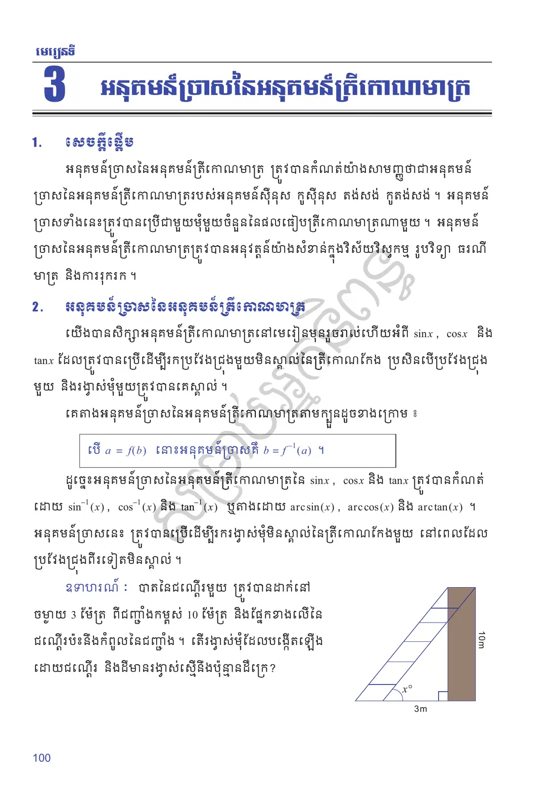
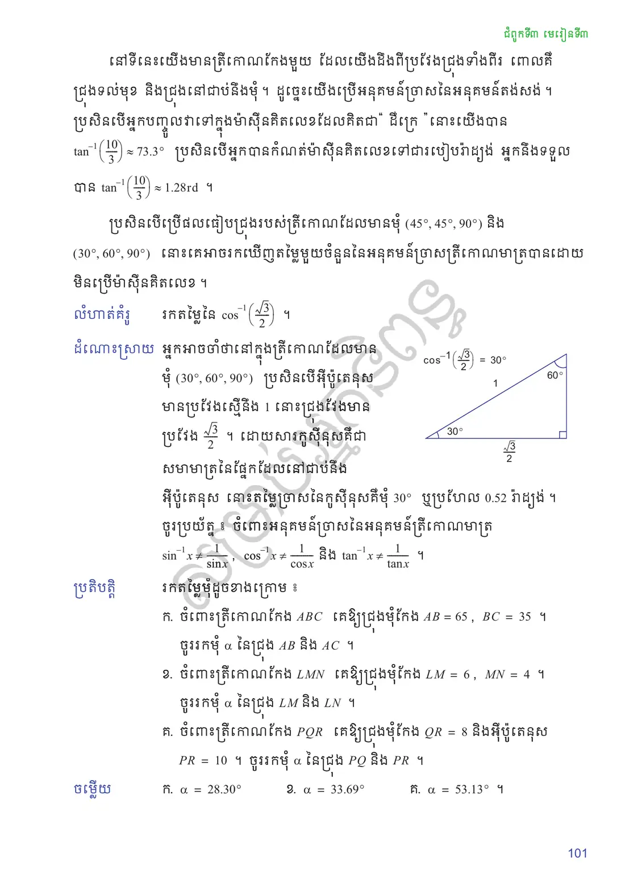
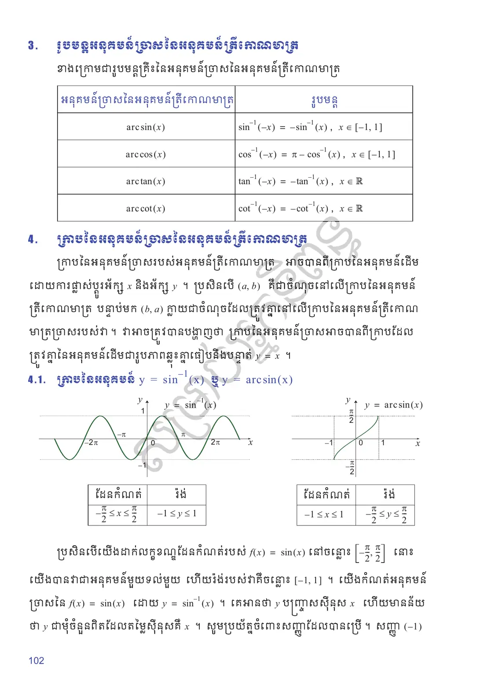
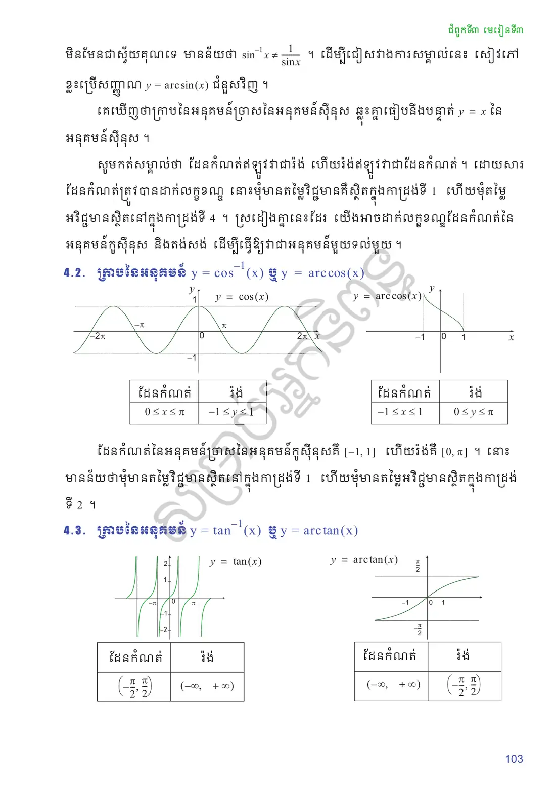
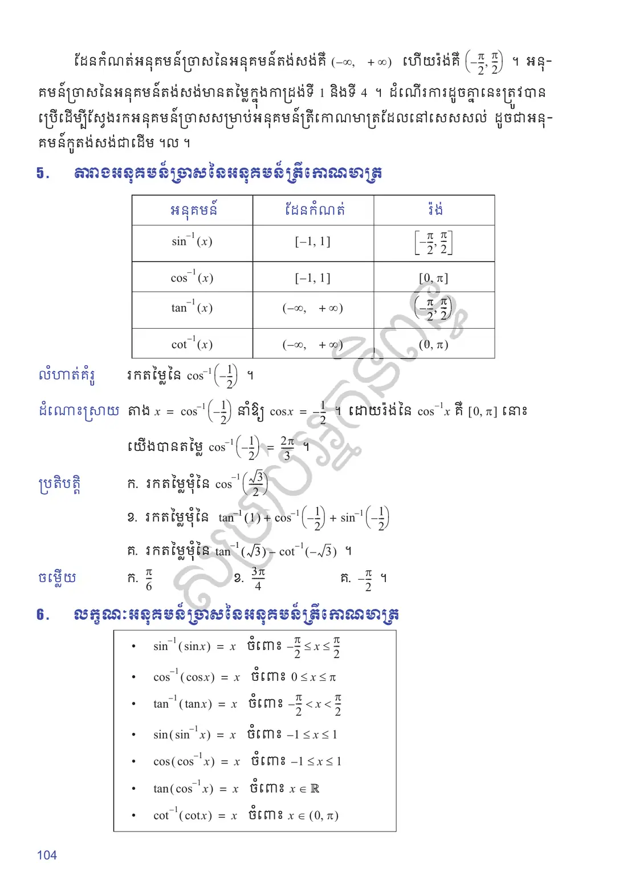
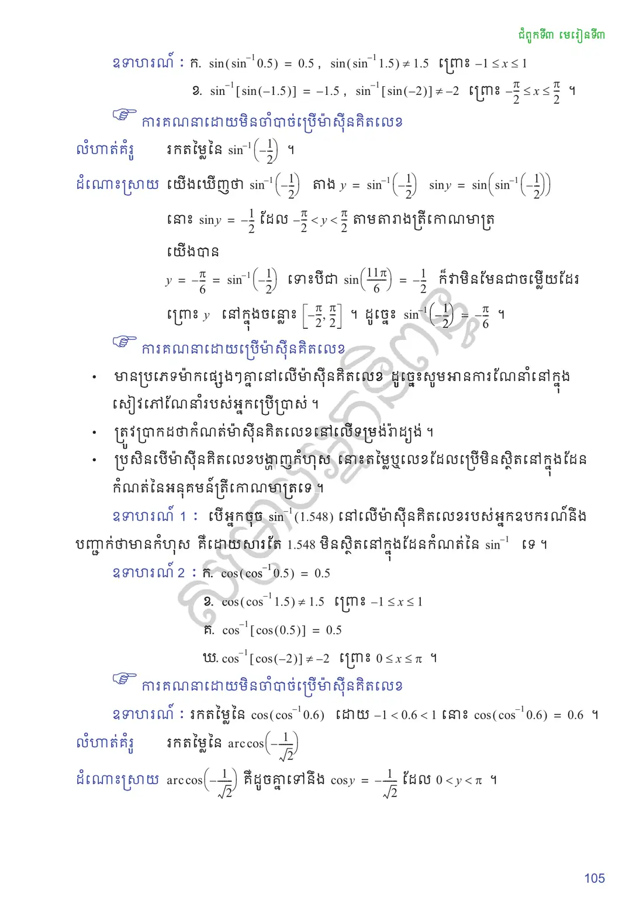
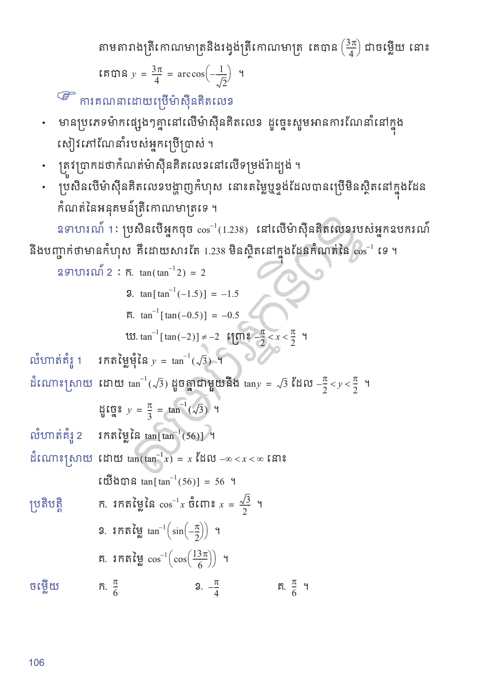
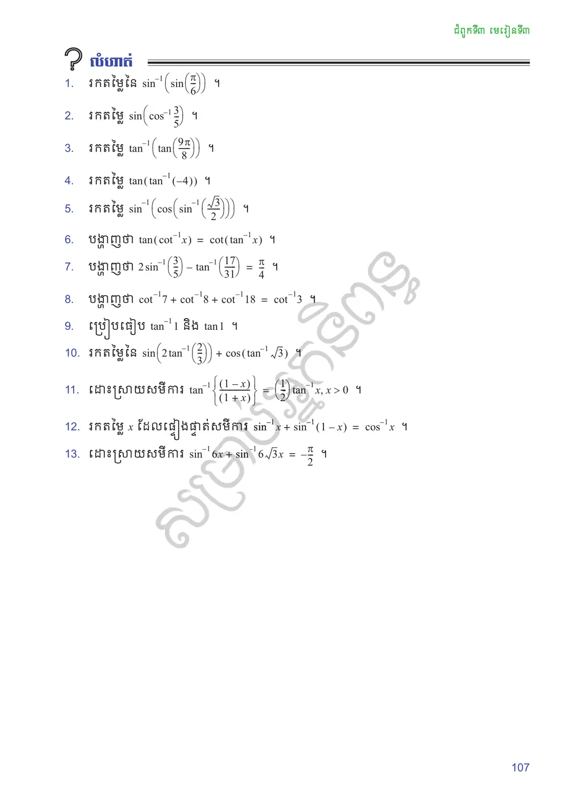

សេចក្តីផ្តើម
អនុគមន៍ច្រាសនៃអនុគមន៍ត្រីកោណមាត្រ ត្រូវបានកំណត់យ៉ាងសាមញ្ញថាជាអនុគមន៍ច្រាសនៃអនុគមន៍ត្រីកោណមាត្ររបស់អនុគមន៍ស៊ីនុស កូស៊ីនុស តង់សង់ កូតង់សង់ ។ អនុគមន៍ច្រាសទាំងនេះត្រូវបានប្រើជាមួយមុំមួយចំនួននៃផលធៀបត្រីកោណមាត្រណាមួយ ។ អនុគមន៍ច្រាសនៃអនុគមន៍ត្រីកោណមាត្រត្រូវបានអនុវត្តន៍យ៉ាងសំខាន់ក្នុងវិស័យវិស្វកម្ម រូបវិទ្យា ធរណីមាត្រ និងការរុករក ។
អនុគមន៍ច្រាសនៃអនុគមន៍ត្រីកោណមាត្រ
យើងបានសិក្សាអនុគមន៍ត្រីកោណមាត្រនៅមេរៀនមុនរួចរាល់ហើយអំពី \(\sin x\), \(\cos x\) និង \(\tan x\) ដែលត្រូវបានប្រើដើម្បីរកប្រវែងជ្រុងមួយមិនស្គាល់នៃត្រីកោណកែង ប្រសិនបើប្រវែងជ្រុងមួយ និងរង្វាស់មុំមួយត្រូវបានគេស្គាល់ ។
គេតាងអនុគមន៍ច្រាសនៃអនុគមន៍ត្រីកោណមាត្រតាមក្បួនដូចខាងក្រោម ៖
បើ \(a = f(b)\) នោះអនុគមន៍ច្រាសគឺ \(b = f^{-1}(a)\) ។
ដូច្នេះអនុគមន៍ច្រាសនៃអនុគមន៍ត្រីកោណមាត្រនៃ \(\sin x\), \(\cos x\) និង \(\tan x\) ត្រូវបានកំណត់ដោយ \(\sin^{-1}(x)\), \(\cos^{-1}(x)\) និង \(\tan^{-1}(x)\) ឬតាងដោយ \(\arcsin(x)\), \(\arccos(x)\) និង \(\arctan(x)\) ។ អនុគមន៍ច្រាសនេះ ត្រូវបានប្រើដើម្បីរករង្វាស់មុំមិនស្គាល់នៃត្រីកោណកែងមួយ នៅពេលដែលប្រវែងជ្រុងពីរទៀតមិនស្គាល់ ។
បាតនៃជណ្តើរមួយ ត្រូវបានដាក់នៅចម្ងាយ \(3\) ម៉ែត្រ ពីជញ្ជាំងកម្ពស់ \(10\) ម៉ែត្រ និងផ្នែកខាងលើនៃជណ្តើរប៉ះនឹងកំពូលនៃជញ្ជាំង ។ តើរង្វាស់មុំដែលបង្កើតឡើងដោយជណ្តើរ និងដីមានរង្វាស់ស្មើនឹងប៉ុន្មានដឺក្រេ?
![](data:image/svg+xml;charset=utf-8,%3C%3Fxml version=%221.0%22 encoding=%22UTF-8%22%3F%3E%3Csvg xmlns=%22http://www.w3.org/2000/svg%22 xmlns:xlink=%22http://www.w3.org/1999/xlink%22 width=%2278.24%22 height=%22118.85%22 viewBox=%220 0 78.24 118.85%22%3E%3Cdefs%3E%3Cg%3E%3Cg id=%22glyph-0-0%22%3E%3Cpath d=%22M 3.29 -2.98 C 3.35 -3.23 3.57 -4.14 4.26 -4.14 C 4.31 -4.14 4.56 -4.14 4.76 -4.01 C 4.48 -3.96 4.28 -3.71 4.28 -3.48 C 4.28 -3.32 4.39 -3.14 4.65 -3.14 C 4.87 -3.14 5.20 -3.31 5.20 -3.70 C 5.20 -4.21 4.60 -4.35 4.28 -4.35 C 3.70 -4.35 3.35 -3.82 3.25 -3.60 C 3 -4.26 2.46 -4.35 2.17 -4.35 C 1.15 -4.35 0.59 -3.09 0.59 -2.84 C 0.59 -2.73 0.68 -2.73 0.70 -2.73 C 0.78 -2.73 0.81 -2.76 0.84 -2.84 C 1.17 -3.89 1.82 -4.14 2.15 -4.14 C 2.34 -4.14 2.68 -4.04 2.68 -3.48 C 2.68 -3.17 2.53 -2.51 2.15 -1.14 C 2 -0.51 1.65 -0.10 1.21 -0.10 C 1.15 -0.10 0.93 -0.10 0.73 -0.23 C 0.96 -0.28 1.18 -0.5 1.18 -0.76 C 1.18 -1.03 0.96 -1.10 0.82 -1.10 C 0.53 -1.10 0.28 -0.85 0.28 -0.54 C 0.28 -0.09 0.78 0.10 1.21 0.10 C 1.85 0.10 2.21 -0.57 2.25 -0.64 C 2.35 -0.28 2.71 0.10 3.31 0.10 C 4.32 0.10 4.89 -1.15 4.89 -1.40 C 4.89 -1.51 4.79 -1.51 4.76 -1.51 C 4.68 -1.51 4.65 -1.46 4.64 -1.40 C 4.31 -0.34 3.64 -0.10 3.32 -0.10 C 2.95 -0.10 2.79 -0.42 2.79 -0.76 C 2.79 -0.96 2.84 -1.18 2.95 -1.62 Z M 3.29 -2.98 %22/%3E%3C/g%3E%3Cg id=%22glyph-1-0%22%3E%3Cpath d=%22M 3.5 -1.73 C 3.5 -2.56 2.82 -3.21 2.01 -3.21 C 1.18 -3.21 0.53 -2.54 0.53 -1.73 C 0.53 -0.89 1.20 -0.25 2.01 -0.25 C 2.84 -0.25 3.5 -0.92 3.5 -1.73 Z M 2.01 -0.59 C 1.37 -0.59 0.87 -1.10 0.87 -1.73 C 0.87 -2.37 1.37 -2.87 2.01 -2.87 C 2.67 -2.87 3.15 -2.34 3.15 -1.73 C 3.15 -1.09 2.65 -0.59 2.01 -0.59 Z M 2.01 -0.59 %22/%3E%3C/g%3E%3Cg id=%22glyph-2-0%22%3E%3Cpath d=%22M 2.85 -3.46 C 3.67 -3.73 4.23 -4.42 4.23 -5.20 C 4.23 -6.01 3.37 -6.56 2.42 -6.56 C 1.42 -6.56 0.68 -5.96 0.68 -5.21 C 0.68 -4.90 0.89 -4.71 1.18 -4.71 C 1.48 -4.71 1.68 -4.92 1.68 -5.21 C 1.68 -5.70 1.21 -5.70 1.07 -5.70 C 1.37 -6.18 2.03 -6.31 2.39 -6.31 C 2.79 -6.31 3.32 -6.10 3.32 -5.21 C 3.32 -5.09 3.31 -4.53 3.06 -4.09 C 2.76 -3.62 2.42 -3.59 2.17 -3.57 C 2.09 -3.56 1.85 -3.54 1.79 -3.54 C 1.71 -3.54 1.64 -3.53 1.64 -3.43 C 1.64 -3.32 1.71 -3.32 1.89 -3.32 L 2.31 -3.32 C 3.12 -3.32 3.48 -2.65 3.48 -1.68 C 3.48 -0.34 2.81 -0.06 2.37 -0.06 C 1.95 -0.06 1.21 -0.23 0.87 -0.81 C 1.21 -0.76 1.51 -0.96 1.51 -1.34 C 1.51 -1.70 1.25 -1.90 0.96 -1.90 C 0.73 -1.90 0.42 -1.76 0.42 -1.32 C 0.42 -0.43 1.32 0.21 2.40 0.21 C 3.60 0.21 4.5 -0.68 4.5 -1.68 C 4.5 -2.5 3.89 -3.26 2.85 -3.46 Z M 2.85 -3.46 %22/%3E%3C/g%3E%3Cg id=%22glyph-2-1%22%3E%3Cpath d=%22M 2.90 -6.31 C 2.90 -6.54 2.90 -6.56 2.67 -6.56 C 2.06 -5.93 1.18 -5.93 0.87 -5.93 L 0.87 -5.62 C 1.07 -5.62 1.65 -5.62 2.17 -5.89 L 2.17 -0.78 C 2.17 -0.42 2.14 -0.31 1.25 -0.31 L 0.93 -0.31 L 0.93 0 C 1.28 -0.03 2.14 -0.03 2.53 -0.03 C 2.92 -0.03 3.78 -0.03 4.12 0 L 4.12 -0.31 L 3.81 -0.31 C 2.92 -0.31 2.90 -0.42 2.90 -0.78 Z M 2.90 -6.31 %22/%3E%3C/g%3E%3Cg id=%22glyph-2-2%22%3E%3Cpath d=%22M 4.53 -3.15 C 4.53 -3.93 4.48 -4.73 4.14 -5.46 C 3.68 -6.40 2.87 -6.56 2.46 -6.56 C 1.87 -6.56 1.15 -6.31 0.75 -5.39 C 0.43 -4.71 0.39 -3.93 0.39 -3.15 C 0.39 -2.42 0.42 -1.53 0.82 -0.78 C 1.25 0.01 1.96 0.21 2.45 0.21 C 2.98 0.21 3.73 0.01 4.17 -0.92 C 4.48 -1.60 4.53 -2.37 4.53 -3.15 Z M 2.45 0 C 2.07 0 1.48 -0.25 1.31 -1.18 C 1.20 -1.78 1.20 -2.68 1.20 -3.26 C 1.20 -3.90 1.20 -4.56 1.28 -5.09 C 1.46 -6.26 2.20 -6.34 2.45 -6.34 C 2.78 -6.34 3.43 -6.17 3.62 -5.20 C 3.71 -4.64 3.71 -3.89 3.71 -3.26 C 3.71 -2.53 3.71 -1.85 3.60 -1.23 C 3.45 -0.29 2.90 0 2.45 0 Z M 2.45 0 %22/%3E%3C/g%3E%3Cg id=%22glyph-3-0%22%3E%3Cpath d=%22M 4.54 -3.37 L 4.54 0 L 3.82 0 L 3.82 -3.42 C 3.82 -4.31 3.47 -4.76 2.76 -4.76 C 2.32 -4.76 1.99 -4.56 1.76 -4.17 C 1.53 -3.78 1.42 -3.51 1.42 -3.37 L 1.42 0 L 0.70 0 L 0.70 -5.48 L 1.42 -5.48 L 1.42 -4.54 C 1.85 -5.17 2.35 -5.48 2.92 -5.48 C 3.71 -5.48 4.21 -5.11 4.42 -4.37 L 4.54 -4.54 C 4.98 -5.17 5.48 -5.48 6.04 -5.48 C 7.14 -5.48 7.68 -4.78 7.68 -3.37 L 7.68 0 L 6.96 0 L 6.96 -3.42 C 6.96 -4.31 6.61 -4.76 5.90 -4.76 C 5.46 -4.76 5.12 -4.56 4.89 -4.17 C 4.66 -3.78 4.54 -3.51 4.54 -3.37 Z M 4.54 -3.37 %22/%3E%3C/g%3E%3C/g%3E%3CclipPath id=%22clip-0%22%3E%3Cpath clip-rule=%22nonzero%22 d=%22M 0 0.49 L 49 0.49 L 49 114 L 0 114 Z M 0 0.49 %22/%3E%3C/clipPath%3E%3C/defs%3E%3Cpath fill-rule=%22nonzero%22 fill=%22rgb(84.99%25, 69.99%25, 54.99%25)%22 fill-opacity=%221%22 d=%22M 37.74 102.11 L 37.74 3.85 L 49.53 3.85 L 49.53 102.11 Z M 37.74 102.11 %22/%3E%3Cg clip-path=%22url(%23clip-0)%22%3E%3Cpath fill=%22none%22 stroke-width=%220.79%22 stroke-linecap=%22butt%22 stroke-linejoin=%22miter%22 stroke=%22rgb(0%25, 0%25, 69.99%25)%22 stroke-opacity=%221%22 stroke-miterlimit=%2210%22 d=%22M 0.00 -0.00 L 29.76 99.21 %22 transform=%22matrix(0.99, 0, 0, -0.99, 8.26, 102.11)%22/%3E%3C/g%3E%3Cpath fill=%22none%22 stroke-width=%220.79%22 stroke-linecap=%22butt%22 stroke-linejoin=%22miter%22 stroke=%22rgb(0%25, 0%25, 0%25)%22 stroke-opacity=%221%22 stroke-miterlimit=%2210%22 d=%22M -4.95 -0.00 L 44.64 -0.00 %22 transform=%22matrix(0.99, 0, 0, -0.99, 8.26, 102.11)%22/%3E%3Cpath fill=%22none%22 stroke-width=%220.39%22 stroke-linecap=%22butt%22 stroke-linejoin=%22miter%22 stroke=%22rgb(0%25, 0%25, 0%25)%22 stroke-opacity=%221%22 stroke-miterlimit=%2210%22 d=%22M 29.76 -0.00 L 29.76 3.96 L 25.79 3.96 L 25.79 -0.00 Z M 29.76 -0.00 %22 transform=%22matrix(0.99, 0, 0, -0.99, 8.26, 102.11)%22/%3E%3Cpath fill=%22none%22 stroke-width=%220.39%22 stroke-linecap=%22butt%22 stroke-linejoin=%22miter%22 stroke=%22rgb(0%25, 0%25, 0%25)%22 stroke-opacity=%221%22 stroke-miterlimit=%2210%22 d=%22M 11.90 -0.00 C 11.90 5.23 8.48 9.85 3.48 11.38 %22 transform=%22matrix(0.99, 0, 0, -0.99, 8.26, 102.11)%22/%3E%3Cg fill=%22rgb(0%25, 0%25, 0%25)%22 fill-opacity=%221%22%3E%3Cuse xlink:href=%22%23glyph-0-0%22 x=%2219.88%22 y=%2296.66%22/%3E%3C/g%3E%3Cg fill=%22rgb(0%25, 0%25, 0%25)%22 fill-opacity=%221%22%3E%3Cuse xlink:href=%22%23glyph-1-0%22 x=%2225.52%22 y=%2293.08%22/%3E%3C/g%3E%3Cg fill=%22rgb(0%25, 0%25, 0%25)%22 fill-opacity=%221%22%3E%3Cuse xlink:href=%22%23glyph-2-0%22 x=%2216.36%22 y=%22111.95%22/%3E%3C/g%3E%3Cg fill=%22rgb(0%25, 0%25, 0%25)%22 fill-opacity=%221%22%3E%3Cuse xlink:href=%22%23glyph-3-0%22 x=%2221.30%22 y=%22111.95%22/%3E%3C/g%3E%3Cg fill=%22rgb(0%25, 0%25, 0%25)%22 fill-opacity=%221%22%3E%3Cuse xlink:href=%22%23glyph-2-1%22 x=%2253.02%22 y=%2256.15%22/%3E%3Cuse xlink:href=%22%23glyph-2-2%22 x=%2257.95%22 y=%2256.15%22/%3E%3C/g%3E%3Cg fill=%22rgb(0%25, 0%25, 0%25)%22 fill-opacity=%221%22%3E%3Cuse xlink:href=%22%23glyph-3-0%22 x=%2262.89%22 y=%2256.15%22/%3E%3C/g%3E%3Cpath fill=%22none%22 stroke-width=%220.39%22 stroke-linecap=%22butt%22 stroke-linejoin=%22miter%22 stroke=%22rgb(0%25, 0%25, 69.99%25)%22 stroke-opacity=%221%22 stroke-miterlimit=%2210%22 d=%22M 5.95 19.84 L 29.76 19.84 %22 transform=%22matrix(0.99, 0, 0, -0.99, 8.26, 102.11)%22/%3E%3Cpath fill=%22none%22 stroke-width=%220.39%22 stroke-linecap=%22butt%22 stroke-linejoin=%22miter%22 stroke=%22rgb(0%25, 0%25, 69.99%25)%22 stroke-opacity=%221%22 stroke-miterlimit=%2210%22 d=%22M 11.90 39.68 L 29.76 39.68 %22 transform=%22matrix(0.99, 0, 0, -0.99, 8.26, 102.11)%22/%3E%3Cpath fill=%22none%22 stroke-width=%220.39%22 stroke-linecap=%22butt%22 stroke-linejoin=%22miter%22 stroke=%22rgb(0%25, 0%25, 69.99%25)%22 stroke-opacity=%221%22 stroke-miterlimit=%2210%22 d=%22M 17.85 59.53 L 29.76 59.53 %22 transform=%22matrix(0.99, 0, 0, -0.99, 8.26, 102.11)%22/%3E%3Cpath fill=%22none%22 stroke-width=%220.39%22 stroke-linecap=%22butt%22 stroke-linejoin=%22miter%22 stroke=%22rgb(0%25, 0%25, 69.99%25)%22 stroke-opacity=%221%22 stroke-miterlimit=%2210%22 d=%22M 23.81 79.37 L 29.76 79.37 %22 transform=%22matrix(0.99, 0, 0, -0.99, 8.26, 102.11)%22/%3E%3C/svg%3E%0A)
នៅទីនេះយើងមានត្រីកោណកែងមួយ ដែលយើងដឹងពីប្រវែងជ្រុងទាំងពីរ ពោលគឺ ជ្រុងទល់មុខ និងជ្រុងនៅជាប់នឹងមុំ ។ ដូច្នេះ យើងប្រើអនុគមន៍ច្រាសនៃអនុគមន៍តង់សង់ ។ ប្រសិនបើអ្នកបញ្ចូលវាទៅក្នុងម៉ាស៊ីនគិតលេខដែលគិតជា “ដឺក្រេ” នោះយើងបាន \(\tan^{-1}\left(\dfrac{10}{3}\right) \approx 73.3^\circ\) ។ ប្រសិនបើអ្នកបានកំណត់ម៉ាស៊ីនគិតលេខទៅជារបៀបរ៉ាដ្យង់ អ្នកនឹងទទួលបាន \(\tan^{-1}\left(\dfrac{10}{3}\right) \approx 1.28\) rd ។
ប្រសិនបើប្រើផលធៀបជ្រុងរបស់ត្រីកោណដែលមានមុំ \((45^\circ, 45^\circ, 90^\circ)\) និង \((30^\circ, 60^\circ, 90^\circ)\) នោះគេអាចរកឃើញតម្លៃមួយចំនួននៃអនុគមន៍ច្រាសត្រីកោណមាត្របានដោយមិនប្រើម៉ាស៊ីនគិតលេខ ។
រកតម្លៃនៃ \(\cos^{-1}\left(\dfrac{\sqrt{3}}{2}\right)\) ។
អ្នកអាចចាំថានៅក្នុងត្រីកោណដែលមានមុំ \((30^\circ, 60^\circ, 90^\circ)\) ប្រសិនបើអ៊ីប៉ូតេនុសមានប្រវែងស្មើនឹង \(1\) នោះជ្រុងវែងមានប្រវែង \(\dfrac{\sqrt{3}}{2}\) ។ ដោយសារកូស៊ីនុសគឺជាសមាមាត្រនៃផ្នែកដែលនៅជាប់នឹងអ៊ីប៉ូតេនុស នោះតម្លៃច្រាសនៃកូស៊ីនុសគឺមុំ \(30^\circ\) ឬប្រហែល \(0.52\) រ៉ាដ្យង់ ។
![](data:image/svg+xml;charset=utf-8,%3C%3Fxml version=%221.0%22 encoding=%22UTF-8%22%3F%3E%3Csvg xmlns=%22http://www.w3.org/2000/svg%22 xmlns:xlink=%22http://www.w3.org/1999/xlink%22 width=%22104.97%22 height=%2283.75%22 viewBox=%220 0 104.97 83.75%22%3E%3Cdefs%3E%3Cg%3E%3Cg id=%22glyph-0-0%22%3E%3Cpath d=%22M 2.87 -3.5 C 3.70 -3.76 4.26 -4.46 4.26 -5.25 C 4.26 -6.06 3.40 -6.62 2.43 -6.62 C 1.43 -6.62 0.68 -6.01 0.68 -5.26 C 0.68 -4.93 0.90 -4.75 1.18 -4.75 C 1.5 -4.75 1.70 -4.96 1.70 -5.25 C 1.70 -5.75 1.23 -5.75 1.07 -5.75 C 1.39 -6.23 2.04 -6.37 2.40 -6.37 C 2.81 -6.37 3.35 -6.15 3.35 -5.25 C 3.35 -5.14 3.34 -4.56 3.07 -4.12 C 2.78 -3.64 2.43 -3.62 2.20 -3.60 C 2.10 -3.59 1.87 -3.57 1.81 -3.57 C 1.73 -3.56 1.65 -3.56 1.65 -3.45 C 1.65 -3.34 1.73 -3.34 1.89 -3.34 L 2.32 -3.34 C 3.15 -3.34 3.51 -2.67 3.51 -1.70 C 3.51 -0.34 2.82 -0.06 2.39 -0.06 C 1.96 -0.06 1.21 -0.23 0.87 -0.81 C 1.21 -0.76 1.53 -0.98 1.53 -1.35 C 1.53 -1.71 1.26 -1.92 0.96 -1.92 C 0.73 -1.92 0.42 -1.78 0.42 -1.34 C 0.42 -0.43 1.34 0.21 2.42 0.21 C 3.64 0.21 4.54 -0.68 4.54 -1.70 C 4.54 -2.51 3.92 -3.29 2.87 -3.5 Z M 2.87 -3.5 %22/%3E%3C/g%3E%3Cg id=%22glyph-0-1%22%3E%3Cpath d=%22M 4.57 -3.18 C 4.57 -3.96 4.51 -4.76 4.17 -5.5 C 3.71 -6.45 2.90 -6.62 2.48 -6.62 C 1.89 -6.62 1.15 -6.35 0.75 -5.43 C 0.43 -4.75 0.39 -3.96 0.39 -3.18 C 0.39 -2.43 0.42 -1.54 0.82 -0.78 C 1.26 0.01 1.98 0.21 2.46 0.21 C 3.01 0.21 3.76 0.01 4.20 -0.93 C 4.51 -1.62 4.57 -2.39 4.57 -3.18 Z M 2.46 0 C 2.09 0 1.5 -0.25 1.32 -1.20 C 1.21 -1.79 1.21 -2.71 1.21 -3.29 C 1.21 -3.93 1.21 -4.59 1.29 -5.12 C 1.48 -6.31 2.21 -6.40 2.46 -6.40 C 2.79 -6.40 3.45 -6.21 3.64 -5.23 C 3.75 -4.68 3.75 -3.92 3.75 -3.29 C 3.75 -2.54 3.75 -1.87 3.64 -1.25 C 3.48 -0.29 2.92 0 2.46 0 Z M 2.46 0 %22/%3E%3C/g%3E%3Cg id=%22glyph-0-2%22%3E%3Cpath d=%22M 1.31 -3.26 L 1.31 -3.5 C 1.31 -6.01 2.54 -6.37 3.04 -6.37 C 3.29 -6.37 3.70 -6.31 3.92 -5.96 C 3.78 -5.96 3.37 -5.96 3.37 -5.53 C 3.37 -5.21 3.62 -5.06 3.82 -5.06 C 4 -5.06 4.29 -5.15 4.29 -5.54 C 4.29 -6.14 3.85 -6.62 3.03 -6.62 C 1.76 -6.62 0.42 -5.34 0.42 -3.14 C 0.42 -0.48 1.56 0.21 2.5 0.21 C 3.59 0.21 4.54 -0.71 4.54 -2.03 C 4.54 -3.29 3.65 -4.25 2.54 -4.25 C 1.87 -4.25 1.51 -3.73 1.31 -3.26 Z M 2.5 -0.06 C 1.87 -0.06 1.56 -0.65 1.51 -0.81 C 1.32 -1.26 1.32 -2.06 1.32 -2.25 C 1.32 -3.01 1.65 -4.01 2.54 -4.01 C 2.70 -4.01 3.15 -4.01 3.46 -3.40 C 3.64 -3.03 3.64 -2.53 3.64 -2.03 C 3.64 -1.56 3.64 -1.06 3.48 -0.70 C 3.18 -0.10 2.71 -0.06 2.5 -0.06 Z M 2.5 -0.06 %22/%3E%3C/g%3E%3Cg id=%22glyph-0-3%22%3E%3Cpath d=%22M 2.92 -6.35 C 2.92 -6.59 2.92 -6.62 2.68 -6.62 C 2.07 -5.98 1.20 -5.98 0.89 -5.98 L 0.89 -5.67 C 1.07 -5.67 1.67 -5.67 2.18 -5.93 L 2.18 -0.78 C 2.18 -0.42 2.15 -0.31 1.26 -0.31 L 0.93 -0.31 L 0.93 0 C 1.29 -0.03 2.15 -0.03 2.54 -0.03 C 2.95 -0.03 3.81 -0.03 4.15 0 L 4.15 -0.31 L 3.84 -0.31 C 2.95 -0.31 2.92 -0.42 2.92 -0.78 Z M 2.92 -6.35 %22/%3E%3C/g%3E%3Cg id=%22glyph-1-0%22%3E%3Cpath d=%22M 3.53 -1.73 C 3.53 -2.57 2.84 -3.23 2.03 -3.23 C 1.20 -3.23 0.53 -2.56 0.53 -1.75 C 0.53 -0.90 1.20 -0.25 2.03 -0.25 C 2.85 -0.25 3.53 -0.92 3.53 -1.73 Z M 2.03 -0.59 C 1.37 -0.59 0.87 -1.12 0.87 -1.73 C 0.87 -2.39 1.39 -2.89 2.03 -2.89 C 2.68 -2.89 3.18 -2.35 3.18 -1.75 C 3.18 -1.09 2.67 -0.59 2.03 -0.59 Z M 2.03 -0.59 %22/%3E%3C/g%3E%3Cg id=%22glyph-1-1%22%3E%3Cpath d=%22M 3.07 5.85 L 1.71 3.15 C 1.68 3.07 1.65 3.03 1.60 3.03 C 1.57 3.03 1.56 3.03 1.5 3.09 L 0.75 3.59 C 0.65 3.65 0.65 3.68 0.65 3.70 C 0.65 3.75 0.68 3.79 0.75 3.79 C 0.78 3.79 0.79 3.79 0.89 3.73 C 0.95 3.68 1.15 3.54 1.25 3.48 L 2.76 6.5 C 2.81 6.59 2.82 6.60 2.92 6.60 C 2.98 6.60 3.06 6.60 3.14 6.48 L 6.64 -0.03 C 6.68 -0.12 6.68 -0.12 6.68 -0.17 C 6.68 -0.28 6.59 -0.34 6.51 -0.34 C 6.42 -0.34 6.39 -0.28 6.34 -0.18 Z M 3.07 5.85 %22/%3E%3C/g%3E%3Cg id=%22glyph-2-0%22%3E%3Cpath d=%22M 1.89 -2.32 C 2.43 -2.32 2.82 -1.95 2.82 -1.20 C 2.82 -0.34 2.32 -0.07 1.92 -0.07 C 1.64 -0.07 1.03 -0.15 0.75 -0.56 C 1.07 -0.57 1.14 -0.81 1.14 -0.95 C 1.14 -1.18 0.98 -1.34 0.76 -1.34 C 0.56 -1.34 0.37 -1.21 0.37 -0.93 C 0.37 -0.28 1.09 0.14 1.93 0.14 C 2.90 0.14 3.57 -0.5 3.57 -1.20 C 3.57 -1.75 3.12 -2.28 2.35 -2.45 C 3.09 -2.71 3.35 -3.23 3.35 -3.65 C 3.35 -4.20 2.71 -4.60 1.95 -4.60 C 1.18 -4.60 0.59 -4.23 0.59 -3.68 C 0.59 -3.45 0.75 -3.31 0.95 -3.31 C 1.17 -3.31 1.31 -3.48 1.31 -3.67 C 1.31 -3.87 1.17 -4.01 0.95 -4.03 C 1.20 -4.34 1.67 -4.42 1.93 -4.42 C 2.25 -4.42 2.68 -4.26 2.68 -3.65 C 2.68 -3.35 2.59 -3.04 2.40 -2.82 C 2.17 -2.56 1.98 -2.54 1.64 -2.53 C 1.45 -2.51 1.45 -2.51 1.40 -2.51 C 1.39 -2.51 1.34 -2.5 1.34 -2.42 C 1.34 -2.32 1.40 -2.32 1.51 -2.32 Z M 1.89 -2.32 %22/%3E%3C/g%3E%3Cg id=%22glyph-2-1%22%3E%3Cpath d=%22M 3.51 -1.26 L 3.28 -1.26 C 3.25 -1.10 3.18 -0.70 3.09 -0.62 C 3.03 -0.59 2.5 -0.59 2.40 -0.59 L 1.12 -0.59 C 1.85 -1.23 2.09 -1.43 2.51 -1.76 C 3.03 -2.17 3.51 -2.59 3.51 -3.26 C 3.51 -4.10 2.78 -4.60 1.89 -4.60 C 1.01 -4.60 0.43 -4.01 0.43 -3.37 C 0.43 -3.01 0.73 -2.98 0.81 -2.98 C 0.96 -2.98 1.17 -3.09 1.17 -3.34 C 1.17 -3.48 1.12 -3.71 0.76 -3.71 C 0.98 -4.21 1.45 -4.35 1.78 -4.35 C 2.46 -4.35 2.84 -3.82 2.84 -3.26 C 2.84 -2.65 2.40 -2.17 2.18 -1.92 L 0.5 -0.26 C 0.43 -0.20 0.43 -0.18 0.43 0 L 3.29 0 Z M 3.51 -1.26 %22/%3E%3C/g%3E%3C/g%3E%3CclipPath id=%22clip-0%22%3E%3Cpath clip-rule=%22nonzero%22 d=%22M 0.14 0 L 104.80 0 L 104.80 72 L 0.14 72 Z M 0.14 0 %22/%3E%3C/clipPath%3E%3C/defs%3E%3Cg clip-path=%22url(%23clip-0)%22%3E%3Cpath fill=%22none%22 stroke-width=%220.79%22 stroke-linecap=%22butt%22 stroke-linejoin=%22miter%22 stroke=%22rgb(0%25, 0%25, 69.99%25)%22 stroke-opacity=%221%22 stroke-miterlimit=%2210%22 d=%22M 0.00 -0.00 L 98.19 -0.00 L 98.19 56.69 Z M 0.00 -0.00 %22 transform=%22matrix(0.99, 0, 0, -0.99, 3.51, 59.90)%22/%3E%3C/g%3E%3Cpath fill=%22none%22 stroke-width=%220.39%22 stroke-linecap=%22butt%22 stroke-linejoin=%22miter%22 stroke=%22rgb(0%25, 0%25, 0%25)%22 stroke-opacity=%221%22 stroke-miterlimit=%2210%22 d=%22M 92.52 -0.00 L 92.52 5.66 L 98.19 5.66 L 98.19 -0.00 Z M 92.52 -0.00 %22 transform=%22matrix(0.99, 0, 0, -0.99, 3.51, 59.90)%22/%3E%3Cpath fill=%22none%22 stroke-width=%220.39%22 stroke-linecap=%22butt%22 stroke-linejoin=%22miter%22 stroke=%22rgb(0%25, 0%25, 0%25)%22 stroke-opacity=%221%22 stroke-miterlimit=%2210%22 d=%22M 19.84 -0.00 C 19.84 3.48 18.92 6.90 17.18 9.92 %22 transform=%22matrix(0.99, 0, 0, -0.99, 3.51, 59.90)%22/%3E%3Cg fill=%22rgb(0%25, 0%25, 0%25)%22 fill-opacity=%221%22%3E%3Cuse xlink:href=%22%23glyph-0-0%22 x=%2224.53%22 y=%2257.67%22/%3E%3Cuse xlink:href=%22%23glyph-0-1%22 x=%2229.49%22 y=%2257.67%22/%3E%3C/g%3E%3Cg fill=%22rgb(0%25, 0%25, 0%25)%22 fill-opacity=%221%22%3E%3Cuse xlink:href=%22%23glyph-1-0%22 x=%2234.46%22 y=%2254.06%22/%3E%3C/g%3E%3Cg fill=%22rgb(0%25, 0%25, 0%25)%22 fill-opacity=%221%22%3E%3Cuse xlink:href=%22%23glyph-0-2%22 x=%2283.88%22 y=%2220.93%22/%3E%3Cuse xlink:href=%22%23glyph-0-1%22 x=%2288.84%22 y=%2220.93%22/%3E%3C/g%3E%3Cg fill=%22rgb(0%25, 0%25, 0%25)%22 fill-opacity=%221%22%3E%3Cuse xlink:href=%22%23glyph-1-0%22 x=%2293.81%22 y=%2217.32%22/%3E%3C/g%3E%3Cg fill=%22rgb(0%25, 0%25, 0%25)%22 fill-opacity=%221%22%3E%3Cuse xlink:href=%22%23glyph-0-3%22 x=%2243.65%22 y=%2228.13%22/%3E%3C/g%3E%3Cg fill=%22rgb(0%25, 0%25, 0%25)%22 fill-opacity=%221%22%3E%3Cuse xlink:href=%22%23glyph-1-1%22 x=%2246.88%22 y=%2264.09%22/%3E%3C/g%3E%3Cpath fill=%22none%22 stroke-width=%220.33%22 stroke-linecap=%22butt%22 stroke-linejoin=%22miter%22 stroke=%22rgb(0%25, 0%25, 0%25)%22 stroke-opacity=%221%22 stroke-miterlimit=%2210%22 d=%22M -60.87 21.81 L -56.90 21.81 %22 transform=%22matrix(0.99, 0, 0, -0.99, 114.10, 85.66)%22/%3E%3Cg fill=%22rgb(0%25, 0%25, 0%25)%22 fill-opacity=%221%22%3E%3Cuse xlink:href=%22%23glyph-2-0%22 x=%2253.41%22 y=%2269.84%22/%3E%3C/g%3E%3Cpath fill=%22none%22 stroke-width=%220.39%22 stroke-linecap=%22butt%22 stroke-linejoin=%22miter%22 stroke=%22rgb(0%25, 0%25, 0%25)%22 stroke-opacity=%221%22 stroke-miterlimit=%2210%22 d=%22M -67.41 14.41 L -56.90 14.41 %22 transform=%22matrix(0.99, 0, 0, -0.99, 114.10, 85.66)%22/%3E%3Cg fill=%22rgb(0%25, 0%25, 0%25)%22 fill-opacity=%221%22%3E%3Cuse xlink:href=%22%23glyph-2-1%22 x=%2250.14%22 y=%2277.21%22/%3E%3C/g%3E%3C/svg%3E%0A)
ចំពោះអនុគមន៍ច្រាសនៃអនុគមន៍ត្រីកោណមាត្រ \(\sin^{-1}x \ne \dfrac{1}{\sin x}\), \(\cos^{-1}x \ne \dfrac{1}{\cos x}\) និង \(\tan^{-1}x \ne \dfrac{1}{\tan x}\) ។
រកតម្លៃមុំដូចខាងក្រោម ៖
ចំពោះត្រីកោណកែង \(ABC\) គេឱ្យជ្រុងមុំកែង \(AB = 65\), \(BC = 35\) ។ រកមុំ \(\alpha\) នៃជ្រុង \(AB\) និង \(AC\) ។
ចំពោះត្រីកោណកែង \(LMN\) គេឱ្យជ្រុងមុំកែង \(LM = 6\), \(MN = 4\) ។ រកមុំ \(\alpha\) នៃជ្រុង \(LM\) និង \(LN\) ។
ចំពោះត្រីកោណកែង \(PQR\) គេឱ្យជ្រុងមុំកែង \(QR = 8\) និងអ៊ីប៉ូតេនុស \(PR = 10\) ។ រកមុំ \(\alpha\) នៃជ្រុង \(PQ\) និង \(PR\) ។
មើលចម្លើយ
ក. \(\alpha \approx 28.30^\circ\) ខ. \(\alpha \approx 33.69^\circ\) គ. \(\alpha \approx 53.13^\circ\) ។
រូបមន្តអនុគមន៍ច្រាសនៃអនុគមន៍ត្រីកោណមាត្រ
ខាងក្រោមជារូបមន្តគ្រឹះនៃអនុគមន៍ច្រាសនៃអនុគមន៍ត្រីកោណមាត្រ
ក្រាបនៃអនុគមន៍ច្រាសនៃអនុគមន៍ត្រីកោណមាត្រ
ក្រាបនៃអនុគមន៍ច្រាសរបស់អនុគមន៍ត្រីកោណមាត្រ អាចបានពីក្រាបនៃអនុគមន៍ដើម ដោយការផ្លាស់ប្តូរអ័ក្ស \(x\) និងអ័ក្ស \(y\) ។ ប្រសិនបើ \((a, b)\) គឺជាចំណុចនៅលើក្រាបនៃអនុគមន៍ត្រីកោណមាត្រ បន្ទាប់មក \((b, a)\) ក្លាយជាចំណុចដែលត្រូវគ្នានៅលើក្រាបនៃអនុគមន៍ត្រីកោណមាត្រច្រាសរបស់វា ។ វាអាចត្រូវបានបង្ហាញថា ក្រាបនៃអនុគមន៍ច្រាសអាចបានពីក្រាបដែលត្រូវគ្នានៃអនុគមន៍ដើមជារូបភាពឆ្លុះគ្នាធៀបនឹងបន្ទាត់ \(y = x\) ។
ក្រាបនៃអនុគមន៍ \(y = \sin^{-1}(x)\) ឬ \(y = \arcsin(x)\)
![](data:image/svg+xml;charset=utf-8,%3C%3Fxml version=%221.0%22 encoding=%22UTF-8%22%3F%3E%3Csvg xmlns=%22http://www.w3.org/2000/svg%22 xmlns:xlink=%22http://www.w3.org/1999/xlink%22 width=%22254.13%22 height=%2278.49%22 viewBox=%220 0 254.13 78.49%22%3E%3Cdefs%3E%3Cg%3E%3Cg id=%22glyph-0-0%22%3E%3Cpath d=%22M 3.29 -2.98 C 3.35 -3.25 3.59 -4.15 4.28 -4.15 C 4.32 -4.15 4.56 -4.15 4.78 -4.03 C 4.5 -3.96 4.29 -3.73 4.29 -3.48 C 4.29 -3.32 4.40 -3.14 4.67 -3.14 C 4.89 -3.14 5.21 -3.32 5.21 -3.71 C 5.21 -4.23 4.62 -4.37 4.29 -4.37 C 3.71 -4.37 3.37 -3.84 3.25 -3.62 C 3 -4.26 2.46 -4.37 2.18 -4.37 C 1.15 -4.37 0.59 -3.09 0.59 -2.84 C 0.59 -2.75 0.68 -2.75 0.71 -2.75 C 0.79 -2.75 0.82 -2.76 0.84 -2.85 C 1.17 -3.90 1.82 -4.15 2.17 -4.15 C 2.35 -4.15 2.70 -4.06 2.70 -3.48 C 2.70 -3.18 2.53 -2.51 2.17 -1.14 C 2 -0.53 1.65 -0.10 1.21 -0.10 C 1.17 -0.10 0.93 -0.10 0.73 -0.23 C 0.98 -0.28 1.20 -0.5 1.20 -0.76 C 1.20 -1.03 0.98 -1.12 0.82 -1.12 C 0.53 -1.12 0.28 -0.85 0.28 -0.54 C 0.28 -0.09 0.78 0.10 1.21 0.10 C 1.87 0.10 2.21 -0.57 2.25 -0.64 C 2.37 -0.28 2.73 0.10 3.32 0.10 C 4.34 0.10 4.90 -1.17 4.90 -1.42 C 4.90 -1.51 4.81 -1.51 4.78 -1.51 C 4.70 -1.51 4.67 -1.46 4.65 -1.40 C 4.32 -0.34 3.65 -0.10 3.34 -0.10 C 2.95 -0.10 2.79 -0.42 2.79 -0.76 C 2.79 -0.98 2.85 -1.20 2.96 -1.62 Z M 3.29 -2.98 %22/%3E%3C/g%3E%3Cg id=%22glyph-0-1%22%3E%3Cpath d=%22M 4.81 -3.76 C 4.84 -3.90 4.84 -3.92 4.84 -4 C 4.84 -4.17 4.70 -4.26 4.56 -4.26 C 4.45 -4.26 4.29 -4.20 4.21 -4.06 C 4.18 -4 4.10 -3.70 4.07 -3.51 C 4 -3.26 3.93 -3 3.87 -2.73 L 3.43 -0.95 C 3.39 -0.79 2.96 -0.10 2.31 -0.10 C 1.81 -0.10 1.70 -0.54 1.70 -0.90 C 1.70 -1.35 1.87 -1.98 2.20 -2.84 C 2.35 -3.25 2.40 -3.35 2.40 -3.56 C 2.40 -4 2.09 -4.37 1.59 -4.37 C 0.65 -4.37 0.28 -2.93 0.28 -2.84 C 0.28 -2.75 0.39 -2.75 0.40 -2.75 C 0.5 -2.75 0.51 -2.76 0.56 -2.92 C 0.82 -3.85 1.21 -4.15 1.56 -4.15 C 1.64 -4.15 1.81 -4.15 1.81 -3.84 C 1.81 -3.59 1.71 -3.32 1.64 -3.14 C 1.25 -2.09 1.06 -1.53 1.06 -1.06 C 1.06 -0.18 1.68 0.10 2.28 0.10 C 2.65 0.10 3 -0.06 3.28 -0.34 C 3.14 0.17 3.03 0.65 2.62 1.18 C 2.37 1.51 2 1.81 1.54 1.81 C 1.40 1.81 0.95 1.78 0.79 1.39 C 0.95 1.39 1.07 1.39 1.21 1.28 C 1.31 1.18 1.42 1.06 1.42 0.87 C 1.42 0.56 1.14 0.53 1.04 0.53 C 0.82 0.53 0.5 0.68 0.5 1.17 C 0.5 1.65 0.93 2.03 1.54 2.03 C 2.56 2.03 3.57 1.12 3.85 0.01 Z M 4.81 -3.76 %22/%3E%3C/g%3E%3Cg id=%22glyph-0-2%22%3E%3Cpath d=%22M 2.62 -3.68 L 3.73 -3.68 C 3.40 -2.21 3.32 -1.79 3.32 -1.14 C 3.32 -0.98 3.32 -0.71 3.40 -0.39 C 3.5 0.04 3.60 0.10 3.76 0.10 C 3.95 0.10 4.15 -0.06 4.15 -0.26 C 4.15 -0.32 4.15 -0.34 4.10 -0.48 C 3.81 -1.20 3.81 -1.84 3.81 -2.10 C 3.81 -2.64 3.89 -3.17 4 -3.68 L 5.12 -3.68 C 5.25 -3.68 5.60 -3.68 5.60 -4.03 C 5.60 -4.26 5.40 -4.26 5.21 -4.26 L 1.90 -4.26 C 1.68 -4.26 1.31 -4.26 0.87 -3.79 C 0.53 -3.40 0.26 -2.95 0.26 -2.90 C 0.26 -2.89 0.26 -2.81 0.39 -2.81 C 0.46 -2.81 0.48 -2.84 0.54 -2.92 C 1.03 -3.68 1.60 -3.68 1.79 -3.68 L 2.35 -3.68 C 2.04 -2.5 1.51 -1.29 1.09 -0.39 C 1.01 -0.25 1.01 -0.23 1.01 -0.15 C 1.01 0.03 1.17 0.10 1.31 0.10 C 1.60 0.10 1.68 -0.17 1.79 -0.53 C 1.93 -0.98 1.93 -1.01 2.06 -1.5 Z M 2.62 -3.68 %22/%3E%3C/g%3E%3Cg id=%22glyph-1-0%22%3E%3Cpath d=%22M 1.25 -0.76 L 2.29 -1.78 C 3.84 -3.14 4.43 -3.67 4.43 -4.67 C 4.43 -5.79 3.54 -6.59 2.34 -6.59 C 1.21 -6.59 0.5 -5.67 0.5 -4.79 C 0.5 -4.25 0.98 -4.25 1.01 -4.25 C 1.18 -4.25 1.53 -4.35 1.53 -4.76 C 1.53 -5.03 1.35 -5.28 1.01 -5.28 C 0.93 -5.28 0.90 -5.28 0.87 -5.26 C 1.10 -5.92 1.64 -6.28 2.21 -6.28 C 3.10 -6.28 3.54 -5.48 3.54 -4.67 C 3.54 -3.87 3.04 -3.09 2.5 -2.48 L 0.60 -0.35 C 0.5 -0.25 0.5 -0.23 0.5 0 L 4.15 0 L 4.43 -1.71 L 4.18 -1.71 C 4.14 -1.42 4.07 -0.98 3.96 -0.84 C 3.90 -0.76 3.25 -0.76 3.03 -0.76 Z M 1.25 -0.76 %22/%3E%3C/g%3E%3Cg id=%22glyph-1-1%22%3E%3Cpath d=%22M 2.90 -6.32 C 2.90 -6.56 2.90 -6.59 2.68 -6.59 C 2.06 -5.95 1.20 -5.95 0.87 -5.95 L 0.87 -5.64 C 1.07 -5.64 1.65 -5.64 2.17 -5.90 L 2.17 -0.78 C 2.17 -0.42 2.14 -0.31 1.25 -0.31 L 0.93 -0.31 L 0.93 0 C 1.28 -0.03 2.14 -0.03 2.54 -0.03 C 2.93 -0.03 3.79 -0.03 4.14 0 L 4.14 -0.31 L 3.82 -0.31 C 2.93 -0.31 2.90 -0.42 2.90 -0.78 Z M 2.90 -6.32 %22/%3E%3C/g%3E%3Cg id=%22glyph-1-2%22%3E%3Cpath d=%22M 6.79 -3.23 C 6.93 -3.23 7.12 -3.23 7.12 -3.43 C 7.12 -3.62 6.93 -3.62 6.81 -3.62 L 0.87 -3.62 C 0.73 -3.62 0.54 -3.62 0.54 -3.43 C 0.54 -3.23 0.73 -3.23 0.89 -3.23 Z M 6.81 -1.31 C 6.93 -1.31 7.12 -1.31 7.12 -1.51 C 7.12 -1.71 6.93 -1.71 6.79 -1.71 L 0.89 -1.71 C 0.73 -1.71 0.54 -1.71 0.54 -1.51 C 0.54 -1.31 0.73 -1.31 0.87 -1.31 Z M 6.81 -1.31 %22/%3E%3C/g%3E%3Cg id=%22glyph-1-3%22%3E%3Cpath d=%22M 3.28 2.37 C 3.28 2.34 3.28 2.32 3.10 2.15 C 1.87 0.90 1.54 -0.95 1.54 -2.46 C 1.54 -4.18 1.92 -5.92 3.14 -7.15 C 3.28 -7.26 3.28 -7.29 3.28 -7.31 C 3.28 -7.39 3.23 -7.42 3.17 -7.42 C 3.07 -7.42 2.18 -6.75 1.60 -5.48 C 1.09 -4.40 0.98 -3.29 0.98 -2.46 C 0.98 -1.70 1.09 -0.5 1.62 0.60 C 2.21 1.82 3.07 2.46 3.17 2.46 C 3.23 2.46 3.28 2.43 3.28 2.37 Z M 3.28 2.37 %22/%3E%3C/g%3E%3Cg id=%22glyph-1-4%22%3E%3Cpath d=%22M 2.85 -2.46 C 2.85 -3.25 2.75 -4.43 2.20 -5.56 C 1.60 -6.78 0.76 -7.42 0.65 -7.42 C 0.60 -7.42 0.56 -7.37 0.56 -7.31 C 0.56 -7.29 0.56 -7.26 0.75 -7.09 C 1.71 -6.10 2.28 -4.54 2.28 -2.46 C 2.28 -0.78 1.92 0.95 0.68 2.20 C 0.56 2.32 0.56 2.34 0.56 2.37 C 0.56 2.43 0.60 2.46 0.65 2.46 C 0.76 2.46 1.65 1.79 2.23 0.54 C 2.73 -0.54 2.85 -1.64 2.85 -2.46 Z M 2.85 -2.46 %22/%3E%3C/g%3E%3Cg id=%22glyph-2-0%22%3E%3Cpath d=%22M 6.51 -2.28 C 6.68 -2.28 6.85 -2.28 6.85 -2.46 C 6.85 -2.67 6.68 -2.67 6.51 -2.67 L 1.17 -2.67 C 1 -2.67 0.82 -2.67 0.82 -2.46 C 0.82 -2.28 1 -2.28 1.17 -2.28 Z M 6.51 -2.28 %22/%3E%3C/g%3E%3Cg id=%22glyph-3-0%22%3E%3Cpath d=%22M 2.54 0 C 1.09 0 0.37 -0.58 0.37 -1.75 L 1.09 -1.75 C 1.09 -1.06 1.57 -0.71 2.54 -0.71 C 3.51 -0.71 4 -1.03 4 -1.68 C 4 -2.03 3.68 -2.28 3.06 -2.45 L 2.29 -2.64 C 1.10 -2.92 0.51 -3.41 0.51 -4.10 C 0.51 -5.03 1.19 -5.5 2.54 -5.5 C 3.89 -5.5 4.57 -4.98 4.57 -3.95 L 3.84 -3.95 C 3.84 -4.50 3.41 -4.78 2.54 -4.78 C 1.67 -4.78 1.23 -4.55 1.23 -4.10 C 1.23 -3.76 1.65 -3.48 2.5 -3.26 L 3.28 -3.07 C 4.23 -2.84 4.71 -2.38 4.71 -1.68 C 4.71 -0.56 3.99 0 2.54 0 Z M 2.54 0 %22/%3E%3C/g%3E%3Cg id=%22glyph-3-1%22%3E%3Cpath d=%22M 0.65 -6.51 L 0.65 -7.25 L 1.39 -7.25 L 1.39 -6.51 Z M 1.39 -5.5 L 1.39 0 L 0.65 0 L 0.65 -5.5 Z M 1.39 -5.5 %22/%3E%3C/g%3E%3Cg id=%22glyph-3-2%22%3E%3Cpath d=%22M 4.34 0 L 4.34 -3.42 C 4.34 -4.32 3.92 -4.78 3.07 -4.78 C 2.64 -4.78 2.25 -4.58 1.92 -4.18 C 1.59 -3.80 1.43 -3.53 1.43 -3.37 L 1.43 0 L 0.71 0 L 0.71 -5.5 L 1.43 -5.5 L 1.43 -4.54 C 1.93 -5.17 2.48 -5.5 3.07 -5.5 C 4.39 -5.5 5.06 -4.80 5.06 -3.42 L 5.06 0 Z M 4.34 0 %22/%3E%3C/g%3E%3C/g%3E%3CclipPath id=%22clip-0%22%3E%3Cpath clip-rule=%22nonzero%22 d=%22M 0.38 20 L 243 20 L 243 74 L 0.38 74 Z M 0.38 20 %22/%3E%3C/clipPath%3E%3CclipPath id=%22clip-1%22%3E%3Cpath clip-rule=%22nonzero%22 d=%22M 73 9 L 167 9 L 167 77.98 L 73 77.98 Z M 73 9 %22/%3E%3C/clipPath%3E%3C/defs%3E%3Cpath fill=%22none%22 stroke-width=%220.39%22 stroke-linecap=%22butt%22 stroke-linejoin=%22miter%22 stroke=%22rgb(0%25, 0%25, 0%25)%22 stroke-opacity=%221%22 stroke-miterlimit=%2210%22 d=%22M -116.93 0.00 L 116.49 0.00 %22 transform=%22matrix(0.99, 0, 0, -0.99, 119.73, 46.93)%22/%3E%3Cpath fill-rule=%22nonzero%22 fill=%22rgb(0%25, 0%25, 0%25)%22 fill-opacity=%221%22 d=%22M 237.45 46.93 L 234.28 45.35 L 235.47 46.93 L 234.28 48.51 %22/%3E%3Cg fill=%22rgb(0%25, 0%25, 0%25)%22 fill-opacity=%221%22%3E%3Cuse xlink:href=%22%23glyph-0-0%22 x=%22240.95%22 y=%2249.06%22/%3E%3C/g%3E%3Cpath fill=%22none%22 stroke-width=%220.39%22 stroke-linecap=%22butt%22 stroke-linejoin=%22miter%22 stroke=%22rgb(0%25, 0%25, 0%25)%22 stroke-opacity=%221%22 stroke-miterlimit=%2210%22 d=%22M -0.00 -28.06 L -0.00 29.18 %22 transform=%22matrix(0.99, 0, 0, -0.99, 119.73, 46.93)%22/%3E%3Cpath fill-rule=%22nonzero%22 fill=%22rgb(0%25, 0%25, 0%25)%22 fill-opacity=%221%22 d=%22M 119.73 15.95 L 118.14 19.12 L 119.73 17.93 L 121.31 19.12 %22/%3E%3Cg fill=%22rgb(0%25, 0%25, 0%25)%22 fill-opacity=%221%22%3E%3Cuse xlink:href=%22%23glyph-0-1%22 x=%22117.12%22 y=%2210.53%22/%3E%3C/g%3E%3Cg clip-path=%22url(%23clip-0)%22%3E%3Cpath fill=%22none%22 stroke-width=%220.79%22 stroke-linecap=%22butt%22 stroke-linejoin=%22miter%22 stroke=%22rgb(0%25, 50%25, 0%25)%22 stroke-opacity=%221%22 stroke-miterlimit=%2210%22 d=%22M -112.25 -12.37 L -110.36 -11.13 L -108.48 -9.73 L -106.59 -8.20 L -104.70 -6.53 L -102.82 -4.78 L -100.93 -2.95 L -99.04 -1.08 L -97.16 0.79 L -95.27 2.67 L -93.38 4.50 L -91.50 6.27 L -89.61 7.95 L -87.73 9.51 L -85.84 10.93 L -83.95 12.19 L -82.06 13.27 L -80.18 14.16 L -78.29 14.85 L -76.41 15.31 L -74.52 15.55 L -72.63 15.56 L -70.74 15.35 L -68.86 14.91 L -66.97 14.25 L -65.09 13.39 L -63.20 12.33 L -61.31 11.08 L -59.43 9.68 L -57.54 8.13 L -55.65 6.47 L -53.77 4.71 L -51.88 2.88 L -49.99 1.01 L -48.11 -0.86 L -46.22 -2.73 L -44.33 -4.57 L -42.45 -6.33 L -40.56 -8.01 L -38.67 -9.56 L -36.79 -10.98 L -34.90 -12.23 L -33.01 -13.31 L -31.13 -14.19 L -29.24 -14.86 L -27.36 -15.32 L -25.47 -15.55 L -23.58 -15.56 L -21.69 -15.34 L -19.81 -14.89 L -17.92 -14.22 L -16.04 -13.35 L -14.15 -12.28 L -12.26 -11.03 L -10.37 -9.63 L -8.49 -8.07 L -6.60 -6.41 L -4.72 -4.65 L -2.83 -2.81 L -0.94 -0.94 L 0.93 0.93 L 2.82 2.80 L 4.70 4.63 L 6.59 6.40 L 8.48 8.07 L 10.37 9.62 L 12.25 11.03 L 14.14 12.28 L 16.02 13.35 L 17.91 14.22 L 19.80 14.88 L 21.69 15.33 L 23.57 15.56 L 25.46 15.55 L 27.34 15.32 L 29.23 14.87 L 31.12 14.20 L 33.00 13.32 L 34.89 12.24 L 36.78 10.98 L 38.66 9.57 L 40.55 8.02 L 42.44 6.35 L 44.32 4.58 L 46.21 2.75 L 48.09 0.87 L 49.98 -1.00 L 51.87 -2.87 L 53.76 -4.70 L 55.64 -6.46 L 57.53 -8.13 L 59.41 -9.67 L 61.30 -11.08 L 63.19 -12.32 L 65.08 -13.38 L 66.96 -14.25 L 68.85 -14.91 L 70.73 -15.35 L 72.62 -15.56 L 74.51 -15.55 L 76.39 -15.31 L 78.28 -14.85 L 80.16 -14.17 L 82.05 -13.28 L 83.94 -12.20 L 85.83 -10.94 L 87.71 -9.52 L 89.60 -7.96 L 91.48 -6.28 L 93.37 -4.51 L 95.26 -2.68 L 97.15 -0.80 L 99.03 1.07 L 100.92 2.94 L 102.80 4.76 L 104.69 6.52 L 106.58 8.19 L 108.46 9.73 L 110.35 11.13 L 112.24 12.36 %22 transform=%22matrix(0.99, 0, 0, -0.99, 119.73, 46.93)%22/%3E%3C/g%3E%3Cg clip-path=%22url(%23clip-1)%22%3E%3Cpath fill=%22none%22 stroke-width=%221.59%22 stroke-linecap=%22butt%22 stroke-linejoin=%22miter%22 stroke=%22rgb(0%25, 50%25, 0%25)%22 stroke-opacity=%221%22 stroke-miterlimit=%2210%22 d=%22M -24.49 -15.59 L -23.23 -15.54 L -21.97 -15.38 L -20.72 -15.13 L -19.46 -14.78 L -18.21 -14.34 L -16.95 -13.80 L -15.69 -13.17 L -14.44 -12.46 L -13.18 -11.66 L -11.93 -10.79 L -10.67 -9.86 L -9.42 -8.85 L -8.16 -7.79 L -6.90 -6.68 L -5.65 -5.52 L -4.39 -4.33 L -3.14 -3.11 L -1.88 -1.87 L -0.62 -0.62 L 0.62 0.62 L 1.88 1.87 L 3.13 3.11 L 4.39 4.33 L 5.64 5.52 L 6.90 6.68 L 8.16 7.79 L 9.42 8.85 L 10.67 9.85 L 11.92 10.80 L 13.18 11.66 L 14.44 12.46 L 15.69 13.17 L 16.95 13.80 L 18.20 14.34 L 19.46 14.78 L 20.71 15.13 L 21.97 15.38 L 23.23 15.53 L 24.48 15.58 %22 transform=%22matrix(0.99, 0, 0, -0.99, 119.73, 46.93)%22/%3E%3C/g%3E%3Cpath fill=%22none%22 stroke-width=%220.39%22 stroke-linecap=%22butt%22 stroke-linejoin=%22miter%22 stroke=%22rgb(0%25, 0%25, 0%25)%22 stroke-opacity=%221%22 stroke-dasharray=%220.39 1.99%22 stroke-miterlimit=%2210%22 d=%22M -112.25 15.58 L 112.25 15.58 %22 transform=%22matrix(0.99, 0, 0, -0.99, 119.73, 46.93)%22/%3E%3Cpath fill=%22none%22 stroke-width=%220.39%22 stroke-linecap=%22butt%22 stroke-linejoin=%22miter%22 stroke=%22rgb(0%25, 0%25, 0%25)%22 stroke-opacity=%221%22 stroke-dasharray=%220.39 1.99%22 stroke-miterlimit=%2210%22 d=%22M -112.25 -15.59 L 112.25 -15.59 %22 transform=%22matrix(0.99, 0, 0, -0.99, 119.73, 46.93)%22/%3E%3Cg fill=%22rgb(0%25, 0%25, 0%25)%22 fill-opacity=%221%22%3E%3Cuse xlink:href=%22%23glyph-1-0%22 x=%22211.58%22 y=%2256.80%22/%3E%3C/g%3E%3Cg fill=%22rgb(0%25, 0%25, 0%25)%22 fill-opacity=%221%22%3E%3Cuse xlink:href=%22%23glyph-0-2%22 x=%22216.53%22 y=%2256.80%22/%3E%3C/g%3E%3Cg fill=%22rgb(0%25, 0%25, 0%25)%22 fill-opacity=%221%22%3E%3Cuse xlink:href=%22%23glyph-2-0%22 x=%2213.07%22 y=%2256.80%22/%3E%3C/g%3E%3Cg fill=%22rgb(0%25, 0%25, 0%25)%22 fill-opacity=%221%22%3E%3Cuse xlink:href=%22%23glyph-1-0%22 x=%2220.77%22 y=%2256.80%22/%3E%3C/g%3E%3Cg fill=%22rgb(0%25, 0%25, 0%25)%22 fill-opacity=%221%22%3E%3Cuse xlink:href=%22%23glyph-0-2%22 x=%2225.72%22 y=%2256.80%22/%3E%3C/g%3E%3Cg fill=%22rgb(0%25, 0%25, 0%25)%22 fill-opacity=%221%22%3E%3Cuse xlink:href=%22%23glyph-0-2%22 x=%22165.39%22 y=%2243.43%22/%3E%3C/g%3E%3Cg fill=%22rgb(0%25, 0%25, 0%25)%22 fill-opacity=%221%22%3E%3Cuse xlink:href=%22%23glyph-2-0%22 x=%2264.21%22 y=%2242.61%22/%3E%3C/g%3E%3Cg fill=%22rgb(0%25, 0%25, 0%25)%22 fill-opacity=%221%22%3E%3Cuse xlink:href=%22%23glyph-0-2%22 x=%2271.91%22 y=%2242.61%22/%3E%3C/g%3E%3Cg fill=%22rgb(0%25, 0%25, 0%25)%22 fill-opacity=%221%22%3E%3Cuse xlink:href=%22%23glyph-1-1%22 x=%22111.28%22 y=%2230.76%22/%3E%3C/g%3E%3Cg fill=%22rgb(0%25, 0%25, 0%25)%22 fill-opacity=%221%22%3E%3Cuse xlink:href=%22%23glyph-2-0%22 x=%22103.58%22 y=%2269.07%22/%3E%3C/g%3E%3Cg fill=%22rgb(0%25, 0%25, 0%25)%22 fill-opacity=%221%22%3E%3Cuse xlink:href=%22%23glyph-1-1%22 x=%22111.28%22 y=%2269.07%22/%3E%3C/g%3E%3Cg fill=%22rgb(0%25, 50%25, 0%25)%22 fill-opacity=%221%22%3E%3Cuse xlink:href=%22%23glyph-0-1%22 x=%22136.20%22 y=%2224.62%22/%3E%3C/g%3E%3Cg fill=%22rgb(0%25, 50%25, 0%25)%22 fill-opacity=%221%22%3E%3Cuse xlink:href=%22%23glyph-1-2%22 x=%22144.16%22 y=%2224.62%22/%3E%3C/g%3E%3Cg fill=%22rgb(0%25, 50%25, 0%25)%22 fill-opacity=%221%22%3E%3Cuse xlink:href=%22%23glyph-3-0%22 x=%22154.61%22 y=%2224.62%22/%3E%3Cuse xlink:href=%22%23glyph-3-1%22 x=%22159.57%22 y=%2224.62%22/%3E%3Cuse xlink:href=%22%23glyph-3-2%22 x=%22161.62%22 y=%2224.62%22/%3E%3C/g%3E%3Cg fill=%22rgb(0%25, 50%25, 0%25)%22 fill-opacity=%221%22%3E%3Cuse xlink:href=%22%23glyph-1-3%22 x=%22167.34%22 y=%2224.62%22/%3E%3C/g%3E%3Cg fill=%22rgb(0%25, 50%25, 0%25)%22 fill-opacity=%221%22%3E%3Cuse xlink:href=%22%23glyph-0-0%22 x=%22171.19%22 y=%2224.62%22/%3E%3C/g%3E%3Cg fill=%22rgb(0%25, 50%25, 0%25)%22 fill-opacity=%221%22%3E%3Cuse xlink:href=%22%23glyph-1-4%22 x=%22176.85%22 y=%2224.62%22/%3E%3C/g%3E%3C/svg%3E%0A)
![](data:image/svg+xml;charset=utf-8,%3C%3Fxml version=%221.0%22 encoding=%22UTF-8%22%3F%3E%3Csvg xmlns=%22http://www.w3.org/2000/svg%22 xmlns:xlink=%22http://www.w3.org/1999/xlink%22 width=%22125.86%22 height=%22123.21%22 viewBox=%220 0 125.86 123.21%22%3E%3Cdefs%3E%3Cg%3E%3Cg id=%22glyph-0-0%22%3E%3Cpath d=%22M 3.31 -2.98 C 3.37 -3.25 3.59 -4.15 4.29 -4.15 C 4.34 -4.15 4.57 -4.15 4.78 -4.03 C 4.5 -3.98 4.31 -3.73 4.31 -3.5 C 4.31 -3.34 4.42 -3.15 4.68 -3.15 C 4.90 -3.15 5.21 -3.32 5.21 -3.71 C 5.21 -4.23 4.64 -4.37 4.29 -4.37 C 3.71 -4.37 3.37 -3.85 3.26 -3.62 C 3.01 -4.28 2.48 -4.37 2.18 -4.37 C 1.15 -4.37 0.59 -3.09 0.59 -2.85 C 0.59 -2.75 0.68 -2.75 0.71 -2.75 C 0.79 -2.75 0.82 -2.78 0.84 -2.85 C 1.17 -3.90 1.82 -4.15 2.17 -4.15 C 2.35 -4.15 2.70 -4.07 2.70 -3.5 C 2.70 -3.18 2.53 -2.53 2.17 -1.14 C 2.01 -0.53 1.67 -0.10 1.23 -0.10 C 1.17 -0.10 0.93 -0.10 0.73 -0.23 C 0.98 -0.28 1.20 -0.5 1.20 -0.76 C 1.20 -1.04 0.98 -1.12 0.82 -1.12 C 0.53 -1.12 0.28 -0.85 0.28 -0.54 C 0.28 -0.09 0.78 0.10 1.21 0.10 C 1.87 0.10 2.23 -0.57 2.26 -0.64 C 2.37 -0.28 2.73 0.10 3.32 0.10 C 4.34 0.10 4.90 -1.17 4.90 -1.42 C 4.90 -1.51 4.82 -1.51 4.79 -1.51 C 4.70 -1.51 4.68 -1.46 4.67 -1.40 C 4.34 -0.34 3.67 -0.10 3.34 -0.10 C 2.96 -0.10 2.79 -0.42 2.79 -0.76 C 2.79 -0.98 2.85 -1.20 2.96 -1.64 Z M 3.31 -2.98 %22/%3E%3C/g%3E%3Cg id=%22glyph-0-1%22%3E%3Cpath d=%22M 4.81 -3.78 C 4.85 -3.90 4.85 -3.93 4.85 -4 C 4.85 -4.18 4.71 -4.26 4.56 -4.26 C 4.46 -4.26 4.31 -4.20 4.21 -4.06 C 4.20 -4.01 4.12 -3.70 4.07 -3.53 C 4.01 -3.26 3.93 -3 3.89 -2.73 L 3.43 -0.95 C 3.39 -0.79 2.96 -0.10 2.31 -0.10 C 1.81 -0.10 1.70 -0.54 1.70 -0.90 C 1.70 -1.35 1.87 -1.98 2.20 -2.85 C 2.37 -3.26 2.40 -3.37 2.40 -3.56 C 2.40 -4.01 2.09 -4.37 1.59 -4.37 C 0.65 -4.37 0.28 -2.93 0.28 -2.85 C 0.28 -2.75 0.39 -2.75 0.40 -2.75 C 0.5 -2.75 0.51 -2.78 0.56 -2.93 C 0.82 -3.85 1.23 -4.15 1.56 -4.15 C 1.64 -4.15 1.81 -4.15 1.81 -3.84 C 1.81 -3.59 1.71 -3.34 1.64 -3.15 C 1.25 -2.09 1.06 -1.53 1.06 -1.06 C 1.06 -0.18 1.68 0.10 2.28 0.10 C 2.67 0.10 3 -0.06 3.28 -0.34 C 3.15 0.17 3.03 0.65 2.64 1.18 C 2.37 1.53 2 1.81 1.54 1.81 C 1.40 1.81 0.95 1.78 0.79 1.39 C 0.95 1.39 1.07 1.39 1.21 1.28 C 1.31 1.18 1.42 1.06 1.42 0.87 C 1.42 0.56 1.15 0.53 1.04 0.53 C 0.82 0.53 0.5 0.68 0.5 1.17 C 0.5 1.67 0.93 2.03 1.54 2.03 C 2.56 2.03 3.59 1.12 3.85 0.01 Z M 4.81 -3.78 %22/%3E%3C/g%3E%3Cg id=%22glyph-1-0%22%3E%3Cpath d=%22M 6.53 -2.28 C 6.70 -2.28 6.87 -2.28 6.87 -2.48 C 6.87 -2.67 6.70 -2.67 6.53 -2.67 L 1.17 -2.67 C 1 -2.67 0.82 -2.67 0.82 -2.48 C 0.82 -2.28 1 -2.28 1.17 -2.28 Z M 6.53 -2.28 %22/%3E%3C/g%3E%3Cg id=%22glyph-2-0%22%3E%3Cpath d=%22M 2.90 -6.34 C 2.90 -6.57 2.90 -6.59 2.68 -6.59 C 2.07 -5.96 1.20 -5.96 0.87 -5.96 L 0.87 -5.65 C 1.07 -5.65 1.67 -5.65 2.17 -5.90 L 2.17 -0.78 C 2.17 -0.42 2.15 -0.31 1.26 -0.31 L 0.93 -0.31 L 0.93 0 C 1.28 -0.03 2.15 -0.03 2.54 -0.03 C 2.93 -0.03 3.79 -0.03 4.15 0 L 4.15 -0.31 L 3.82 -0.31 C 2.93 -0.31 2.90 -0.42 2.90 -0.78 Z M 2.90 -6.34 %22/%3E%3C/g%3E%3Cg id=%22glyph-2-1%22%3E%3Cpath d=%22M 6.81 -3.23 C 6.95 -3.23 7.14 -3.23 7.14 -3.43 C 7.14 -3.64 6.95 -3.64 6.81 -3.64 L 0.87 -3.64 C 0.75 -3.64 0.56 -3.64 0.56 -3.43 C 0.56 -3.23 0.75 -3.23 0.89 -3.23 Z M 6.81 -1.31 C 6.95 -1.31 7.14 -1.31 7.14 -1.51 C 7.14 -1.71 6.95 -1.71 6.81 -1.71 L 0.89 -1.71 C 0.75 -1.71 0.56 -1.71 0.56 -1.51 C 0.56 -1.31 0.75 -1.31 0.87 -1.31 Z M 6.81 -1.31 %22/%3E%3C/g%3E%3Cg id=%22glyph-2-2%22%3E%3Cpath d=%22M 3.28 2.37 C 3.28 2.34 3.28 2.32 3.10 2.15 C 1.87 0.90 1.56 -0.95 1.56 -2.48 C 1.56 -4.20 1.93 -5.92 3.15 -7.15 C 3.28 -7.28 3.28 -7.29 3.28 -7.32 C 3.28 -7.40 3.23 -7.43 3.18 -7.43 C 3.07 -7.43 2.18 -6.75 1.60 -5.5 C 1.09 -4.40 0.98 -3.31 0.98 -2.48 C 0.98 -1.70 1.09 -0.5 1.64 0.60 C 2.23 1.82 3.07 2.48 3.18 2.48 C 3.23 2.48 3.28 2.45 3.28 2.37 Z M 3.28 2.37 %22/%3E%3C/g%3E%3Cg id=%22glyph-2-3%22%3E%3Cpath d=%22M 2.85 -2.48 C 2.85 -3.25 2.75 -4.45 2.20 -5.56 C 1.60 -6.78 0.76 -7.43 0.65 -7.43 C 0.60 -7.43 0.56 -7.39 0.56 -7.32 C 0.56 -7.29 0.56 -7.28 0.75 -7.10 C 1.71 -6.12 2.28 -4.54 2.28 -2.48 C 2.28 -0.78 1.92 0.95 0.68 2.20 C 0.56 2.32 0.56 2.34 0.56 2.37 C 0.56 2.43 0.60 2.48 0.65 2.48 C 0.76 2.48 1.65 1.79 2.23 0.54 C 2.75 -0.54 2.85 -1.64 2.85 -2.48 Z M 2.85 -2.48 %22/%3E%3C/g%3E%3Cg id=%22glyph-3-0%22%3E%3Cpath d=%22M 2.15 -2.51 L 2.96 -2.51 C 2.87 -2.09 2.71 -1.46 2.71 -0.92 C 2.71 -0.64 2.75 -0.45 2.79 -0.29 C 2.90 0.04 3 0.06 3.10 0.06 C 3.26 0.06 3.43 -0.07 3.43 -0.25 C 3.43 -0.29 3.42 -0.32 3.37 -0.39 C 3.25 -0.65 3.12 -1.04 3.12 -1.60 C 3.12 -1.75 3.12 -2.01 3.21 -2.51 L 4.07 -2.51 C 4.20 -2.51 4.26 -2.51 4.34 -2.56 C 4.43 -2.64 4.45 -2.75 4.45 -2.78 C 4.45 -2.98 4.28 -2.98 4.15 -2.98 L 1.54 -2.98 C 1.26 -2.98 1.07 -2.92 0.76 -2.62 C 0.57 -2.46 0.31 -2.09 0.31 -2.03 C 0.31 -1.95 0.40 -1.95 0.42 -1.95 C 0.5 -1.95 0.51 -1.96 0.54 -2.03 C 0.90 -2.51 1.32 -2.51 1.48 -2.51 L 1.90 -2.51 C 1.70 -1.75 1.32 -0.93 1.10 -0.51 C 1.07 -0.42 1 -0.28 0.98 -0.25 C 0.96 -0.23 0.96 -0.20 0.96 -0.15 C 0.96 -0.04 1.04 0.06 1.20 0.06 C 1.48 0.06 1.56 -0.25 1.71 -0.85 Z M 2.15 -2.51 %22/%3E%3C/g%3E%3Cg id=%22glyph-4-0%22%3E%3Cpath d=%22M 3.5 -1.26 L 3.26 -1.26 C 3.23 -1.10 3.17 -0.70 3.07 -0.62 C 3.03 -0.59 2.48 -0.59 2.39 -0.59 L 1.12 -0.59 C 1.84 -1.23 2.09 -1.42 2.5 -1.75 C 3.01 -2.15 3.5 -2.59 3.5 -3.25 C 3.5 -4.07 2.76 -4.59 1.87 -4.59 C 1.01 -4.59 0.43 -4 0.43 -3.35 C 0.43 -3 0.73 -2.96 0.79 -2.96 C 0.96 -2.96 1.17 -3.09 1.17 -3.34 C 1.17 -3.45 1.12 -3.70 0.76 -3.70 C 0.96 -4.18 1.45 -4.34 1.76 -4.34 C 2.46 -4.34 2.82 -3.81 2.82 -3.25 C 2.82 -2.64 2.39 -2.17 2.17 -1.92 L 0.5 -0.26 C 0.43 -0.20 0.43 -0.18 0.43 0 L 3.28 0 Z M 3.5 -1.26 %22/%3E%3C/g%3E%3Cg id=%22glyph-5-0%22%3E%3Cpath d=%22M 3.96 -3 C 3.68 -2.88 3.32 -2.79 2.87 -2.73 C 1.66 -2.56 1.06 -2.17 1.06 -1.54 C 1.06 -0.99 1.41 -0.71 2.12 -0.71 C 2.81 -0.71 3.42 -1.06 3.96 -1.76 Z M 0.32 -4.10 C 0.32 -5.04 1.05 -5.51 2.51 -5.51 C 3.96 -5.51 4.68 -5.01 4.68 -4.01 L 4.68 0 L 3.96 0 L 3.96 -0.90 C 3.42 -0.30 2.81 0 2.12 0 C 0.92 0 0.32 -0.51 0.32 -1.54 C 0.32 -2.55 1.13 -3.16 2.75 -3.37 C 3.56 -3.48 3.96 -3.64 3.96 -3.82 L 3.96 -4.01 C 3.96 -4.52 3.48 -4.78 2.51 -4.78 C 1.54 -4.78 1.06 -4.55 1.06 -4.10 Z M 0.32 -4.10 %22/%3E%3C/g%3E%3Cg id=%22glyph-5-1%22%3E%3Cpath d=%22M 3.17 -4.78 C 2.70 -4.78 2.29 -4.58 1.95 -4.20 C 1.60 -3.81 1.43 -3.54 1.43 -3.39 L 1.43 0 L 0.70 0 L 0.70 -5.51 L 1.43 -5.51 L 1.43 -4.56 C 1.96 -5.19 2.54 -5.51 3.17 -5.51 Z M 3.17 -4.78 %22/%3E%3C/g%3E%3Cg id=%22glyph-5-2%22%3E%3Cpath d=%22M 4.76 -1.48 C 4.67 -1.17 4.53 -0.90 4.35 -0.68 C 3.97 -0.22 3.39 0 2.62 0 C 1.86 0 1.28 -0.22 0.90 -0.68 C 0.51 -1.14 0.32 -1.83 0.32 -2.75 C 0.32 -3.67 0.51 -4.36 0.90 -4.82 C 1.28 -5.28 1.86 -5.51 2.62 -5.51 C 3.39 -5.51 3.97 -5.28 4.35 -4.82 C 4.42 -4.73 4.5 -4.62 4.56 -4.51 L 3.92 -4.15 C 3.89 -4.20 3.85 -4.25 3.82 -4.29 C 3.57 -4.61 3.17 -4.78 2.62 -4.78 C 2.08 -4.78 1.68 -4.61 1.43 -4.29 C 1.18 -3.97 1.06 -3.45 1.06 -2.75 C 1.06 -2.05 1.18 -1.53 1.43 -1.20 C 1.68 -0.87 2.08 -0.71 2.62 -0.71 C 3.17 -0.71 3.57 -0.88 3.82 -1.21 C 3.92 -1.34 4.00 -1.50 4.06 -1.70 Z M 4.76 -1.48 %22/%3E%3C/g%3E%3Cg id=%22glyph-5-3%22%3E%3Cpath d=%22M 2.54 0 C 1.09 0 0.37 -0.58 0.37 -1.75 L 1.09 -1.75 C 1.09 -1.06 1.57 -0.71 2.54 -0.71 C 3.51 -0.71 4 -1.03 4 -1.68 C 4 -2.03 3.69 -2.28 3.07 -2.45 L 2.29 -2.64 C 1.10 -2.92 0.51 -3.42 0.51 -4.10 C 0.51 -5.04 1.19 -5.51 2.54 -5.51 C 3.89 -5.51 4.57 -4.99 4.57 -3.95 L 3.85 -3.95 C 3.85 -4.50 3.42 -4.78 2.54 -4.78 C 1.67 -4.78 1.25 -4.55 1.25 -4.10 C 1.25 -3.76 1.66 -3.48 2.5 -3.26 L 3.28 -3.07 C 4.23 -2.84 4.71 -2.38 4.71 -1.68 C 4.71 -0.56 3.99 0 2.54 0 Z M 2.54 0 %22/%3E%3C/g%3E%3Cg id=%22glyph-5-4%22%3E%3Cpath d=%22M 0.65 -6.53 L 0.65 -7.25 L 1.39 -7.25 L 1.39 -6.53 Z M 1.39 -5.51 L 1.39 0 L 0.65 0 L 0.65 -5.51 Z M 1.39 -5.51 %22/%3E%3C/g%3E%3Cg id=%22glyph-5-5%22%3E%3Cpath d=%22M 4.34 0 L 4.34 -3.43 C 4.34 -4.33 3.92 -4.78 3.09 -4.78 C 2.64 -4.78 2.25 -4.58 1.92 -4.20 C 1.59 -3.81 1.43 -3.54 1.43 -3.39 L 1.43 0 L 0.71 0 L 0.71 -5.51 L 1.43 -5.51 L 1.43 -4.56 C 1.94 -5.19 2.5 -5.51 3.09 -5.51 C 4.40 -5.51 5.06 -4.82 5.06 -3.43 L 5.06 0 Z M 4.34 0 %22/%3E%3C/g%3E%3C/g%3E%3C/defs%3E%3Cpath fill=%22none%22 stroke-width=%220.39%22 stroke-linecap=%22butt%22 stroke-linejoin=%22miter%22 stroke=%22rgb(0%25, 0%25, 0%25)%22 stroke-opacity=%221%22 stroke-miterlimit=%2210%22 d=%22M -51.02 -0.00 L 54.13 -0.00 %22 transform=%22matrix(0.99, 0, 0, -0.99, 54.19, 66.64)%22/%3E%3Cpath fill-rule=%22nonzero%22 fill=%22rgb(0%25, 0%25, 0%25)%22 fill-opacity=%221%22 d=%22M 109.96 66.64 L 106.79 65.06 L 107.98 66.64 L 106.79 68.23 %22/%3E%3Cg fill=%22rgb(0%25, 0%25, 0%25)%22 fill-opacity=%221%22%3E%3Cuse xlink:href=%22%23glyph-0-0%22 x=%22113.46%22 y=%2268.77%22/%3E%3C/g%3E%3Cpath fill=%22none%22 stroke-width=%220.39%22 stroke-linecap=%22butt%22 stroke-linejoin=%22miter%22 stroke=%22rgb(0%25, 0%25, 0%25)%22 stroke-opacity=%221%22 stroke-miterlimit=%2210%22 d=%22M -0.00 -48.47 L -0.00 49.03 %22 transform=%22matrix(0.99, 0, 0, -0.99, 54.19, 66.64)%22/%3E%3Cpath fill-rule=%22nonzero%22 fill=%22rgb(0%25, 0%25, 0%25)%22 fill-opacity=%221%22 d=%22M 54.19 15.94 L 52.61 19.11 L 54.19 17.92 L 55.78 19.11 %22/%3E%3Cg fill=%22rgb(0%25, 0%25, 0%25)%22 fill-opacity=%221%22%3E%3Cuse xlink:href=%22%23glyph-0-1%22 x=%2251.59%22 y=%2210.52%22/%3E%3C/g%3E%3Cpath fill=%22none%22 stroke-width=%220.79%22 stroke-linecap=%22butt%22 stroke-linejoin=%22miter%22 stroke=%22rgb(0%25, 50%25, 0%25)%22 stroke-opacity=%221%22 stroke-miterlimit=%2210%22 d=%22M -25.51 -40.07 L -24.86 -34.32 L -24.21 -31.92 L -23.57 -30.06 L -22.92 -28.49 L -22.28 -27.09 L -21.63 -25.82 L -20.99 -24.65 L -20.34 -23.54 L -19.70 -22.50 L -19.05 -21.51 L -18.40 -20.56 L -17.76 -19.64 L -17.11 -18.76 L -16.46 -17.90 L -15.82 -17.07 L -15.18 -16.25 L -14.53 -15.46 L -13.88 -14.68 L -13.24 -13.92 L -12.59 -13.17 L -11.94 -12.43 L -11.30 -11.71 L -10.65 -10.99 L -10.01 -10.28 L -9.36 -9.58 L -8.72 -8.90 L -8.07 -8.21 L -7.42 -7.53 L -6.78 -6.86 L -6.13 -6.19 L -5.48 -5.53 L -4.84 -4.87 L -4.20 -4.21 L -3.55 -3.56 L -2.90 -2.91 L -1.61 -1.61 L 2.25 2.25 L 2.90 2.90 L 3.54 3.56 L 4.19 4.21 L 4.84 4.87 L 5.48 5.53 L 6.13 6.19 L 6.77 6.85 L 7.42 7.53 L 8.06 8.21 L 8.71 8.89 L 9.36 9.58 L 10.00 10.28 L 10.65 10.99 L 11.30 11.70 L 11.94 12.42 L 12.59 13.16 L 13.23 13.91 L 13.88 14.67 L 14.52 15.45 L 15.17 16.25 L 15.82 17.06 L 16.46 17.89 L 17.11 18.75 L 17.75 19.63 L 18.40 20.55 L 19.04 21.50 L 19.69 22.50 L 20.34 23.54 L 20.98 24.64 L 21.63 25.81 L 22.27 27.08 L 22.92 28.48 L 23.57 30.05 L 24.21 31.90 L 24.86 34.30 L 25.50 39.87 %22 transform=%22matrix(0.99, 0, 0, -0.99, 54.19, 66.64)%22/%3E%3Cpath fill=%22none%22 stroke-width=%220.39%22 stroke-linecap=%22butt%22 stroke-linejoin=%22miter%22 stroke=%22rgb(0%25, 0%25, 0%25)%22 stroke-opacity=%221%22 stroke-dasharray=%220.39 1.99%22 stroke-miterlimit=%2210%22 d=%22M -51.02 40.07 L 51.02 40.07 %22 transform=%22matrix(0.99, 0, 0, -0.99, 54.19, 66.64)%22/%3E%3Cpath fill=%22none%22 stroke-width=%220.39%22 stroke-linecap=%22butt%22 stroke-linejoin=%22miter%22 stroke=%22rgb(0%25, 0%25, 0%25)%22 stroke-opacity=%221%22 stroke-dasharray=%220.39 1.99%22 stroke-miterlimit=%2210%22 d=%22M -51.02 -40.07 L 51.02 -40.07 %22 transform=%22matrix(0.99, 0, 0, -0.99, 54.19, 66.64)%22/%3E%3Cpath fill=%22none%22 stroke-width=%220.39%22 stroke-linecap=%22butt%22 stroke-linejoin=%22miter%22 stroke=%22rgb(0%25, 0%25, 0%25)%22 stroke-opacity=%221%22 stroke-dasharray=%220.39 1.99%22 stroke-miterlimit=%2210%22 d=%22M -25.51 -45.92 L -25.51 45.92 %22 transform=%22matrix(0.99, 0, 0, -0.99, 54.19, 66.64)%22/%3E%3Cpath fill=%22none%22 stroke-width=%220.39%22 stroke-linecap=%22butt%22 stroke-linejoin=%22miter%22 stroke=%22rgb(0%25, 0%25, 0%25)%22 stroke-opacity=%221%22 stroke-dasharray=%220.39 1.99%22 stroke-miterlimit=%2210%22 d=%22M 25.51 -45.92 L 25.51 45.92 %22 transform=%22matrix(0.99, 0, 0, -0.99, 54.19, 66.64)%22/%3E%3Cg fill=%22rgb(0%25, 0%25, 0%25)%22 fill-opacity=%221%22%3E%3Cuse xlink:href=%22%23glyph-1-0%22 x=%2212.70%22 y=%2276.52%22/%3E%3C/g%3E%3Cg fill=%22rgb(0%25, 0%25, 0%25)%22 fill-opacity=%221%22%3E%3Cuse xlink:href=%22%23glyph-2-0%22 x=%2220.40%22 y=%2276.52%22/%3E%3C/g%3E%3Cg fill=%22rgb(0%25, 0%25, 0%25)%22 fill-opacity=%221%22%3E%3Cuse xlink:href=%22%23glyph-2-0%22 x=%2283.04%22 y=%2276.52%22/%3E%3C/g%3E%3Cg fill=%22rgb(0%25, 0%25, 0%25)%22 fill-opacity=%221%22%3E%3Cuse xlink:href=%22%23glyph-3-0%22 x=%2244.63%22 y=%2220.12%22/%3E%3C/g%3E%3Cpath fill=%22none%22 stroke-width=%220.39%22 stroke-linecap=%22butt%22 stroke-linejoin=%22miter%22 stroke=%22rgb(0%25, 0%25, 0%25)%22 stroke-opacity=%221%22 stroke-miterlimit=%2210%22 d=%22M -16.59 7.41 L -11.68 7.41 %22 transform=%22matrix(0.99, 0, 0, -0.99, 61.12, 28.90)%22/%3E%3Cg fill=%22rgb(0%25, 0%25, 0%25)%22 fill-opacity=%221%22%3E%3Cuse xlink:href=%22%23glyph-4-0%22 x=%2245.10%22 y=%2227.43%22/%3E%3C/g%3E%3Cg fill=%22rgb(0%25, 0%25, 0%25)%22 fill-opacity=%221%22%3E%3Cuse xlink:href=%22%23glyph-1-0%22 x=%2257.69%22 y=%22112.74%22/%3E%3C/g%3E%3Cg fill=%22rgb(0%25, 0%25, 0%25)%22 fill-opacity=%221%22%3E%3Cuse xlink:href=%22%23glyph-3-0%22 x=%2266.58%22 y=%22108.84%22/%3E%3C/g%3E%3Cpath fill=%22none%22 stroke-width=%220.39%22 stroke-linecap=%22butt%22 stroke-linejoin=%22miter%22 stroke=%22rgb(0%25, 0%25, 0%25)%22 stroke-opacity=%221%22 stroke-miterlimit=%2210%22 d=%22M -8.84 7.41 L -3.93 7.41 %22 transform=%22matrix(0.99, 0, 0, -0.99, 75.37, 117.63)%22/%3E%3Cg fill=%22rgb(0%25, 0%25, 0%25)%22 fill-opacity=%221%22%3E%3Cuse xlink:href=%22%23glyph-4-0%22 x=%2267.04%22 y=%22116.15%22/%3E%3C/g%3E%3Cg fill=%22rgb(0%25, 50%25, 0%25)%22 fill-opacity=%221%22%3E%3Cuse xlink:href=%22%23glyph-0-1%22 x=%2260.61%22 y=%2220.95%22/%3E%3C/g%3E%3Cg fill=%22rgb(0%25, 50%25, 0%25)%22 fill-opacity=%221%22%3E%3Cuse xlink:href=%22%23glyph-2-1%22 x=%2268.57%22 y=%2220.95%22/%3E%3C/g%3E%3Cg fill=%22rgb(0%25, 50%25, 0%25)%22 fill-opacity=%221%22%3E%3Cuse xlink:href=%22%23glyph-5-0%22 x=%2279.02%22 y=%2220.95%22/%3E%3Cuse xlink:href=%22%23glyph-5-1%22 x=%2284.41%22 y=%2220.95%22/%3E%3Cuse xlink:href=%22%23glyph-5-2%22 x=%2287.67%22 y=%2220.95%22/%3E%3Cuse xlink:href=%22%23glyph-5-3%22 x=%2292.65%22 y=%2220.95%22/%3E%3Cuse xlink:href=%22%23glyph-5-4%22 x=%2297.61%22 y=%2220.95%22/%3E%3Cuse xlink:href=%22%23glyph-5-5%22 x=%2299.66%22 y=%2220.95%22/%3E%3C/g%3E%3Cg fill=%22rgb(0%25, 50%25, 0%25)%22 fill-opacity=%221%22%3E%3Cuse xlink:href=%22%23glyph-2-2%22 x=%22105.39%22 y=%2220.95%22/%3E%3C/g%3E%3Cg fill=%22rgb(0%25, 50%25, 0%25)%22 fill-opacity=%221%22%3E%3Cuse xlink:href=%22%23glyph-0-0%22 x=%22109.24%22 y=%2220.95%22/%3E%3C/g%3E%3Cg fill=%22rgb(0%25, 50%25, 0%25)%22 fill-opacity=%221%22%3E%3Cuse xlink:href=%22%23glyph-2-3%22 x=%22114.90%22 y=%2220.95%22/%3E%3C/g%3E%3C/svg%3E%0A)
ប្រសិនបើយើងដាក់លក្ខខណ្ឌដែនកំណត់របស់ \(f(x) = \sin(x)\) នៅចន្លោះ \(\left[-\dfrac{\pi}{2}, \dfrac{\pi}{2}\right]\) នោះយើងបានវាជាអនុគមន៍មួយទល់មួយ ហើយរ៉ង់របស់វាគឺចន្លោះ \([-1, 1]\) ។ យើងកំណត់អនុគមន៍ច្រាសនៃ \(f(x) = \sin(x)\) ដោយ \(y = \sin^{-1}(x)\) ។ គេអានថា \(y\) បញ្ច្រាសស៊ីនុស \(x\) ហើយមានន័យថា \(y\) ជាមុំចំនួនពិតដែលតម្លៃស៊ីនុសគឺ \(x\) ។ សូមប្រយ័ត្នចំពោះសញ្ញាដែលបានប្រើ ។ សញ្ញា \((-1)\) មិនមែនជាស្វ័យគុណទេ មានន័យថា \(\sin^{-1}x \ne \dfrac{1}{\sin x}\) ។ ដើម្បីជៀសវាងការសម្គាល់នេះ សៀវភៅខ្លះប្រើសញ្ញាណ \(y = \arcsin(x)\) ជំនួសវិញ ។
គេឃើញថាក្រាបនៃអនុគមន៍ច្រាសនៃអនុគមន៍ស៊ីនុស ឆ្លុះគ្នាធៀបនឹងបន្ទាត់ \(y = x\) នៃអនុគមន៍ស៊ីនុស ។
សូមកត់សម្គាល់ថា ដែនកំណត់ឥឡូវវាជារ៉ង់ ហើយរ៉ង់ឥឡូវវាជាដែនកំណត់ ។ ដោយសារដែនកំណត់ត្រូវបានដាក់លក្ខខណ្ឌ នោះមុំមានតម្លៃវិជ្ជមានគឺស្ថិតក្នុងកាដ្រង់ទី \(1\) ហើយមុំតម្លៃអវិជ្ជមានស្ថិតនៅក្នុងកាដ្រង់ទី \(4\) ។ ស្រដៀងគ្នានេះដែរ យើងអាចដាក់លក្ខខណ្ឌដែនកំណត់នៃអនុគមន៍កូស៊ីនុស និងតង់សង់ ដើម្បីធ្វើឱ្យវាជាអនុគមន៍មួយទល់មួយ ។
ក្រាបនៃអនុគមន៍ \(y = \cos^{-1}(x)\) ឬ \(y = \arccos(x)\)
![](data:image/svg+xml;charset=utf-8,%3C%3Fxml version=%221.0%22 encoding=%22UTF-8%22%3F%3E%3Csvg xmlns=%22http://www.w3.org/2000/svg%22 xmlns:xlink=%22http://www.w3.org/1999/xlink%22 width=%22254.13%22 height=%2278.49%22 viewBox=%220 0 254.13 78.49%22%3E%3Cdefs%3E%3Cg%3E%3Cg id=%22glyph-0-0%22%3E%3Cpath d=%22M 3.29 -2.98 C 3.35 -3.25 3.59 -4.15 4.28 -4.15 C 4.32 -4.15 4.56 -4.15 4.78 -4.03 C 4.5 -3.96 4.29 -3.73 4.29 -3.48 C 4.29 -3.32 4.40 -3.14 4.67 -3.14 C 4.89 -3.14 5.21 -3.32 5.21 -3.71 C 5.21 -4.23 4.62 -4.37 4.29 -4.37 C 3.71 -4.37 3.37 -3.84 3.25 -3.62 C 3 -4.26 2.46 -4.37 2.18 -4.37 C 1.15 -4.37 0.59 -3.09 0.59 -2.84 C 0.59 -2.75 0.68 -2.75 0.71 -2.75 C 0.79 -2.75 0.82 -2.76 0.84 -2.85 C 1.17 -3.90 1.82 -4.15 2.17 -4.15 C 2.35 -4.15 2.70 -4.06 2.70 -3.48 C 2.70 -3.18 2.53 -2.51 2.17 -1.14 C 2 -0.53 1.65 -0.10 1.21 -0.10 C 1.17 -0.10 0.93 -0.10 0.73 -0.23 C 0.98 -0.28 1.20 -0.5 1.20 -0.76 C 1.20 -1.03 0.98 -1.12 0.82 -1.12 C 0.53 -1.12 0.28 -0.85 0.28 -0.54 C 0.28 -0.09 0.78 0.10 1.21 0.10 C 1.87 0.10 2.21 -0.57 2.25 -0.64 C 2.37 -0.28 2.73 0.10 3.32 0.10 C 4.34 0.10 4.90 -1.17 4.90 -1.42 C 4.90 -1.51 4.81 -1.51 4.78 -1.51 C 4.70 -1.51 4.67 -1.46 4.65 -1.40 C 4.32 -0.34 3.65 -0.10 3.34 -0.10 C 2.95 -0.10 2.79 -0.42 2.79 -0.76 C 2.79 -0.98 2.85 -1.20 2.96 -1.62 Z M 3.29 -2.98 %22/%3E%3C/g%3E%3Cg id=%22glyph-0-1%22%3E%3Cpath d=%22M 4.81 -3.76 C 4.84 -3.90 4.84 -3.92 4.84 -4 C 4.84 -4.17 4.70 -4.26 4.56 -4.26 C 4.45 -4.26 4.29 -4.20 4.21 -4.06 C 4.18 -4 4.10 -3.70 4.07 -3.51 C 4 -3.26 3.93 -3 3.87 -2.73 L 3.43 -0.95 C 3.39 -0.79 2.96 -0.10 2.31 -0.10 C 1.81 -0.10 1.70 -0.54 1.70 -0.90 C 1.70 -1.35 1.87 -1.98 2.20 -2.84 C 2.35 -3.25 2.40 -3.35 2.40 -3.56 C 2.40 -4 2.09 -4.37 1.59 -4.37 C 0.65 -4.37 0.28 -2.93 0.28 -2.84 C 0.28 -2.75 0.39 -2.75 0.40 -2.75 C 0.5 -2.75 0.51 -2.76 0.56 -2.92 C 0.82 -3.85 1.21 -4.15 1.56 -4.15 C 1.64 -4.15 1.81 -4.15 1.81 -3.84 C 1.81 -3.59 1.71 -3.32 1.64 -3.14 C 1.25 -2.09 1.06 -1.53 1.06 -1.06 C 1.06 -0.18 1.68 0.10 2.28 0.10 C 2.65 0.10 3 -0.06 3.28 -0.34 C 3.14 0.17 3.03 0.65 2.62 1.18 C 2.37 1.51 2 1.81 1.54 1.81 C 1.40 1.81 0.95 1.78 0.79 1.39 C 0.95 1.39 1.07 1.39 1.21 1.28 C 1.31 1.18 1.42 1.06 1.42 0.87 C 1.42 0.56 1.14 0.53 1.04 0.53 C 0.82 0.53 0.5 0.68 0.5 1.17 C 0.5 1.65 0.93 2.03 1.54 2.03 C 2.56 2.03 3.57 1.12 3.85 0.01 Z M 4.81 -3.76 %22/%3E%3C/g%3E%3Cg id=%22glyph-0-2%22%3E%3Cpath d=%22M 2.62 -3.68 L 3.73 -3.68 C 3.40 -2.21 3.32 -1.79 3.32 -1.14 C 3.32 -0.98 3.32 -0.71 3.40 -0.39 C 3.5 0.04 3.60 0.10 3.76 0.10 C 3.95 0.10 4.15 -0.06 4.15 -0.26 C 4.15 -0.32 4.15 -0.34 4.10 -0.48 C 3.81 -1.20 3.81 -1.84 3.81 -2.10 C 3.81 -2.64 3.89 -3.17 4 -3.68 L 5.12 -3.68 C 5.25 -3.68 5.60 -3.68 5.60 -4.03 C 5.60 -4.26 5.40 -4.26 5.21 -4.26 L 1.90 -4.26 C 1.68 -4.26 1.31 -4.26 0.87 -3.79 C 0.53 -3.40 0.26 -2.95 0.26 -2.90 C 0.26 -2.89 0.26 -2.81 0.39 -2.81 C 0.46 -2.81 0.48 -2.84 0.54 -2.92 C 1.03 -3.68 1.60 -3.68 1.79 -3.68 L 2.35 -3.68 C 2.04 -2.5 1.51 -1.29 1.09 -0.39 C 1.01 -0.25 1.01 -0.23 1.01 -0.15 C 1.01 0.03 1.17 0.10 1.31 0.10 C 1.60 0.10 1.68 -0.17 1.79 -0.53 C 1.93 -0.98 1.93 -1.01 2.06 -1.5 Z M 2.62 -3.68 %22/%3E%3C/g%3E%3Cg id=%22glyph-1-0%22%3E%3Cpath d=%22M 1.25 -0.76 L 2.29 -1.78 C 3.84 -3.14 4.43 -3.67 4.43 -4.67 C 4.43 -5.79 3.54 -6.59 2.34 -6.59 C 1.21 -6.59 0.5 -5.67 0.5 -4.79 C 0.5 -4.25 0.98 -4.25 1.01 -4.25 C 1.18 -4.25 1.53 -4.35 1.53 -4.76 C 1.53 -5.03 1.35 -5.28 1.01 -5.28 C 0.93 -5.28 0.90 -5.28 0.87 -5.26 C 1.10 -5.92 1.64 -6.28 2.21 -6.28 C 3.10 -6.28 3.54 -5.48 3.54 -4.67 C 3.54 -3.87 3.04 -3.09 2.5 -2.48 L 0.60 -0.35 C 0.5 -0.25 0.5 -0.23 0.5 0 L 4.15 0 L 4.43 -1.71 L 4.18 -1.71 C 4.14 -1.42 4.07 -0.98 3.96 -0.84 C 3.90 -0.76 3.25 -0.76 3.03 -0.76 Z M 1.25 -0.76 %22/%3E%3C/g%3E%3Cg id=%22glyph-1-1%22%3E%3Cpath d=%22M 2.90 -6.32 C 2.90 -6.56 2.90 -6.59 2.68 -6.59 C 2.06 -5.95 1.20 -5.95 0.87 -5.95 L 0.87 -5.64 C 1.07 -5.64 1.65 -5.64 2.17 -5.90 L 2.17 -0.78 C 2.17 -0.42 2.14 -0.31 1.25 -0.31 L 0.93 -0.31 L 0.93 0 C 1.28 -0.03 2.14 -0.03 2.54 -0.03 C 2.93 -0.03 3.79 -0.03 4.14 0 L 4.14 -0.31 L 3.82 -0.31 C 2.93 -0.31 2.90 -0.42 2.90 -0.78 Z M 2.90 -6.32 %22/%3E%3C/g%3E%3Cg id=%22glyph-1-2%22%3E%3Cpath d=%22M 6.79 -3.23 C 6.93 -3.23 7.12 -3.23 7.12 -3.43 C 7.12 -3.62 6.93 -3.62 6.81 -3.62 L 0.87 -3.62 C 0.73 -3.62 0.54 -3.62 0.54 -3.43 C 0.54 -3.23 0.73 -3.23 0.89 -3.23 Z M 6.81 -1.31 C 6.93 -1.31 7.12 -1.31 7.12 -1.51 C 7.12 -1.71 6.93 -1.71 6.79 -1.71 L 0.89 -1.71 C 0.73 -1.71 0.54 -1.71 0.54 -1.51 C 0.54 -1.31 0.73 -1.31 0.87 -1.31 Z M 6.81 -1.31 %22/%3E%3C/g%3E%3Cg id=%22glyph-1-3%22%3E%3Cpath d=%22M 3.28 2.37 C 3.28 2.34 3.28 2.32 3.10 2.15 C 1.87 0.90 1.54 -0.95 1.54 -2.46 C 1.54 -4.18 1.92 -5.92 3.14 -7.15 C 3.28 -7.26 3.28 -7.29 3.28 -7.31 C 3.28 -7.39 3.23 -7.42 3.17 -7.42 C 3.07 -7.42 2.18 -6.75 1.60 -5.48 C 1.09 -4.40 0.98 -3.29 0.98 -2.46 C 0.98 -1.70 1.09 -0.5 1.62 0.60 C 2.21 1.82 3.07 2.46 3.17 2.46 C 3.23 2.46 3.28 2.43 3.28 2.37 Z M 3.28 2.37 %22/%3E%3C/g%3E%3Cg id=%22glyph-1-4%22%3E%3Cpath d=%22M 2.85 -2.46 C 2.85 -3.25 2.75 -4.43 2.20 -5.56 C 1.60 -6.78 0.76 -7.42 0.65 -7.42 C 0.60 -7.42 0.56 -7.37 0.56 -7.31 C 0.56 -7.29 0.56 -7.26 0.75 -7.09 C 1.71 -6.10 2.28 -4.54 2.28 -2.46 C 2.28 -0.78 1.92 0.95 0.68 2.20 C 0.56 2.32 0.56 2.34 0.56 2.37 C 0.56 2.43 0.60 2.46 0.65 2.46 C 0.76 2.46 1.65 1.79 2.23 0.54 C 2.73 -0.54 2.85 -1.64 2.85 -2.46 Z M 2.85 -2.46 %22/%3E%3C/g%3E%3Cg id=%22glyph-2-0%22%3E%3Cpath d=%22M 6.51 -2.28 C 6.68 -2.28 6.85 -2.28 6.85 -2.46 C 6.85 -2.67 6.68 -2.67 6.51 -2.67 L 1.17 -2.67 C 1 -2.67 0.82 -2.67 0.82 -2.46 C 0.82 -2.28 1 -2.28 1.17 -2.28 Z M 6.51 -2.28 %22/%3E%3C/g%3E%3Cg id=%22glyph-3-0%22%3E%3Cpath d=%22M 4.76 -1.48 C 4.66 -1.17 4.51 -0.90 4.34 -0.68 C 3.96 -0.22 3.39 0 2.62 0 C 1.86 0 1.28 -0.22 0.90 -0.68 C 0.51 -1.14 0.32 -1.83 0.32 -2.75 C 0.32 -3.66 0.51 -4.35 0.90 -4.81 C 1.28 -5.26 1.86 -5.5 2.62 -5.5 C 3.39 -5.5 3.96 -5.26 4.34 -4.81 C 4.42 -4.72 4.49 -4.62 4.54 -4.51 L 3.92 -4.14 C 3.89 -4.19 3.85 -4.24 3.82 -4.29 C 3.57 -4.61 3.17 -4.78 2.62 -4.78 C 2.08 -4.78 1.68 -4.61 1.43 -4.29 C 1.18 -3.97 1.06 -3.45 1.06 -2.75 C 1.06 -2.05 1.18 -1.53 1.43 -1.20 C 1.68 -0.87 2.08 -0.71 2.62 -0.71 C 3.17 -0.71 3.57 -0.88 3.82 -1.21 C 3.92 -1.34 4 -1.50 4.06 -1.70 Z M 4.76 -1.48 %22/%3E%3C/g%3E%3Cg id=%22glyph-3-1%22%3E%3Cpath d=%22M 3.81 -1.20 C 4.06 -1.53 4.18 -2.05 4.18 -2.75 C 4.18 -3.45 4.06 -3.97 3.81 -4.29 C 3.56 -4.61 3.16 -4.78 2.62 -4.78 C 2.07 -4.78 1.67 -4.61 1.42 -4.29 C 1.17 -3.97 1.04 -3.45 1.04 -2.75 C 1.04 -2.05 1.17 -1.53 1.42 -1.20 C 1.67 -0.87 2.07 -0.71 2.62 -0.71 C 3.16 -0.71 3.56 -0.87 3.81 -1.20 Z M 0.89 -0.68 C 0.51 -1.14 0.32 -1.83 0.32 -2.75 C 0.32 -3.66 0.51 -4.35 0.89 -4.81 C 1.27 -5.26 1.85 -5.5 2.62 -5.5 C 3.38 -5.5 3.95 -5.26 4.32 -4.81 C 4.71 -4.35 4.90 -3.66 4.90 -2.75 C 4.90 -1.83 4.71 -1.14 4.32 -0.68 C 3.95 -0.22 3.38 0 2.62 0 C 1.85 0 1.27 -0.22 0.89 -0.68 Z M 0.89 -0.68 %22/%3E%3C/g%3E%3Cg id=%22glyph-3-2%22%3E%3Cpath d=%22M 2.54 0 C 1.09 0 0.37 -0.58 0.37 -1.75 L 1.09 -1.75 C 1.09 -1.06 1.57 -0.71 2.54 -0.71 C 3.51 -0.71 4 -1.03 4 -1.68 C 4 -2.03 3.68 -2.28 3.06 -2.45 L 2.29 -2.64 C 1.10 -2.92 0.51 -3.41 0.51 -4.10 C 0.51 -5.03 1.19 -5.5 2.54 -5.5 C 3.89 -5.5 4.57 -4.98 4.57 -3.95 L 3.84 -3.95 C 3.84 -4.50 3.41 -4.78 2.54 -4.78 C 1.67 -4.78 1.23 -4.55 1.23 -4.10 C 1.23 -3.76 1.65 -3.48 2.5 -3.26 L 3.28 -3.07 C 4.23 -2.84 4.71 -2.38 4.71 -1.68 C 4.71 -0.56 3.99 0 2.54 0 Z M 2.54 0 %22/%3E%3C/g%3E%3C/g%3E%3CclipPath id=%22clip-0%22%3E%3Cpath clip-rule=%22nonzero%22 d=%22M 0.38 20 L 243 20 L 243 74 L 0.38 74 Z M 0.38 20 %22/%3E%3C/clipPath%3E%3CclipPath id=%22clip-1%22%3E%3Cpath clip-rule=%22nonzero%22 d=%22M 97 9 L 191 9 L 191 77.98 L 97 77.98 Z M 97 9 %22/%3E%3C/clipPath%3E%3C/defs%3E%3Cpath fill=%22none%22 stroke-width=%220.39%22 stroke-linecap=%22butt%22 stroke-linejoin=%22miter%22 stroke=%22rgb(0%25, 0%25, 0%25)%22 stroke-opacity=%221%22 stroke-miterlimit=%2210%22 d=%22M -116.93 0.00 L 116.49 0.00 %22 transform=%22matrix(0.99, 0, 0, -0.99, 119.73, 46.93)%22/%3E%3Cpath fill-rule=%22nonzero%22 fill=%22rgb(0%25, 0%25, 0%25)%22 fill-opacity=%221%22 d=%22M 237.45 46.93 L 234.28 45.35 L 235.47 46.93 L 234.28 48.51 %22/%3E%3Cg fill=%22rgb(0%25, 0%25, 0%25)%22 fill-opacity=%221%22%3E%3Cuse xlink:href=%22%23glyph-0-0%22 x=%22240.95%22 y=%2249.06%22/%3E%3C/g%3E%3Cpath fill=%22none%22 stroke-width=%220.39%22 stroke-linecap=%22butt%22 stroke-linejoin=%22miter%22 stroke=%22rgb(0%25, 0%25, 0%25)%22 stroke-opacity=%221%22 stroke-miterlimit=%2210%22 d=%22M -0.00 -28.06 L -0.00 29.18 %22 transform=%22matrix(0.99, 0, 0, -0.99, 119.73, 46.93)%22/%3E%3Cpath fill-rule=%22nonzero%22 fill=%22rgb(0%25, 0%25, 0%25)%22 fill-opacity=%221%22 d=%22M 119.73 15.95 L 118.14 19.12 L 119.73 17.93 L 121.31 19.12 %22/%3E%3Cg fill=%22rgb(0%25, 0%25, 0%25)%22 fill-opacity=%221%22%3E%3Cuse xlink:href=%22%23glyph-0-1%22 x=%22117.12%22 y=%2210.53%22/%3E%3C/g%3E%3Cg clip-path=%22url(%23clip-0)%22%3E%3Cpath fill=%22none%22 stroke-width=%220.79%22 stroke-linecap=%22butt%22 stroke-linejoin=%22miter%22 stroke=%22rgb(0%25, 50%25, 0%25)%22 stroke-opacity=%221%22 stroke-miterlimit=%2210%22 d=%22M -112.25 9.48 L -110.36 10.90 L -108.48 12.17 L -106.59 13.26 L -104.70 14.15 L -102.82 14.83 L -100.93 15.30 L -99.04 15.55 L -97.16 15.56 L -95.27 15.36 L -93.38 14.92 L -91.50 14.27 L -89.61 13.41 L -87.73 12.35 L -85.84 11.11 L -83.95 9.71 L -82.06 8.17 L -80.18 6.50 L -78.29 4.74 L -76.41 2.92 L -74.52 1.05 L -72.63 -0.83 L -70.74 -2.70 L -68.86 -4.54 L -66.97 -6.30 L -65.09 -7.98 L -63.20 -9.53 L -61.31 -10.95 L -59.43 -12.21 L -57.54 -13.29 L -55.65 -14.18 L -53.77 -14.86 L -51.88 -15.32 L -49.99 -15.55 L -48.11 -15.56 L -46.22 -15.34 L -44.33 -14.90 L -42.45 -14.24 L -40.56 -13.37 L -38.67 -12.30 L -36.79 -11.06 L -34.90 -9.65 L -33.01 -8.11 L -31.13 -6.44 L -29.24 -4.68 L -27.36 -2.85 L -25.47 -0.98 L -23.58 0.90 L -21.69 2.77 L -19.81 4.60 L -17.92 6.36 L -16.04 8.04 L -14.15 9.59 L -12.26 11.00 L -10.37 12.25 L -8.49 13.33 L -6.60 14.20 L -4.72 14.88 L -2.83 15.33 L -0.94 15.56 L 0.93 15.56 L 2.82 15.33 L 4.70 14.88 L 6.59 14.21 L 8.48 13.34 L 10.37 12.26 L 12.25 11.01 L 14.14 9.60 L 16.02 8.05 L 17.91 6.38 L 19.80 4.61 L 21.69 2.78 L 23.57 0.91 L 25.46 -0.97 L 27.34 -2.84 L 29.23 -4.67 L 31.12 -6.43 L 33.00 -8.09 L 34.89 -9.64 L 36.78 -11.05 L 38.66 -12.30 L 40.55 -13.36 L 42.44 -14.23 L 44.32 -14.90 L 46.21 -15.34 L 48.09 -15.56 L 49.98 -15.55 L 51.87 -15.32 L 53.76 -14.86 L 55.64 -14.18 L 57.53 -13.30 L 59.41 -12.22 L 61.30 -10.96 L 63.19 -9.54 L 65.08 -7.99 L 66.96 -6.31 L 68.85 -4.54 L 70.73 -2.71 L 72.62 -0.84 L 74.51 1.04 L 76.39 2.90 L 78.28 4.73 L 80.16 6.49 L 82.05 8.15 L 83.94 9.70 L 85.83 11.10 L 87.71 12.34 L 89.60 13.40 L 91.48 14.26 L 93.37 14.92 L 95.26 15.35 L 97.15 15.56 L 99.03 15.55 L 100.92 15.31 L 102.80 14.84 L 104.69 14.15 L 106.58 13.26 L 108.46 12.18 L 110.35 10.91 L 112.24 9.49 %22 transform=%22matrix(0.99, 0, 0, -0.99, 119.73, 46.93)%22/%3E%3C/g%3E%3Cg clip-path=%22url(%23clip-1)%22%3E%3Cpath fill=%22none%22 stroke-width=%221.59%22 stroke-linecap=%22butt%22 stroke-linejoin=%22miter%22 stroke=%22rgb(0%25, 50%25, 0%25)%22 stroke-opacity=%221%22 stroke-miterlimit=%2210%22 d=%22M -0.00 15.58 L 1.25 15.53 L 2.51 15.38 L 3.76 15.13 L 5.02 14.78 L 6.27 14.34 L 7.53 13.80 L 8.79 13.17 L 10.04 12.46 L 11.30 11.66 L 12.55 10.80 L 13.81 9.86 L 15.06 8.85 L 16.32 7.79 L 17.58 6.68 L 18.83 5.52 L 20.09 4.33 L 21.34 3.11 L 22.60 1.87 L 23.86 0.62 L 25.11 -0.62 L 26.37 -1.87 L 27.62 -3.11 L 28.88 -4.33 L 30.13 -5.52 L 31.39 -6.68 L 32.65 -7.79 L 33.91 -8.85 L 35.16 -9.86 L 36.41 -10.79 L 37.67 -11.66 L 38.93 -12.46 L 40.18 -13.17 L 41.44 -13.80 L 42.69 -14.34 L 43.95 -14.78 L 45.20 -15.13 L 46.46 -15.38 L 47.72 -15.53 L 48.98 -15.59 %22 transform=%22matrix(0.99, 0, 0, -0.99, 119.73, 46.93)%22/%3E%3C/g%3E%3Cpath fill=%22none%22 stroke-width=%220.39%22 stroke-linecap=%22butt%22 stroke-linejoin=%22miter%22 stroke=%22rgb(0%25, 0%25, 0%25)%22 stroke-opacity=%221%22 stroke-dasharray=%220.39 1.99%22 stroke-miterlimit=%2210%22 d=%22M -112.25 15.58 L 112.25 15.58 %22 transform=%22matrix(0.99, 0, 0, -0.99, 119.73, 46.93)%22/%3E%3Cpath fill=%22none%22 stroke-width=%220.39%22 stroke-linecap=%22butt%22 stroke-linejoin=%22miter%22 stroke=%22rgb(0%25, 0%25, 0%25)%22 stroke-opacity=%221%22 stroke-dasharray=%220.39 1.99%22 stroke-miterlimit=%2210%22 d=%22M -112.25 -15.59 L 112.25 -15.59 %22 transform=%22matrix(0.99, 0, 0, -0.99, 119.73, 46.93)%22/%3E%3Cg fill=%22rgb(0%25, 0%25, 0%25)%22 fill-opacity=%221%22%3E%3Cuse xlink:href=%22%23glyph-1-0%22 x=%22211.58%22 y=%2256.80%22/%3E%3C/g%3E%3Cg fill=%22rgb(0%25, 0%25, 0%25)%22 fill-opacity=%221%22%3E%3Cuse xlink:href=%22%23glyph-0-2%22 x=%22216.53%22 y=%2256.80%22/%3E%3C/g%3E%3Cg fill=%22rgb(0%25, 0%25, 0%25)%22 fill-opacity=%221%22%3E%3Cuse xlink:href=%22%23glyph-2-0%22 x=%2213.07%22 y=%2256.80%22/%3E%3C/g%3E%3Cg fill=%22rgb(0%25, 0%25, 0%25)%22 fill-opacity=%221%22%3E%3Cuse xlink:href=%22%23glyph-1-0%22 x=%2220.77%22 y=%2256.80%22/%3E%3C/g%3E%3Cg fill=%22rgb(0%25, 0%25, 0%25)%22 fill-opacity=%221%22%3E%3Cuse xlink:href=%22%23glyph-0-2%22 x=%2225.72%22 y=%2256.80%22/%3E%3C/g%3E%3Cg fill=%22rgb(0%25, 0%25, 0%25)%22 fill-opacity=%221%22%3E%3Cuse xlink:href=%22%23glyph-0-2%22 x=%22165.39%22 y=%2243.43%22/%3E%3C/g%3E%3Cg fill=%22rgb(0%25, 0%25, 0%25)%22 fill-opacity=%221%22%3E%3Cuse xlink:href=%22%23glyph-2-0%22 x=%2264.21%22 y=%2242.61%22/%3E%3C/g%3E%3Cg fill=%22rgb(0%25, 0%25, 0%25)%22 fill-opacity=%221%22%3E%3Cuse xlink:href=%22%23glyph-0-2%22 x=%2271.91%22 y=%2242.61%22/%3E%3C/g%3E%3Cg fill=%22rgb(0%25, 0%25, 0%25)%22 fill-opacity=%221%22%3E%3Cuse xlink:href=%22%23glyph-1-1%22 x=%22111.28%22 y=%2230.76%22/%3E%3C/g%3E%3Cg fill=%22rgb(0%25, 0%25, 0%25)%22 fill-opacity=%221%22%3E%3Cuse xlink:href=%22%23glyph-2-0%22 x=%22103.58%22 y=%2269.07%22/%3E%3C/g%3E%3Cg fill=%22rgb(0%25, 0%25, 0%25)%22 fill-opacity=%221%22%3E%3Cuse xlink:href=%22%23glyph-1-1%22 x=%22111.28%22 y=%2269.07%22/%3E%3C/g%3E%3Cg fill=%22rgb(0%25, 50%25, 0%25)%22 fill-opacity=%221%22%3E%3Cuse xlink:href=%22%23glyph-0-1%22 x=%22134.98%22 y=%2224.62%22/%3E%3C/g%3E%3Cg fill=%22rgb(0%25, 50%25, 0%25)%22 fill-opacity=%221%22%3E%3Cuse xlink:href=%22%23glyph-1-2%22 x=%22142.94%22 y=%2224.62%22/%3E%3C/g%3E%3Cg fill=%22rgb(0%25, 50%25, 0%25)%22 fill-opacity=%221%22%3E%3Cuse xlink:href=%22%23glyph-3-0%22 x=%22153.38%22 y=%2224.62%22/%3E%3Cuse xlink:href=%22%23glyph-3-1%22 x=%22158.36%22 y=%2224.62%22/%3E%3Cuse xlink:href=%22%23glyph-3-2%22 x=%22163.60%22 y=%2224.62%22/%3E%3C/g%3E%3Cg fill=%22rgb(0%25, 50%25, 0%25)%22 fill-opacity=%221%22%3E%3Cuse xlink:href=%22%23glyph-1-3%22 x=%22168.57%22 y=%2224.62%22/%3E%3C/g%3E%3Cg fill=%22rgb(0%25, 50%25, 0%25)%22 fill-opacity=%221%22%3E%3Cuse xlink:href=%22%23glyph-0-0%22 x=%22172.42%22 y=%2224.62%22/%3E%3C/g%3E%3Cg fill=%22rgb(0%25, 50%25, 0%25)%22 fill-opacity=%221%22%3E%3Cuse xlink:href=%22%23glyph-1-4%22 x=%22178.07%22 y=%2224.62%22/%3E%3C/g%3E%3C/svg%3E%0A)
![](data:image/svg+xml;charset=utf-8,%3C%3Fxml version=%221.0%22 encoding=%22UTF-8%22%3F%3E%3Csvg xmlns=%22http://www.w3.org/2000/svg%22 xmlns:xlink=%22http://www.w3.org/1999/xlink%22 width=%22133.96%22 height=%22114.77%22 viewBox=%220 0 133.96 114.77%22%3E%3Cdefs%3E%3Cg%3E%3Cg id=%22glyph-0-0%22%3E%3Cpath d=%22M 3.31 -3 C 3.37 -3.26 3.60 -4.17 4.29 -4.17 C 4.35 -4.17 4.59 -4.17 4.79 -4.04 C 4.51 -4 4.32 -3.75 4.32 -3.51 C 4.32 -3.34 4.43 -3.15 4.70 -3.15 C 4.92 -3.15 5.23 -3.34 5.23 -3.73 C 5.23 -4.25 4.65 -4.39 4.31 -4.39 C 3.73 -4.39 3.39 -3.85 3.26 -3.64 C 3.01 -4.29 2.48 -4.39 2.20 -4.39 C 1.15 -4.39 0.59 -3.10 0.59 -2.85 C 0.59 -2.76 0.70 -2.76 0.71 -2.76 C 0.79 -2.76 0.82 -2.78 0.84 -2.87 C 1.18 -3.92 1.84 -4.17 2.17 -4.17 C 2.35 -4.17 2.71 -4.07 2.71 -3.51 C 2.71 -3.20 2.54 -2.53 2.17 -1.14 C 2.01 -0.53 1.67 -0.10 1.23 -0.10 C 1.17 -0.10 0.93 -0.10 0.73 -0.23 C 0.98 -0.28 1.20 -0.5 1.20 -0.78 C 1.20 -1.04 0.98 -1.12 0.82 -1.12 C 0.53 -1.12 0.28 -0.85 0.28 -0.54 C 0.28 -0.09 0.78 0.10 1.21 0.10 C 1.87 0.10 2.23 -0.59 2.26 -0.64 C 2.39 -0.28 2.75 0.10 3.34 0.10 C 4.35 0.10 4.92 -1.17 4.92 -1.42 C 4.92 -1.51 4.84 -1.51 4.81 -1.51 C 4.71 -1.51 4.70 -1.48 4.68 -1.40 C 4.35 -0.34 3.67 -0.10 3.35 -0.10 C 2.96 -0.10 2.81 -0.42 2.81 -0.76 C 2.81 -0.98 2.87 -1.20 2.98 -1.64 Z M 3.31 -3 %22/%3E%3C/g%3E%3Cg id=%22glyph-0-1%22%3E%3Cpath d=%22M 4.82 -3.78 C 4.87 -3.92 4.87 -3.93 4.87 -4.01 C 4.87 -4.18 4.73 -4.28 4.57 -4.28 C 4.48 -4.28 4.32 -4.21 4.23 -4.07 C 4.21 -4.03 4.14 -3.71 4.09 -3.53 C 4.03 -3.28 3.95 -3.01 3.89 -2.75 L 3.45 -0.95 C 3.40 -0.81 2.98 -0.10 2.32 -0.10 C 1.81 -0.10 1.70 -0.54 1.70 -0.92 C 1.70 -1.37 1.87 -1.98 2.21 -2.85 C 2.37 -3.26 2.42 -3.37 2.42 -3.57 C 2.42 -4.03 2.09 -4.39 1.59 -4.39 C 0.65 -4.39 0.28 -2.95 0.28 -2.85 C 0.28 -2.76 0.39 -2.76 0.40 -2.76 C 0.5 -2.76 0.51 -2.78 0.56 -2.93 C 0.82 -3.87 1.23 -4.17 1.56 -4.17 C 1.65 -4.17 1.81 -4.17 1.81 -3.85 C 1.81 -3.60 1.71 -3.34 1.65 -3.15 C 1.25 -2.10 1.07 -1.54 1.07 -1.07 C 1.07 -0.18 1.70 0.10 2.28 0.10 C 2.67 0.10 3.01 -0.06 3.29 -0.34 C 3.15 0.17 3.04 0.67 2.64 1.18 C 2.39 1.53 2 1.81 1.54 1.81 C 1.40 1.81 0.96 1.78 0.79 1.40 C 0.95 1.40 1.07 1.40 1.21 1.28 C 1.32 1.18 1.42 1.06 1.42 0.87 C 1.42 0.56 1.15 0.53 1.04 0.53 C 0.82 0.53 0.5 0.68 0.5 1.17 C 0.5 1.67 0.93 2.03 1.54 2.03 C 2.57 2.03 3.59 1.14 3.87 0.01 Z M 4.82 -3.78 %22/%3E%3C/g%3E%3Cg id=%22glyph-0-2%22%3E%3Cpath d=%22M 2.64 -3.70 L 3.75 -3.70 C 3.42 -2.23 3.34 -1.81 3.34 -1.14 C 3.34 -1 3.34 -0.71 3.42 -0.39 C 3.51 0.04 3.62 0.10 3.78 0.10 C 3.96 0.10 4.18 -0.06 4.18 -0.26 C 4.18 -0.32 4.18 -0.34 4.12 -0.48 C 3.82 -1.20 3.82 -1.84 3.82 -2.12 C 3.82 -2.65 3.90 -3.18 4.01 -3.70 L 5.14 -3.70 C 5.28 -3.70 5.64 -3.70 5.64 -4.04 C 5.64 -4.28 5.42 -4.28 5.23 -4.28 L 1.90 -4.28 C 1.68 -4.28 1.31 -4.28 0.87 -3.81 C 0.53 -3.42 0.26 -2.96 0.26 -2.92 C 0.26 -2.90 0.26 -2.82 0.39 -2.82 C 0.46 -2.82 0.48 -2.85 0.54 -2.93 C 1.03 -3.70 1.60 -3.70 1.81 -3.70 L 2.37 -3.70 C 2.06 -2.5 1.51 -1.29 1.10 -0.39 C 1.03 -0.25 1.03 -0.23 1.03 -0.15 C 1.03 0.03 1.18 0.10 1.31 0.10 C 1.60 0.10 1.68 -0.17 1.81 -0.53 C 1.95 -1 1.95 -1.01 2.07 -1.51 Z M 2.64 -3.70 %22/%3E%3C/g%3E%3Cg id=%22glyph-1-0%22%3E%3Cpath d=%22M 6.54 -2.28 C 6.71 -2.28 6.89 -2.28 6.89 -2.48 C 6.89 -2.68 6.71 -2.68 6.54 -2.68 L 1.17 -2.68 C 1 -2.68 0.82 -2.68 0.82 -2.48 C 0.82 -2.28 1 -2.28 1.17 -2.28 Z M 6.54 -2.28 %22/%3E%3C/g%3E%3Cg id=%22glyph-2-0%22%3E%3Cpath d=%22M 2.92 -6.35 C 2.92 -6.59 2.92 -6.62 2.68 -6.62 C 2.07 -5.98 1.20 -5.98 0.89 -5.98 L 0.89 -5.67 C 1.07 -5.67 1.67 -5.67 2.18 -5.93 L 2.18 -0.78 C 2.18 -0.42 2.15 -0.31 1.26 -0.31 L 0.93 -0.31 L 0.93 0 C 1.29 -0.03 2.15 -0.03 2.54 -0.03 C 2.95 -0.03 3.81 -0.03 4.15 0 L 4.15 -0.31 L 3.84 -0.31 C 2.95 -0.31 2.92 -0.42 2.92 -0.78 Z M 2.92 -6.35 %22/%3E%3C/g%3E%3Cg id=%22glyph-2-1%22%3E%3Cpath d=%22M 4.57 -3.18 C 4.57 -3.96 4.51 -4.76 4.17 -5.5 C 3.71 -6.45 2.90 -6.62 2.48 -6.62 C 1.89 -6.62 1.15 -6.35 0.75 -5.43 C 0.43 -4.75 0.39 -3.96 0.39 -3.18 C 0.39 -2.43 0.42 -1.54 0.82 -0.78 C 1.26 0.01 1.98 0.21 2.46 0.21 C 3.01 0.21 3.76 0.01 4.20 -0.93 C 4.51 -1.62 4.57 -2.39 4.57 -3.18 Z M 2.46 0 C 2.09 0 1.5 -0.25 1.32 -1.20 C 1.21 -1.79 1.21 -2.71 1.21 -3.29 C 1.21 -3.93 1.21 -4.59 1.29 -5.12 C 1.48 -6.31 2.21 -6.40 2.46 -6.40 C 2.79 -6.40 3.45 -6.21 3.64 -5.23 C 3.75 -4.68 3.75 -3.92 3.75 -3.29 C 3.75 -2.54 3.75 -1.87 3.64 -1.25 C 3.48 -0.29 2.92 0 2.46 0 Z M 2.46 0 %22/%3E%3C/g%3E%3Cg id=%22glyph-2-2%22%3E%3Cpath d=%22M 6.82 -3.25 C 6.96 -3.25 7.17 -3.25 7.17 -3.45 C 7.17 -3.64 6.96 -3.64 6.84 -3.64 L 0.89 -3.64 C 0.75 -3.64 0.56 -3.64 0.56 -3.45 C 0.56 -3.25 0.75 -3.25 0.89 -3.25 Z M 6.84 -1.32 C 6.96 -1.32 7.17 -1.32 7.17 -1.51 C 7.17 -1.71 6.96 -1.71 6.82 -1.71 L 0.89 -1.71 C 0.75 -1.71 0.56 -1.71 0.56 -1.51 C 0.56 -1.32 0.75 -1.32 0.89 -1.32 Z M 6.84 -1.32 %22/%3E%3C/g%3E%3Cg id=%22glyph-2-3%22%3E%3Cpath d=%22M 3.29 2.39 C 3.29 2.35 3.29 2.32 3.12 2.17 C 1.87 0.92 1.56 -0.96 1.56 -2.48 C 1.56 -4.21 1.93 -5.93 3.15 -7.18 C 3.29 -7.29 3.29 -7.32 3.29 -7.35 C 3.29 -7.42 3.25 -7.45 3.18 -7.45 C 3.09 -7.45 2.20 -6.78 1.60 -5.51 C 1.10 -4.42 0.98 -3.31 0.98 -2.48 C 0.98 -1.70 1.09 -0.5 1.64 0.60 C 2.23 1.84 3.09 2.48 3.18 2.48 C 3.25 2.48 3.29 2.45 3.29 2.39 Z M 3.29 2.39 %22/%3E%3C/g%3E%3Cg id=%22glyph-2-4%22%3E%3Cpath d=%22M 2.87 -2.48 C 2.87 -3.26 2.76 -4.46 2.21 -5.57 C 1.62 -6.81 0.76 -7.45 0.67 -7.45 C 0.60 -7.45 0.56 -7.40 0.56 -7.35 C 0.56 -7.32 0.56 -7.29 0.75 -7.12 C 1.73 -6.14 2.29 -4.56 2.29 -2.48 C 2.29 -0.78 1.92 0.96 0.70 2.21 C 0.56 2.32 0.56 2.35 0.56 2.39 C 0.56 2.43 0.60 2.48 0.67 2.48 C 0.76 2.48 1.65 1.81 2.25 0.54 C 2.75 -0.54 2.87 -1.65 2.87 -2.48 Z M 2.87 -2.48 %22/%3E%3C/g%3E%3Cg id=%22glyph-3-0%22%3E%3Cpath d=%22M 3.96 -3.01 C 3.68 -2.89 3.32 -2.79 2.87 -2.73 C 1.66 -2.56 1.06 -2.17 1.06 -1.56 C 1.06 -1.00 1.41 -0.73 2.12 -0.73 C 2.81 -0.73 3.42 -1.07 3.96 -1.76 Z M 0.32 -4.12 C 0.32 -5.06 1.05 -5.53 2.51 -5.53 C 3.97 -5.53 4.70 -5.03 4.70 -4.03 L 4.70 0 L 3.96 0 L 3.96 -0.90 C 3.42 -0.30 2.81 0 2.12 0 C 0.92 0 0.32 -0.51 0.32 -1.56 C 0.32 -2.57 1.13 -3.17 2.75 -3.39 C 3.56 -3.49 3.96 -3.64 3.96 -3.82 L 3.96 -4.03 C 3.96 -4.53 3.48 -4.79 2.51 -4.79 C 1.54 -4.79 1.06 -4.57 1.06 -4.12 Z M 0.32 -4.12 %22/%3E%3C/g%3E%3Cg id=%22glyph-3-1%22%3E%3Cpath d=%22M 3.18 -4.79 C 2.70 -4.79 2.29 -4.59 1.95 -4.20 C 1.60 -3.81 1.43 -3.54 1.43 -3.39 L 1.43 0 L 0.70 0 L 0.70 -5.53 L 1.43 -5.53 L 1.43 -4.57 C 1.96 -5.21 2.55 -5.53 3.18 -5.53 Z M 3.18 -4.79 %22/%3E%3C/g%3E%3Cg id=%22glyph-3-2%22%3E%3Cpath d=%22M 4.78 -1.5 C 4.68 -1.17 4.55 -0.90 4.37 -0.68 C 3.98 -0.22 3.41 0 2.64 0 C 1.86 0 1.28 -0.22 0.90 -0.68 C 0.51 -1.15 0.32 -1.84 0.32 -2.76 C 0.32 -3.69 0.51 -4.38 0.90 -4.84 C 1.28 -5.30 1.86 -5.53 2.64 -5.53 C 3.41 -5.53 3.98 -5.30 4.37 -4.84 C 4.44 -4.75 4.51 -4.64 4.57 -4.53 L 3.93 -4.15 C 3.90 -4.21 3.87 -4.26 3.84 -4.31 C 3.59 -4.63 3.19 -4.79 2.64 -4.79 C 2.08 -4.79 1.68 -4.63 1.43 -4.31 C 1.18 -3.98 1.06 -3.47 1.06 -2.76 C 1.06 -2.06 1.18 -1.55 1.43 -1.21 C 1.68 -0.89 2.08 -0.73 2.64 -0.73 C 3.19 -0.73 3.59 -0.89 3.84 -1.21 C 3.94 -1.35 4.02 -1.51 4.07 -1.70 Z M 4.78 -1.5 %22/%3E%3C/g%3E%3Cg id=%22glyph-3-3%22%3E%3Cpath d=%22M 3.82 -1.21 C 4.07 -1.55 4.20 -2.06 4.20 -2.76 C 4.20 -3.47 4.07 -3.98 3.82 -4.31 C 3.57 -4.63 3.17 -4.79 2.62 -4.79 C 2.08 -4.79 1.67 -4.63 1.42 -4.31 C 1.17 -3.98 1.04 -3.47 1.04 -2.76 C 1.04 -2.06 1.17 -1.55 1.42 -1.21 C 1.67 -0.89 2.08 -0.73 2.62 -0.73 C 3.17 -0.73 3.57 -0.89 3.82 -1.21 Z M 0.90 -0.68 C 0.51 -1.15 0.32 -1.84 0.32 -2.76 C 0.32 -3.69 0.51 -4.38 0.90 -4.84 C 1.28 -5.30 1.86 -5.53 2.62 -5.53 C 3.39 -5.53 3.97 -5.30 4.35 -4.84 C 4.74 -4.38 4.93 -3.69 4.93 -2.76 C 4.93 -1.84 4.74 -1.15 4.35 -0.68 C 3.97 -0.22 3.39 0 2.62 0 C 1.86 0 1.28 -0.22 0.90 -0.68 Z M 0.90 -0.68 %22/%3E%3C/g%3E%3Cg id=%22glyph-3-4%22%3E%3Cpath d=%22M 2.56 0 C 1.10 0 0.37 -0.58 0.37 -1.75 L 1.09 -1.75 C 1.09 -1.07 1.58 -0.73 2.56 -0.73 C 3.53 -0.73 4.01 -1.05 4.01 -1.70 C 4.01 -2.04 3.70 -2.29 3.07 -2.45 L 2.31 -2.65 C 1.11 -2.93 0.51 -3.42 0.51 -4.12 C 0.51 -5.06 1.19 -5.53 2.56 -5.53 C 3.91 -5.53 4.59 -5.00 4.59 -3.96 L 3.87 -3.96 C 3.87 -4.51 3.43 -4.79 2.56 -4.79 C 1.68 -4.79 1.25 -4.57 1.25 -4.12 C 1.25 -3.78 1.67 -3.5 2.51 -3.28 L 3.29 -3.09 C 4.25 -2.85 4.73 -2.39 4.73 -1.70 C 4.73 -0.56 4.00 0 2.56 0 Z M 2.56 0 %22/%3E%3C/g%3E%3C/g%3E%3C/defs%3E%3Cpath fill=%22none%22 stroke-width=%220.39%22 stroke-linecap=%22butt%22 stroke-linejoin=%22miter%22 stroke=%22rgb(0%25, 0%25, 0%25)%22 stroke-opacity=%221%22 stroke-miterlimit=%2210%22 d=%22M -45.35 -0.00 L 47.89 -0.00 %22 transform=%22matrix(0.99, 0, 0, -0.99, 68.52, 97.49)%22/%3E%3Cpath fill-rule=%22nonzero%22 fill=%22rgb(0%25, 0%25, 0%25)%22 fill-opacity=%221%22 d=%22M 118.31 97.49 L 115.13 95.90 L 116.32 97.49 L 115.13 99.08 %22/%3E%3Cg fill=%22rgb(0%25, 0%25, 0%25)%22 fill-opacity=%221%22%3E%3Cuse xlink:href=%22%23glyph-0-0%22 x=%22121.82%22 y=%2299.63%22/%3E%3C/g%3E%3Cpath fill=%22none%22 stroke-width=%220.39%22 stroke-linecap=%22butt%22 stroke-linejoin=%22miter%22 stroke=%22rgb(0%25, 0%25, 0%25)%22 stroke-opacity=%221%22 stroke-miterlimit=%2210%22 d=%22M 0.00 -11.34 L 0.00 79.64 %22 transform=%22matrix(0.99, 0, 0, -0.99, 68.52, 97.49)%22/%3E%3Cpath fill-rule=%22nonzero%22 fill=%22rgb(0%25, 0%25, 0%25)%22 fill-opacity=%221%22 d=%22M 68.52 16.01 L 66.92 19.19 L 68.52 18.00 L 70.11 19.19 %22/%3E%3Cg fill=%22rgb(0%25, 0%25, 0%25)%22 fill-opacity=%221%22%3E%3Cuse xlink:href=%22%23glyph-0-1%22 x=%2265.90%22 y=%2210.57%22/%3E%3C/g%3E%3Cpath fill=%22none%22 stroke-width=%220.79%22 stroke-linecap=%22butt%22 stroke-linejoin=%22miter%22 stroke=%22rgb(0%25, 50%25, 0%25)%22 stroke-opacity=%221%22 stroke-miterlimit=%2210%22 d=%22M -22.67 71.24 L -22.10 66.13 L -21.52 63.99 L -20.95 62.34 L -20.38 60.94 L -19.80 59.70 L -19.23 58.58 L -18.66 57.53 L -18.08 56.55 L -17.51 55.62 L -16.93 54.74 L -16.36 53.89 L -15.78 53.08 L -15.21 52.29 L -14.64 51.53 L -14.06 50.79 L -13.49 50.07 L -12.91 49.36 L -12.34 48.67 L -11.77 47.99 L -11.19 47.33 L -10.62 46.67 L -10.04 46.03 L -9.47 45.39 L -8.89 44.76 L -8.32 44.14 L -7.75 43.53 L -7.17 42.92 L -6.60 42.32 L -6.03 41.72 L -5.45 41.13 L -4.88 40.54 L -4.30 39.95 L -3.73 39.37 L -3.16 38.79 L -2.58 38.21 L -2.01 37.63 L -1.43 37.06 L -0.28 35.91 L 0.28 35.33 L 0.85 34.76 L 1.43 34.18 L 2.00 33.61 L 2.58 33.03 L 3.15 32.45 L 3.72 31.87 L 4.30 31.29 L 4.87 30.70 L 5.44 30.11 L 6.02 29.52 L 6.60 28.92 L 7.17 28.32 L 7.74 27.71 L 8.32 27.09 L 8.89 26.48 L 9.46 25.85 L 10.04 25.21 L 10.61 24.57 L 11.19 23.91 L 11.76 23.25 L 12.33 22.57 L 12.91 21.88 L 13.48 21.17 L 14.06 20.45 L 14.63 19.70 L 15.21 18.95 L 15.78 18.16 L 16.35 17.34 L 16.93 16.50 L 17.50 15.61 L 18.08 14.69 L 18.65 13.71 L 19.22 12.66 L 19.80 11.54 L 20.37 10.30 L 20.94 8.90 L 21.52 7.25 L 22.10 5.12 L 22.67 0.17 %22 transform=%22matrix(0.99, 0, 0, -0.99, 68.52, 97.49)%22/%3E%3Cpath fill=%22none%22 stroke-width=%220.39%22 stroke-linecap=%22butt%22 stroke-linejoin=%22miter%22 stroke=%22rgb(0%25, 0%25, 0%25)%22 stroke-opacity=%221%22 stroke-dasharray=%220.39 1.99%22 stroke-miterlimit=%2210%22 d=%22M -45.35 71.24 L 45.35 71.24 %22 transform=%22matrix(0.99, 0, 0, -0.99, 68.52, 97.49)%22/%3E%3Cpath fill=%22none%22 stroke-width=%220.39%22 stroke-linecap=%22butt%22 stroke-linejoin=%22miter%22 stroke=%22rgb(0%25, 0%25, 0%25)%22 stroke-opacity=%221%22 stroke-dasharray=%220.39 1.99%22 stroke-miterlimit=%2210%22 d=%22M -22.67 -0.00 L -22.67 74.83 %22 transform=%22matrix(0.99, 0, 0, -0.99, 68.52, 97.49)%22/%3E%3Cpath fill=%22none%22 stroke-width=%220.39%22 stroke-linecap=%22butt%22 stroke-linejoin=%22miter%22 stroke=%22rgb(0%25, 0%25, 0%25)%22 stroke-opacity=%221%22 stroke-dasharray=%220.39 1.99%22 stroke-miterlimit=%2210%22 d=%22M 22.67 -0.00 L 22.67 74.83 %22 transform=%22matrix(0.99, 0, 0, -0.99, 68.52, 97.49)%22/%3E%3Cg fill=%22rgb(0%25, 0%25, 0%25)%22 fill-opacity=%221%22%3E%3Cuse xlink:href=%22%23glyph-1-0%22 x=%2239.53%22 y=%22107.41%22/%3E%3C/g%3E%3Cg fill=%22rgb(0%25, 0%25, 0%25)%22 fill-opacity=%221%22%3E%3Cuse xlink:href=%22%23glyph-2-0%22 x=%2247.27%22 y=%22107.41%22/%3E%3C/g%3E%3Cg fill=%22rgb(0%25, 0%25, 0%25)%22 fill-opacity=%221%22%3E%3Cuse xlink:href=%22%23glyph-2-0%22 x=%2288.66%22 y=%22107.41%22/%3E%3C/g%3E%3Cg fill=%22rgb(0%25, 0%25, 0%25)%22 fill-opacity=%221%22%3E%3Cuse xlink:href=%22%23glyph-0-2%22 x=%2258.98%22 y=%2223.81%22/%3E%3C/g%3E%3Cg fill=%22rgb(0%25, 0%25, 0%25)%22 fill-opacity=%221%22%3E%3Cuse xlink:href=%22%23glyph-2-1%22 x=%2260.03%22 y=%22107.41%22/%3E%3C/g%3E%3Cg fill=%22rgb(0%25, 50%25, 0%25)%22 fill-opacity=%221%22%3E%3Cuse xlink:href=%22%23glyph-0-1%22 x=%226.40%22 y=%2220.76%22/%3E%3C/g%3E%3Cg fill=%22rgb(0%25, 50%25, 0%25)%22 fill-opacity=%221%22%3E%3Cuse xlink:href=%22%23glyph-2-2%22 x=%2214.40%22 y=%2220.76%22/%3E%3C/g%3E%3Cg fill=%22rgb(0%25, 50%25, 0%25)%22 fill-opacity=%221%22%3E%3Cuse xlink:href=%22%23glyph-3-0%22 x=%2224.89%22 y=%2220.76%22/%3E%3Cuse xlink:href=%22%23glyph-3-1%22 x=%2230.30%22 y=%2220.76%22/%3E%3Cuse xlink:href=%22%23glyph-3-2%22 x=%2233.58%22 y=%2220.76%22/%3E%3Cuse xlink:href=%22%23glyph-3-2%22 x=%2238.58%22 y=%2220.76%22/%3E%3Cuse xlink:href=%22%23glyph-3-3%22 x=%2243.58%22 y=%2220.76%22/%3E%3Cuse xlink:href=%22%23glyph-3-4%22 x=%2248.84%22 y=%2220.76%22/%3E%3C/g%3E%3Cg fill=%22rgb(0%25, 50%25, 0%25)%22 fill-opacity=%221%22%3E%3Cuse xlink:href=%22%23glyph-2-3%22 x=%2253.84%22 y=%2220.76%22/%3E%3C/g%3E%3Cg fill=%22rgb(0%25, 50%25, 0%25)%22 fill-opacity=%221%22%3E%3Cuse xlink:href=%22%23glyph-0-0%22 x=%2257.71%22 y=%2220.76%22/%3E%3C/g%3E%3Cg fill=%22rgb(0%25, 50%25, 0%25)%22 fill-opacity=%221%22%3E%3Cuse xlink:href=%22%23glyph-2-4%22 x=%2263.39%22 y=%2220.76%22/%3E%3C/g%3E%3C/svg%3E%0A)
ក្រាបនៃអនុគមន៍ \(y = \tan^{-1}(x)\) ឬ \(y = \arctan(x)\)
![](data:image/svg+xml;charset=utf-8,%3C%3Fxml version=%221.0%22 encoding=%22UTF-8%22%3F%3E%3Csvg xmlns=%22http://www.w3.org/2000/svg%22 xmlns:xlink=%22http://www.w3.org/1999/xlink%22 width=%22174.33%22 height=%2298.33%22 viewBox=%220 0 174.33 98.33%22%3E%3Cdefs%3E%3Cg%3E%3Cg id=%22glyph-0-0%22%3E%3Cpath d=%22M 3.29 -2.98 C 3.35 -3.25 3.59 -4.15 4.28 -4.15 C 4.32 -4.15 4.56 -4.15 4.78 -4.03 C 4.5 -3.96 4.29 -3.73 4.29 -3.48 C 4.29 -3.32 4.40 -3.14 4.67 -3.14 C 4.89 -3.14 5.21 -3.32 5.21 -3.71 C 5.21 -4.23 4.62 -4.37 4.29 -4.37 C 3.71 -4.37 3.37 -3.84 3.25 -3.62 C 3 -4.26 2.46 -4.37 2.18 -4.37 C 1.15 -4.37 0.59 -3.09 0.59 -2.84 C 0.59 -2.75 0.68 -2.75 0.71 -2.75 C 0.79 -2.75 0.82 -2.76 0.84 -2.85 C 1.17 -3.90 1.82 -4.15 2.17 -4.15 C 2.35 -4.15 2.70 -4.06 2.70 -3.48 C 2.70 -3.18 2.53 -2.51 2.17 -1.14 C 2 -0.53 1.65 -0.10 1.21 -0.10 C 1.17 -0.10 0.93 -0.10 0.73 -0.23 C 0.98 -0.28 1.20 -0.5 1.20 -0.76 C 1.20 -1.03 0.98 -1.12 0.82 -1.12 C 0.53 -1.12 0.28 -0.85 0.28 -0.54 C 0.28 -0.09 0.78 0.10 1.21 0.10 C 1.87 0.10 2.21 -0.57 2.25 -0.64 C 2.37 -0.28 2.73 0.10 3.32 0.10 C 4.34 0.10 4.90 -1.17 4.90 -1.42 C 4.90 -1.51 4.81 -1.51 4.78 -1.51 C 4.70 -1.51 4.67 -1.46 4.65 -1.40 C 4.32 -0.34 3.65 -0.10 3.34 -0.10 C 2.95 -0.10 2.79 -0.42 2.79 -0.76 C 2.79 -0.98 2.85 -1.20 2.96 -1.62 Z M 3.29 -2.98 %22/%3E%3C/g%3E%3Cg id=%22glyph-0-1%22%3E%3Cpath d=%22M 4.81 -3.76 C 4.84 -3.90 4.84 -3.92 4.84 -4 C 4.84 -4.17 4.70 -4.26 4.56 -4.26 C 4.45 -4.26 4.29 -4.20 4.21 -4.06 C 4.18 -4 4.10 -3.70 4.07 -3.51 C 4 -3.26 3.93 -3 3.87 -2.73 L 3.43 -0.95 C 3.39 -0.79 2.96 -0.10 2.31 -0.10 C 1.81 -0.10 1.70 -0.54 1.70 -0.90 C 1.70 -1.35 1.87 -1.98 2.20 -2.84 C 2.35 -3.25 2.40 -3.35 2.40 -3.56 C 2.40 -4 2.09 -4.37 1.59 -4.37 C 0.65 -4.37 0.28 -2.93 0.28 -2.84 C 0.28 -2.75 0.39 -2.75 0.40 -2.75 C 0.5 -2.75 0.51 -2.76 0.56 -2.92 C 0.82 -3.85 1.21 -4.15 1.56 -4.15 C 1.64 -4.15 1.81 -4.15 1.81 -3.84 C 1.81 -3.59 1.71 -3.32 1.64 -3.14 C 1.25 -2.09 1.06 -1.53 1.06 -1.06 C 1.06 -0.18 1.68 0.10 2.28 0.10 C 2.65 0.10 3 -0.06 3.28 -0.34 C 3.14 0.17 3.03 0.65 2.62 1.18 C 2.37 1.51 2 1.81 1.54 1.81 C 1.40 1.81 0.95 1.78 0.79 1.39 C 0.95 1.39 1.07 1.39 1.21 1.28 C 1.31 1.18 1.42 1.06 1.42 0.87 C 1.42 0.56 1.14 0.53 1.04 0.53 C 0.82 0.53 0.5 0.68 0.5 1.17 C 0.5 1.65 0.93 2.03 1.54 2.03 C 2.56 2.03 3.57 1.12 3.85 0.01 Z M 4.81 -3.76 %22/%3E%3C/g%3E%3Cg id=%22glyph-0-2%22%3E%3Cpath d=%22M 2.62 -3.68 L 3.73 -3.68 C 3.40 -2.21 3.32 -1.79 3.32 -1.14 C 3.32 -0.98 3.32 -0.71 3.40 -0.39 C 3.5 0.04 3.60 0.10 3.76 0.10 C 3.95 0.10 4.15 -0.06 4.15 -0.26 C 4.15 -0.32 4.15 -0.34 4.10 -0.48 C 3.81 -1.20 3.81 -1.84 3.81 -2.10 C 3.81 -2.64 3.89 -3.17 4 -3.68 L 5.12 -3.68 C 5.25 -3.68 5.60 -3.68 5.60 -4.03 C 5.60 -4.26 5.40 -4.26 5.21 -4.26 L 1.90 -4.26 C 1.68 -4.26 1.31 -4.26 0.87 -3.79 C 0.53 -3.40 0.26 -2.95 0.26 -2.90 C 0.26 -2.89 0.26 -2.81 0.39 -2.81 C 0.46 -2.81 0.48 -2.84 0.54 -2.92 C 1.03 -3.68 1.60 -3.68 1.79 -3.68 L 2.35 -3.68 C 2.04 -2.5 1.51 -1.29 1.09 -0.39 C 1.01 -0.25 1.01 -0.23 1.01 -0.15 C 1.01 0.03 1.17 0.10 1.31 0.10 C 1.60 0.10 1.68 -0.17 1.79 -0.53 C 1.93 -0.98 1.93 -1.01 2.06 -1.5 Z M 2.62 -3.68 %22/%3E%3C/g%3E%3Cg id=%22glyph-1-0%22%3E%3Cpath d=%22M 6.51 -2.28 C 6.68 -2.28 6.85 -2.28 6.85 -2.46 C 6.85 -2.67 6.68 -2.67 6.51 -2.67 L 1.17 -2.67 C 1 -2.67 0.82 -2.67 0.82 -2.46 C 0.82 -2.28 1 -2.28 1.17 -2.28 Z M 6.51 -2.28 %22/%3E%3C/g%3E%3Cg id=%22glyph-2-0%22%3E%3Cpath d=%22M 6.79 -3.23 C 6.93 -3.23 7.12 -3.23 7.12 -3.43 C 7.12 -3.62 6.93 -3.62 6.81 -3.62 L 0.87 -3.62 C 0.73 -3.62 0.54 -3.62 0.54 -3.43 C 0.54 -3.23 0.73 -3.23 0.89 -3.23 Z M 6.81 -1.31 C 6.93 -1.31 7.12 -1.31 7.12 -1.51 C 7.12 -1.71 6.93 -1.71 6.79 -1.71 L 0.89 -1.71 C 0.73 -1.71 0.54 -1.71 0.54 -1.51 C 0.54 -1.31 0.73 -1.31 0.87 -1.31 Z M 6.81 -1.31 %22/%3E%3C/g%3E%3Cg id=%22glyph-2-1%22%3E%3Cpath d=%22M 3.28 2.37 C 3.28 2.34 3.28 2.32 3.10 2.15 C 1.87 0.90 1.54 -0.95 1.54 -2.46 C 1.54 -4.18 1.92 -5.92 3.14 -7.15 C 3.28 -7.26 3.28 -7.29 3.28 -7.31 C 3.28 -7.39 3.23 -7.42 3.17 -7.42 C 3.07 -7.42 2.18 -6.75 1.60 -5.48 C 1.09 -4.40 0.98 -3.29 0.98 -2.46 C 0.98 -1.70 1.09 -0.5 1.62 0.60 C 2.21 1.82 3.07 2.46 3.17 2.46 C 3.23 2.46 3.28 2.43 3.28 2.37 Z M 3.28 2.37 %22/%3E%3C/g%3E%3Cg id=%22glyph-2-2%22%3E%3Cpath d=%22M 2.85 -2.46 C 2.85 -3.25 2.75 -4.43 2.20 -5.56 C 1.60 -6.78 0.76 -7.42 0.65 -7.42 C 0.60 -7.42 0.56 -7.37 0.56 -7.31 C 0.56 -7.29 0.56 -7.26 0.75 -7.09 C 1.71 -6.10 2.28 -4.54 2.28 -2.46 C 2.28 -0.78 1.92 0.95 0.68 2.20 C 0.56 2.32 0.56 2.34 0.56 2.37 C 0.56 2.43 0.60 2.46 0.65 2.46 C 0.76 2.46 1.65 1.79 2.23 0.54 C 2.73 -0.54 2.85 -1.64 2.85 -2.46 Z M 2.85 -2.46 %22/%3E%3C/g%3E%3Cg id=%22glyph-3-0%22%3E%3Cpath d=%22M 0.92 -4.78 L 0.15 -4.78 L 0.15 -5.5 L 0.92 -5.5 L 0.92 -7.25 L 1.65 -7.25 L 1.65 -5.5 L 2.65 -5.5 L 2.65 -4.78 L 1.65 -4.78 L 1.65 -1.40 C 1.65 -0.94 1.98 -0.71 2.65 -0.71 L 2.65 0 C 1.5 0 0.92 -0.46 0.92 -1.40 Z M 0.92 -4.78 %22/%3E%3C/g%3E%3Cg id=%22glyph-3-1%22%3E%3Cpath d=%22M 3.95 -3 C 3.67 -2.88 3.31 -2.79 2.87 -2.73 C 1.66 -2.55 1.06 -2.16 1.06 -1.54 C 1.06 -0.99 1.41 -0.71 2.12 -0.71 C 2.81 -0.71 3.42 -1.06 3.95 -1.76 Z M 0.32 -4.10 C 0.32 -5.03 1.05 -5.5 2.5 -5.5 C 3.95 -5.5 4.68 -5.00 4.68 -4.01 L 4.68 0 L 3.95 0 L 3.95 -0.89 C 3.42 -0.29 2.81 0 2.12 0 C 0.92 0 0.32 -0.51 0.32 -1.54 C 0.32 -2.55 1.12 -3.16 2.73 -3.37 C 3.54 -3.47 3.95 -3.62 3.95 -3.81 L 3.95 -4.01 C 3.95 -4.52 3.46 -4.78 2.5 -4.78 C 1.53 -4.78 1.06 -4.55 1.06 -4.10 Z M 0.32 -4.10 %22/%3E%3C/g%3E%3Cg id=%22glyph-3-2%22%3E%3Cpath d=%22M 4.34 0 L 4.34 -3.42 C 4.34 -4.32 3.92 -4.78 3.07 -4.78 C 2.64 -4.78 2.25 -4.58 1.92 -4.18 C 1.59 -3.80 1.43 -3.53 1.43 -3.37 L 1.43 0 L 0.71 0 L 0.71 -5.5 L 1.43 -5.5 L 1.43 -4.54 C 1.93 -5.17 2.48 -5.5 3.07 -5.5 C 4.39 -5.5 5.06 -4.80 5.06 -3.42 L 5.06 0 Z M 4.34 0 %22/%3E%3C/g%3E%3C/g%3E%3CclipPath id=%22clip-0%22%3E%3Cpath clip-rule=%22nonzero%22 d=%22M 13 12 L 67 12 L 67 97.66 L 13 97.66 Z M 13 12 %22/%3E%3C/clipPath%3E%3CclipPath id=%22clip-1%22%3E%3Cpath clip-rule=%22nonzero%22 d=%22M 53 12 L 106 12 L 106 97.66 L 53 97.66 Z M 53 12 %22/%3E%3C/clipPath%3E%3CclipPath id=%22clip-2%22%3E%3Cpath clip-rule=%22nonzero%22 d=%22M 92 12 L 146 12 L 146 97.66 L 92 97.66 Z M 92 12 %22/%3E%3C/clipPath%3E%3C/defs%3E%3Cpath fill=%22none%22 stroke-width=%220.39%22 stroke-linecap=%22butt%22 stroke-linejoin=%22miter%22 stroke=%22rgb(0%25, 0%25, 0%25)%22 stroke-opacity=%221%22 stroke-miterlimit=%2210%22 d=%22M -76.53 0.00 L 77.09 0.00 %22 transform=%22matrix(0.99, 0, 0, -0.99, 79.44, 56.48)%22/%3E%3Cpath fill-rule=%22nonzero%22 fill=%22rgb(0%25, 0%25, 0%25)%22 fill-opacity=%221%22 d=%22M 157.99 56.48 L 154.82 54.90 L 156.01 56.48 L 154.82 58.07 %22/%3E%3Cg fill=%22rgb(0%25, 0%25, 0%25)%22 fill-opacity=%221%22%3E%3Cuse xlink:href=%22%23glyph-0-0%22 x=%22161.48%22 y=%2258.61%22/%3E%3C/g%3E%3Cpath fill=%22none%22 stroke-width=%220.39%22 stroke-linecap=%22butt%22 stroke-linejoin=%22miter%22 stroke=%22rgb(0%25, 0%25, 0%25)%22 stroke-opacity=%221%22 stroke-miterlimit=%2210%22 d=%22M 0.00 -38.26 L 0.00 38.82 %22 transform=%22matrix(0.99, 0, 0, -0.99, 79.44, 56.48)%22/%3E%3Cpath fill-rule=%22nonzero%22 fill=%22rgb(0%25, 0%25, 0%25)%22 fill-opacity=%221%22 d=%22M 79.44 15.94 L 77.85 19.11 L 79.44 17.92 L 81.02 19.11 %22/%3E%3Cg fill=%22rgb(0%25, 0%25, 0%25)%22 fill-opacity=%221%22%3E%3Cuse xlink:href=%22%23glyph-0-1%22 x=%2276.83%22 y=%2210.52%22/%3E%3C/g%3E%3Cg clip-path=%22url(%23clip-0)%22%3E%3Cpath fill=%22none%22 stroke-width=%220.79%22 stroke-linecap=%22butt%22 stroke-linejoin=%22miter%22 stroke=%22rgb(0%25, 50%25, 0%25)%22 stroke-opacity=%221%22 stroke-miterlimit=%2210%22 d=%22M -55.38 -32.81 L -54.75 -28.58 L -54.13 -25.18 L -53.50 -22.39 L -52.88 -20.04 L -52.25 -18.03 L -51.63 -16.28 L -51.00 -14.73 L -50.38 -13.35 L -49.76 -12.10 L -49.13 -10.97 L -48.51 -9.92 L -47.88 -8.96 L -47.26 -8.05 L -46.63 -7.20 L -46.01 -6.40 L -45.38 -5.64 L -44.76 -4.91 L -44.13 -4.20 L -43.51 -3.52 L -42.89 -2.86 L -42.26 -2.21 L -41.64 -1.57 L -41.01 -0.94 L -39.76 0.30 L -39.14 0.93 L -38.51 1.56 L -37.89 2.20 L -37.26 2.85 L -36.64 3.51 L -36.02 4.19 L -35.39 4.90 L -34.76 5.63 L -34.14 6.39 L -33.51 7.19 L -32.89 8.04 L -32.27 8.94 L -31.64 9.91 L -31.02 10.95 L -30.39 12.09 L -29.77 13.33 L -29.14 14.71 L -28.52 16.25 L -27.89 18.00 L -27.27 20.01 L -26.64 22.36 L -26.02 25.14 L -25.40 28.52 L -24.77 32.74 %22 transform=%22matrix(0.99, 0, 0, -0.99, 79.44, 56.48)%22/%3E%3C/g%3E%3Cg clip-path=%22url(%23clip-1)%22%3E%3Cpath fill=%22none%22 stroke-width=%220.79%22 stroke-linecap=%22butt%22 stroke-linejoin=%22miter%22 stroke=%22rgb(0%25, 50%25, 0%25)%22 stroke-opacity=%221%22 stroke-miterlimit=%2210%22 d=%22M -15.30 -32.81 L -14.68 -28.58 L -14.05 -25.18 L -13.43 -22.39 L -12.80 -20.04 L -12.18 -18.03 L -11.55 -16.28 L -10.93 -14.73 L -10.31 -13.35 L -9.68 -12.10 L -9.06 -10.97 L -8.43 -9.92 L -7.81 -8.96 L -7.18 -8.05 L -6.56 -7.20 L -5.93 -6.40 L -5.31 -5.64 L -4.68 -4.91 L -4.06 -4.20 L -3.44 -3.52 L -2.81 -2.86 L -2.18 -2.21 L -1.56 -1.57 L -0.94 -0.94 L 0.93 0.93 L 1.55 1.56 L 2.18 2.20 L 2.80 2.85 L 3.43 3.51 L 4.05 4.19 L 4.68 4.90 L 5.30 5.63 L 5.92 6.39 L 6.55 7.19 L 7.17 8.04 L 7.80 8.94 L 8.42 9.91 L 9.05 10.95 L 9.67 12.09 L 10.30 13.33 L 10.92 14.71 L 11.55 16.25 L 12.17 18.00 L 12.79 20.01 L 13.42 22.36 L 14.04 25.14 L 14.67 28.52 L 15.29 32.74 %22 transform=%22matrix(0.99, 0, 0, -0.99, 79.44, 56.48)%22/%3E%3C/g%3E%3Cg clip-path=%22url(%23clip-2)%22%3E%3Cpath fill=%22none%22 stroke-width=%220.79%22 stroke-linecap=%22butt%22 stroke-linejoin=%22miter%22 stroke=%22rgb(0%25, 50%25, 0%25)%22 stroke-opacity=%221%22 stroke-miterlimit=%2210%22 d=%22M 24.76 -32.81 L 25.39 -28.58 L 26.01 -25.18 L 26.64 -22.39 L 27.26 -20.04 L 27.88 -18.03 L 28.51 -16.28 L 29.13 -14.73 L 29.76 -13.35 L 30.39 -12.10 L 31.01 -10.97 L 31.63 -9.92 L 32.26 -8.96 L 32.88 -8.05 L 33.51 -7.20 L 34.13 -6.40 L 34.75 -5.64 L 35.38 -4.91 L 36.01 -4.20 L 36.63 -3.52 L 37.26 -2.86 L 37.88 -2.21 L 38.50 -1.57 L 39.13 -0.94 L 40.38 0.30 L 41.00 0.93 L 41.63 1.56 L 42.25 2.20 L 42.88 2.85 L 43.50 3.51 L 44.13 4.19 L 44.75 4.90 L 45.37 5.63 L 46.00 6.39 L 46.62 7.19 L 47.25 8.04 L 47.87 8.94 L 48.50 9.91 L 49.12 10.95 L 49.75 12.09 L 50.37 13.33 L 51.00 14.71 L 51.62 16.25 L 52.24 18.00 L 52.87 20.01 L 53.49 22.36 L 54.12 25.14 L 54.74 28.52 L 55.37 32.74 %22 transform=%22matrix(0.99, 0, 0, -0.99, 79.44, 56.48)%22/%3E%3C/g%3E%3Cpath fill=%22none%22 stroke-width=%220.39%22 stroke-linecap=%22butt%22 stroke-linejoin=%22miter%22 stroke=%22rgb(0%25, 0%25, 0%25)%22 stroke-opacity=%221%22 stroke-dasharray=%220.39 1.99%22 stroke-miterlimit=%2210%22 d=%22M -60.11 -38.26 L -60.11 38.26 %22 transform=%22matrix(0.99, 0, 0, -0.99, 79.44, 56.48)%22/%3E%3Cpath fill=%22none%22 stroke-width=%220.39%22 stroke-linecap=%22butt%22 stroke-linejoin=%22miter%22 stroke=%22rgb(0%25, 0%25, 0%25)%22 stroke-opacity=%221%22 stroke-dasharray=%220.39 1.99%22 stroke-miterlimit=%2210%22 d=%22M -20.03 -38.26 L -20.03 38.26 %22 transform=%22matrix(0.99, 0, 0, -0.99, 79.44, 56.48)%22/%3E%3Cpath fill=%22none%22 stroke-width=%220.39%22 stroke-linecap=%22butt%22 stroke-linejoin=%22miter%22 stroke=%22rgb(0%25, 0%25, 0%25)%22 stroke-opacity=%221%22 stroke-dasharray=%220.39 1.99%22 stroke-miterlimit=%2210%22 d=%22M 20.03 -38.26 L 20.03 38.26 %22 transform=%22matrix(0.99, 0, 0, -0.99, 79.44, 56.48)%22/%3E%3Cpath fill=%22none%22 stroke-width=%220.39%22 stroke-linecap=%22butt%22 stroke-linejoin=%22miter%22 stroke=%22rgb(0%25, 0%25, 0%25)%22 stroke-opacity=%221%22 stroke-dasharray=%220.39 1.99%22 stroke-miterlimit=%2210%22 d=%22M 60.11 -38.26 L 60.11 38.26 %22 transform=%22matrix(0.99, 0, 0, -0.99, 79.44, 56.48)%22/%3E%3Cg fill=%22rgb(0%25, 0%25, 0%25)%22 fill-opacity=%221%22%3E%3Cuse xlink:href=%22%23glyph-0-2%22 x=%22116.24%22 y=%2264.24%22/%3E%3C/g%3E%3Cg fill=%22rgb(0%25, 0%25, 0%25)%22 fill-opacity=%221%22%3E%3Cuse xlink:href=%22%23glyph-1-0%22 x=%2232.79%22 y=%2265.75%22/%3E%3C/g%3E%3Cg fill=%22rgb(0%25, 0%25, 0%25)%22 fill-opacity=%221%22%3E%3Cuse xlink:href=%22%23glyph-0-2%22 x=%2240.48%22 y=%2265.75%22/%3E%3C/g%3E%3Cg fill=%22rgb(0%25, 50%25, 0%25)%22 fill-opacity=%221%22%3E%3Cuse xlink:href=%22%23glyph-0-1%22 x=%22100.98%22 y=%2223.48%22/%3E%3C/g%3E%3Cg fill=%22rgb(0%25, 50%25, 0%25)%22 fill-opacity=%221%22%3E%3Cuse xlink:href=%22%23glyph-2-0%22 x=%22108.94%22 y=%2223.48%22/%3E%3C/g%3E%3Cg fill=%22rgb(0%25, 50%25, 0%25)%22 fill-opacity=%221%22%3E%3Cuse xlink:href=%22%23glyph-3-0%22 x=%22119.38%22 y=%2223.48%22/%3E%3Cuse xlink:href=%22%23glyph-3-1%22 x=%22122.11%22 y=%2223.48%22/%3E%3Cuse xlink:href=%22%23glyph-3-2%22 x=%22127.50%22 y=%2223.48%22/%3E%3C/g%3E%3Cg fill=%22rgb(0%25, 50%25, 0%25)%22 fill-opacity=%221%22%3E%3Cuse xlink:href=%22%23glyph-2-1%22 x=%22133.22%22 y=%2223.48%22/%3E%3C/g%3E%3Cg fill=%22rgb(0%25, 50%25, 0%25)%22 fill-opacity=%221%22%3E%3Cuse xlink:href=%22%23glyph-0-0%22 x=%22137.07%22 y=%2223.48%22/%3E%3C/g%3E%3Cg fill=%22rgb(0%25, 50%25, 0%25)%22 fill-opacity=%221%22%3E%3Cuse xlink:href=%22%23glyph-2-2%22 x=%22142.73%22 y=%2223.48%22/%3E%3C/g%3E%3C/svg%3E%0A)
![](data:image/svg+xml;charset=utf-8,%3C%3Fxml version=%221.0%22 encoding=%22UTF-8%22%3F%3E%3Csvg xmlns=%22http://www.w3.org/2000/svg%22 xmlns:xlink=%22http://www.w3.org/1999/xlink%22 width=%22209.12%22 height=%2295.36%22 viewBox=%220 0 209.12 95.36%22%3E%3Cdefs%3E%3Cg%3E%3Cg id=%22glyph-0-0%22%3E%3Cpath d=%22M 3.29 -2.98 C 3.35 -3.25 3.59 -4.15 4.28 -4.15 C 4.32 -4.15 4.56 -4.15 4.78 -4.03 C 4.5 -3.96 4.29 -3.73 4.29 -3.48 C 4.29 -3.32 4.40 -3.14 4.67 -3.14 C 4.89 -3.14 5.21 -3.32 5.21 -3.71 C 5.21 -4.23 4.62 -4.37 4.29 -4.37 C 3.71 -4.37 3.37 -3.84 3.25 -3.62 C 3 -4.26 2.46 -4.37 2.18 -4.37 C 1.15 -4.37 0.59 -3.09 0.59 -2.84 C 0.59 -2.75 0.68 -2.75 0.71 -2.75 C 0.79 -2.75 0.82 -2.76 0.84 -2.85 C 1.17 -3.90 1.82 -4.15 2.17 -4.15 C 2.35 -4.15 2.70 -4.06 2.70 -3.48 C 2.70 -3.18 2.53 -2.51 2.17 -1.14 C 2 -0.53 1.65 -0.10 1.21 -0.10 C 1.17 -0.10 0.93 -0.10 0.73 -0.23 C 0.98 -0.28 1.20 -0.5 1.20 -0.76 C 1.20 -1.03 0.98 -1.12 0.82 -1.12 C 0.53 -1.12 0.28 -0.85 0.28 -0.54 C 0.28 -0.09 0.78 0.10 1.21 0.10 C 1.87 0.10 2.21 -0.57 2.25 -0.64 C 2.37 -0.28 2.73 0.10 3.32 0.10 C 4.34 0.10 4.90 -1.17 4.90 -1.42 C 4.90 -1.51 4.81 -1.51 4.78 -1.51 C 4.70 -1.51 4.67 -1.46 4.65 -1.40 C 4.32 -0.34 3.65 -0.10 3.34 -0.10 C 2.95 -0.10 2.79 -0.42 2.79 -0.76 C 2.79 -0.98 2.85 -1.20 2.96 -1.62 Z M 3.29 -2.98 %22/%3E%3C/g%3E%3Cg id=%22glyph-0-1%22%3E%3Cpath d=%22M 4.81 -3.76 C 4.84 -3.90 4.84 -3.92 4.84 -4 C 4.84 -4.17 4.70 -4.26 4.56 -4.26 C 4.45 -4.26 4.29 -4.20 4.21 -4.06 C 4.18 -4 4.10 -3.70 4.07 -3.51 C 4 -3.26 3.93 -3 3.87 -2.73 L 3.43 -0.95 C 3.39 -0.79 2.96 -0.10 2.31 -0.10 C 1.81 -0.10 1.70 -0.54 1.70 -0.90 C 1.70 -1.35 1.87 -1.98 2.20 -2.84 C 2.35 -3.25 2.40 -3.35 2.40 -3.56 C 2.40 -4 2.09 -4.37 1.59 -4.37 C 0.65 -4.37 0.28 -2.93 0.28 -2.84 C 0.28 -2.75 0.39 -2.75 0.40 -2.75 C 0.5 -2.75 0.51 -2.76 0.56 -2.92 C 0.82 -3.85 1.21 -4.15 1.56 -4.15 C 1.64 -4.15 1.81 -4.15 1.81 -3.84 C 1.81 -3.59 1.71 -3.32 1.64 -3.14 C 1.25 -2.09 1.06 -1.53 1.06 -1.06 C 1.06 -0.18 1.68 0.10 2.28 0.10 C 2.65 0.10 3 -0.06 3.28 -0.34 C 3.14 0.17 3.03 0.65 2.62 1.18 C 2.37 1.51 2 1.81 1.54 1.81 C 1.40 1.81 0.95 1.78 0.79 1.39 C 0.95 1.39 1.07 1.39 1.21 1.28 C 1.31 1.18 1.42 1.06 1.42 0.87 C 1.42 0.56 1.14 0.53 1.04 0.53 C 0.82 0.53 0.5 0.68 0.5 1.17 C 0.5 1.65 0.93 2.03 1.54 2.03 C 2.56 2.03 3.57 1.12 3.85 0.01 Z M 4.81 -3.76 %22/%3E%3C/g%3E%3Cg id=%22glyph-1-0%22%3E%3Cpath d=%22M 2.15 -2.51 L 2.96 -2.51 C 2.87 -2.09 2.71 -1.46 2.71 -0.92 C 2.71 -0.64 2.75 -0.45 2.79 -0.29 C 2.90 0.04 3 0.06 3.10 0.06 C 3.26 0.06 3.43 -0.07 3.43 -0.25 C 3.43 -0.29 3.42 -0.32 3.37 -0.39 C 3.25 -0.65 3.12 -1.04 3.12 -1.60 C 3.12 -1.75 3.12 -2.01 3.21 -2.51 L 4.07 -2.51 C 4.20 -2.51 4.26 -2.51 4.34 -2.56 C 4.43 -2.64 4.45 -2.75 4.45 -2.78 C 4.45 -2.98 4.28 -2.98 4.15 -2.98 L 1.54 -2.98 C 1.26 -2.98 1.07 -2.92 0.76 -2.62 C 0.57 -2.46 0.31 -2.09 0.31 -2.03 C 0.31 -1.95 0.40 -1.95 0.42 -1.95 C 0.5 -1.95 0.51 -1.96 0.54 -2.03 C 0.90 -2.51 1.32 -2.51 1.48 -2.51 L 1.90 -2.51 C 1.70 -1.75 1.32 -0.93 1.10 -0.51 C 1.07 -0.42 1 -0.28 0.98 -0.25 C 0.96 -0.23 0.96 -0.20 0.96 -0.15 C 0.96 -0.04 1.04 0.06 1.20 0.06 C 1.48 0.06 1.56 -0.25 1.71 -0.85 Z M 2.15 -2.51 %22/%3E%3C/g%3E%3Cg id=%22glyph-2-0%22%3E%3Cpath d=%22M 3.5 -1.26 L 3.26 -1.26 C 3.23 -1.10 3.17 -0.70 3.07 -0.62 C 3.03 -0.59 2.48 -0.59 2.39 -0.59 L 1.12 -0.59 C 1.84 -1.23 2.09 -1.42 2.5 -1.75 C 3.01 -2.15 3.5 -2.59 3.5 -3.25 C 3.5 -4.07 2.76 -4.59 1.87 -4.59 C 1.01 -4.59 0.43 -4 0.43 -3.35 C 0.43 -3 0.73 -2.96 0.79 -2.96 C 0.96 -2.96 1.17 -3.09 1.17 -3.34 C 1.17 -3.45 1.12 -3.70 0.76 -3.70 C 0.96 -4.18 1.45 -4.34 1.76 -4.34 C 2.46 -4.34 2.82 -3.81 2.82 -3.25 C 2.82 -2.64 2.39 -2.17 2.17 -1.92 L 0.5 -0.26 C 0.43 -0.20 0.43 -0.18 0.43 0 L 3.28 0 Z M 3.5 -1.26 %22/%3E%3C/g%3E%3Cg id=%22glyph-3-0%22%3E%3Cpath d=%22M 6.51 -2.28 C 6.68 -2.28 6.85 -2.28 6.85 -2.46 C 6.85 -2.67 6.68 -2.67 6.51 -2.67 L 1.17 -2.67 C 1 -2.67 0.82 -2.67 0.82 -2.46 C 0.82 -2.28 1 -2.28 1.17 -2.28 Z M 6.51 -2.28 %22/%3E%3C/g%3E%3Cg id=%22glyph-4-0%22%3E%3Cpath d=%22M 2.90 -6.32 C 2.90 -6.56 2.90 -6.59 2.68 -6.59 C 2.06 -5.95 1.20 -5.95 0.87 -5.95 L 0.87 -5.64 C 1.07 -5.64 1.65 -5.64 2.17 -5.90 L 2.17 -0.78 C 2.17 -0.42 2.14 -0.31 1.25 -0.31 L 0.93 -0.31 L 0.93 0 C 1.28 -0.03 2.14 -0.03 2.54 -0.03 C 2.93 -0.03 3.79 -0.03 4.14 0 L 4.14 -0.31 L 3.82 -0.31 C 2.93 -0.31 2.90 -0.42 2.90 -0.78 Z M 2.90 -6.32 %22/%3E%3C/g%3E%3Cg id=%22glyph-4-1%22%3E%3Cpath d=%22M 6.79 -3.23 C 6.93 -3.23 7.12 -3.23 7.12 -3.43 C 7.12 -3.62 6.93 -3.62 6.81 -3.62 L 0.87 -3.62 C 0.73 -3.62 0.54 -3.62 0.54 -3.43 C 0.54 -3.23 0.73 -3.23 0.89 -3.23 Z M 6.81 -1.31 C 6.93 -1.31 7.12 -1.31 7.12 -1.51 C 7.12 -1.71 6.93 -1.71 6.79 -1.71 L 0.89 -1.71 C 0.73 -1.71 0.54 -1.71 0.54 -1.51 C 0.54 -1.31 0.73 -1.31 0.87 -1.31 Z M 6.81 -1.31 %22/%3E%3C/g%3E%3Cg id=%22glyph-4-2%22%3E%3Cpath d=%22M 3.28 2.37 C 3.28 2.34 3.28 2.32 3.10 2.15 C 1.87 0.90 1.54 -0.95 1.54 -2.46 C 1.54 -4.18 1.92 -5.92 3.14 -7.15 C 3.28 -7.26 3.28 -7.29 3.28 -7.31 C 3.28 -7.39 3.23 -7.42 3.17 -7.42 C 3.07 -7.42 2.18 -6.75 1.60 -5.48 C 1.09 -4.40 0.98 -3.29 0.98 -2.46 C 0.98 -1.70 1.09 -0.5 1.62 0.60 C 2.21 1.82 3.07 2.46 3.17 2.46 C 3.23 2.46 3.28 2.43 3.28 2.37 Z M 3.28 2.37 %22/%3E%3C/g%3E%3Cg id=%22glyph-4-3%22%3E%3Cpath d=%22M 2.85 -2.46 C 2.85 -3.25 2.75 -4.43 2.20 -5.56 C 1.60 -6.78 0.76 -7.42 0.65 -7.42 C 0.60 -7.42 0.56 -7.37 0.56 -7.31 C 0.56 -7.29 0.56 -7.26 0.75 -7.09 C 1.71 -6.10 2.28 -4.54 2.28 -2.46 C 2.28 -0.78 1.92 0.95 0.68 2.20 C 0.56 2.32 0.56 2.34 0.56 2.37 C 0.56 2.43 0.60 2.46 0.65 2.46 C 0.76 2.46 1.65 1.79 2.23 0.54 C 2.73 -0.54 2.85 -1.64 2.85 -2.46 Z M 2.85 -2.46 %22/%3E%3C/g%3E%3Cg id=%22glyph-5-0%22%3E%3Cpath d=%22M 3.95 -3 C 3.67 -2.88 3.31 -2.79 2.87 -2.73 C 1.66 -2.55 1.06 -2.16 1.06 -1.54 C 1.06 -0.99 1.41 -0.71 2.12 -0.71 C 2.81 -0.71 3.42 -1.06 3.95 -1.76 Z M 0.32 -4.10 C 0.32 -5.03 1.05 -5.5 2.5 -5.5 C 3.95 -5.5 4.68 -5.00 4.68 -4.01 L 4.68 0 L 3.95 0 L 3.95 -0.89 C 3.42 -0.29 2.81 0 2.12 0 C 0.92 0 0.32 -0.51 0.32 -1.54 C 0.32 -2.55 1.12 -3.16 2.73 -3.37 C 3.54 -3.47 3.95 -3.62 3.95 -3.81 L 3.95 -4.01 C 3.95 -4.52 3.46 -4.78 2.5 -4.78 C 1.53 -4.78 1.06 -4.55 1.06 -4.10 Z M 0.32 -4.10 %22/%3E%3C/g%3E%3Cg id=%22glyph-5-1%22%3E%3Cpath d=%22M 3.17 -4.78 C 2.69 -4.78 2.28 -4.58 1.93 -4.18 C 1.59 -3.80 1.42 -3.53 1.42 -3.37 L 1.42 0 L 0.70 0 L 0.70 -5.5 L 1.42 -5.5 L 1.42 -4.54 C 1.96 -5.17 2.54 -5.5 3.17 -5.5 Z M 3.17 -4.78 %22/%3E%3C/g%3E%3Cg id=%22glyph-5-2%22%3E%3Cpath d=%22M 4.76 -1.48 C 4.66 -1.17 4.51 -0.90 4.34 -0.68 C 3.96 -0.22 3.39 0 2.62 0 C 1.86 0 1.28 -0.22 0.90 -0.68 C 0.51 -1.14 0.32 -1.83 0.32 -2.75 C 0.32 -3.66 0.51 -4.35 0.90 -4.81 C 1.28 -5.26 1.86 -5.5 2.62 -5.5 C 3.39 -5.5 3.96 -5.26 4.34 -4.81 C 4.42 -4.72 4.49 -4.62 4.54 -4.51 L 3.92 -4.14 C 3.89 -4.19 3.85 -4.24 3.82 -4.29 C 3.57 -4.61 3.17 -4.78 2.62 -4.78 C 2.08 -4.78 1.68 -4.61 1.43 -4.29 C 1.18 -3.97 1.06 -3.45 1.06 -2.75 C 1.06 -2.05 1.18 -1.53 1.43 -1.20 C 1.68 -0.87 2.08 -0.71 2.62 -0.71 C 3.17 -0.71 3.57 -0.88 3.82 -1.21 C 3.92 -1.34 4 -1.50 4.06 -1.70 Z M 4.76 -1.48 %22/%3E%3C/g%3E%3Cg id=%22glyph-5-3%22%3E%3Cpath d=%22M 0.92 -4.78 L 0.15 -4.78 L 0.15 -5.5 L 0.92 -5.5 L 0.92 -7.25 L 1.65 -7.25 L 1.65 -5.5 L 2.65 -5.5 L 2.65 -4.78 L 1.65 -4.78 L 1.65 -1.40 C 1.65 -0.94 1.98 -0.71 2.65 -0.71 L 2.65 0 C 1.5 0 0.92 -0.46 0.92 -1.40 Z M 0.92 -4.78 %22/%3E%3C/g%3E%3Cg id=%22glyph-5-4%22%3E%3Cpath d=%22M 4.34 0 L 4.34 -3.42 C 4.34 -4.32 3.92 -4.78 3.07 -4.78 C 2.64 -4.78 2.25 -4.58 1.92 -4.18 C 1.59 -3.80 1.43 -3.53 1.43 -3.37 L 1.43 0 L 0.71 0 L 0.71 -5.5 L 1.43 -5.5 L 1.43 -4.54 C 1.93 -5.17 2.48 -5.5 3.07 -5.5 C 4.39 -5.5 5.06 -4.80 5.06 -3.42 L 5.06 0 Z M 4.34 0 %22/%3E%3C/g%3E%3C/g%3E%3CclipPath id=%22clip-0%22%3E%3Cpath clip-rule=%22nonzero%22 d=%22M 0.26 20 L 201 20 L 201 87 L 0.26 87 Z M 0.26 20 %22/%3E%3C/clipPath%3E%3C/defs%3E%3Cpath fill=%22none%22 stroke-width=%220.39%22 stroke-linecap=%22butt%22 stroke-linejoin=%22miter%22 stroke=%22rgb(0%25, 0%25, 0%25)%22 stroke-opacity=%221%22 stroke-miterlimit=%2210%22 d=%22M -93.54 -0.00 L 94.67 -0.00 %22 transform=%22matrix(0.99, 0, 0, -0.99, 96.54, 53.11)%22/%3E%3Cpath fill-rule=%22nonzero%22 fill=%22rgb(0%25, 0%25, 0%25)%22 fill-opacity=%221%22 d=%22M 192.56 53.11 L 189.39 51.52 L 190.58 53.11 L 189.39 54.69 %22/%3E%3Cg fill=%22rgb(0%25, 0%25, 0%25)%22 fill-opacity=%221%22%3E%3Cuse xlink:href=%22%23glyph-0-0%22 x=%22196.05%22 y=%2255.24%22/%3E%3C/g%3E%3Cpath fill=%22none%22 stroke-width=%220.39%22 stroke-linecap=%22butt%22 stroke-linejoin=%22miter%22 stroke=%22rgb(0%25, 0%25, 0%25)%22 stroke-opacity=%221%22 stroke-miterlimit=%2210%22 d=%22M -0.00 -34.29 L -0.00 35.42 %22 transform=%22matrix(0.99, 0, 0, -0.99, 96.54, 53.11)%22/%3E%3Cpath fill-rule=%22nonzero%22 fill=%22rgb(0%25, 0%25, 0%25)%22 fill-opacity=%221%22 d=%22M 96.54 15.94 L 94.96 19.10 L 96.54 17.92 L 98.12 19.10 %22/%3E%3Cg fill=%22rgb(0%25, 0%25, 0%25)%22 fill-opacity=%221%22%3E%3Cuse xlink:href=%22%23glyph-0-1%22 x=%2293.94%22 y=%2210.52%22/%3E%3C/g%3E%3Cg clip-path=%22url(%23clip-0)%22%3E%3Cpath fill=%22none%22 stroke-width=%220.79%22 stroke-linecap=%22butt%22 stroke-linejoin=%22miter%22 stroke=%22rgb(0%25, 50%25, 0%25)%22 stroke-opacity=%221%22 stroke-miterlimit=%2210%22 d=%22M -93.54 -21.91 L -88.80 -21.78 L -84.07 -21.63 L -81.70 -21.55 L -79.33 -21.46 L -76.96 -21.37 L -74.60 -21.27 L -72.23 -21.17 L -69.86 -21.06 L -67.49 -20.95 L -65.12 -20.82 L -62.76 -20.69 L -60.39 -20.55 L -58.02 -20.39 L -55.65 -20.23 L -53.28 -20.05 L -50.91 -19.85 L -48.55 -19.64 L -46.18 -19.41 L -43.81 -19.15 L -41.45 -18.88 L -39.07 -18.57 L -36.71 -18.22 L -34.34 -17.84 L -31.97 -17.41 L -29.60 -16.93 L -27.24 -16.38 L -24.87 -15.76 L -22.50 -15.04 L -20.13 -14.21 L -17.76 -13.26 L -15.40 -12.14 L -13.03 -10.85 L -10.66 -9.35 L -8.29 -7.62 L -5.92 -5.66 L -3.56 -3.50 L -1.19 -1.18 L 1.17 1.17 L 3.54 3.48 L 5.91 5.65 L 8.27 7.61 L 10.64 9.34 L 13.01 10.84 L 15.38 12.14 L 17.75 13.25 L 20.12 14.21 L 22.48 15.04 L 24.85 15.75 L 27.22 16.38 L 29.59 16.92 L 31.96 17.41 L 34.32 17.84 L 36.69 18.22 L 39.06 18.56 L 41.43 18.87 L 43.80 19.15 L 46.16 19.41 L 48.53 19.64 L 50.90 19.85 L 53.27 20.05 L 55.64 20.23 L 58.00 20.39 L 60.37 20.55 L 62.74 20.69 L 65.11 20.82 L 67.47 20.95 L 69.85 21.06 L 72.21 21.17 L 74.58 21.27 L 79.31 21.46 L 81.68 21.54 L 84.05 21.63 L 86.42 21.71 L 88.79 21.78 L 93.52 21.91 %22 transform=%22matrix(0.99, 0, 0, -0.99, 96.54, 53.11)%22/%3E%3C/g%3E%3Cpath fill=%22none%22 stroke-width=%220.39%22 stroke-linecap=%22butt%22 stroke-linejoin=%22miter%22 stroke=%22rgb(0%25, 0%25, 0%25)%22 stroke-opacity=%221%22 stroke-dasharray=%220.39 1.99%22 stroke-miterlimit=%2210%22 d=%22M -93.54 24.49 L 93.54 24.49 %22 transform=%22matrix(0.99, 0, 0, -0.99, 96.54, 53.11)%22/%3E%3Cpath fill=%22none%22 stroke-width=%220.39%22 stroke-linecap=%22butt%22 stroke-linejoin=%22miter%22 stroke=%22rgb(0%25, 0%25, 0%25)%22 stroke-opacity=%221%22 stroke-dasharray=%220.39 1.99%22 stroke-miterlimit=%2210%22 d=%22M -93.54 -24.48 L 93.54 -24.48 %22 transform=%22matrix(0.99, 0, 0, -0.99, 96.54, 53.11)%22/%3E%3Cg fill=%22rgb(0%25, 0%25, 0%25)%22 fill-opacity=%221%22%3E%3Cuse xlink:href=%22%23glyph-1-0%22 x=%2286.98%22 y=%2221.52%22/%3E%3C/g%3E%3Cpath fill=%22none%22 stroke-width=%220.39%22 stroke-linecap=%22butt%22 stroke-linejoin=%22miter%22 stroke=%22rgb(0%25, 0%25, 0%25)%22 stroke-opacity=%221%22 stroke-miterlimit=%2210%22 d=%22M 26.12 21.01 L 31.03 21.01 %22 transform=%22matrix(0.99, 0, 0, -0.99, 61.03, 43.82)%22/%3E%3Cg fill=%22rgb(0%25, 0%25, 0%25)%22 fill-opacity=%221%22%3E%3Cuse xlink:href=%22%23glyph-2-0%22 x=%2287.44%22 y=%2228.83%22/%3E%3C/g%3E%3Cg fill=%22rgb(0%25, 0%25, 0%25)%22 fill-opacity=%221%22%3E%3Cuse xlink:href=%22%23glyph-3-0%22 x=%22100.04%22 y=%2285.04%22/%3E%3C/g%3E%3Cg fill=%22rgb(0%25, 0%25, 0%25)%22 fill-opacity=%221%22%3E%3Cuse xlink:href=%22%23glyph-1-0%22 x=%22108.92%22 y=%2281.14%22/%3E%3C/g%3E%3Cpath fill=%22none%22 stroke-width=%220.39%22 stroke-linecap=%22butt%22 stroke-linejoin=%22miter%22 stroke=%22rgb(0%25, 0%25, 0%25)%22 stroke-opacity=%221%22 stroke-miterlimit=%2210%22 d=%22M 33.87 21.01 L 38.78 21.01 %22 transform=%22matrix(0.99, 0, 0, -0.99, 75.27, 103.44)%22/%3E%3Cg fill=%22rgb(0%25, 0%25, 0%25)%22 fill-opacity=%221%22%3E%3Cuse xlink:href=%22%23glyph-2-0%22 x=%22109.39%22 y=%2288.45%22/%3E%3C/g%3E%3Cg fill=%22rgb(0%25, 0%25, 0%25)%22 fill-opacity=%221%22%3E%3Cuse xlink:href=%22%23glyph-3-0%22 x=%2274.73%22 y=%2262.98%22/%3E%3C/g%3E%3Cg fill=%22rgb(0%25, 0%25, 0%25)%22 fill-opacity=%221%22%3E%3Cuse xlink:href=%22%23glyph-4-0%22 x=%2282.43%22 y=%2262.98%22/%3E%3C/g%3E%3Cg fill=%22rgb(0%25, 0%25, 0%25)%22 fill-opacity=%221%22%3E%3Cuse xlink:href=%22%23glyph-4-0%22 x=%22109.55%22 y=%2262.98%22/%3E%3C/g%3E%3Cg fill=%22rgb(0%25, 50%25, 0%25)%22 fill-opacity=%221%22%3E%3Cuse xlink:href=%22%23glyph-0-1%22 x=%2220.46%22 y=%2223.06%22/%3E%3C/g%3E%3Cg fill=%22rgb(0%25, 50%25, 0%25)%22 fill-opacity=%221%22%3E%3Cuse xlink:href=%22%23glyph-4-1%22 x=%2228.42%22 y=%2223.06%22/%3E%3C/g%3E%3Cg fill=%22rgb(0%25, 50%25, 0%25)%22 fill-opacity=%221%22%3E%3Cuse xlink:href=%22%23glyph-5-0%22 x=%2238.86%22 y=%2223.06%22/%3E%3Cuse xlink:href=%22%23glyph-5-1%22 x=%2244.25%22 y=%2223.06%22/%3E%3Cuse xlink:href=%22%23glyph-5-2%22 x=%2247.51%22 y=%2223.06%22/%3E%3Cuse xlink:href=%22%23glyph-5-3%22 x=%2252.49%22 y=%2223.06%22/%3E%3Cuse xlink:href=%22%23glyph-5-0%22 x=%2255.22%22 y=%2223.06%22/%3E%3Cuse xlink:href=%22%23glyph-5-4%22 x=%2260.60%22 y=%2223.06%22/%3E%3C/g%3E%3Cg fill=%22rgb(0%25, 50%25, 0%25)%22 fill-opacity=%221%22%3E%3Cuse xlink:href=%22%23glyph-4-2%22 x=%2266.34%22 y=%2223.06%22/%3E%3C/g%3E%3Cg fill=%22rgb(0%25, 50%25, 0%25)%22 fill-opacity=%221%22%3E%3Cuse xlink:href=%22%23glyph-0-0%22 x=%2270.19%22 y=%2223.06%22/%3E%3C/g%3E%3Cg fill=%22rgb(0%25, 50%25, 0%25)%22 fill-opacity=%221%22%3E%3Cuse xlink:href=%22%23glyph-4-3%22 x=%2275.85%22 y=%2223.06%22/%3E%3C/g%3E%3C/svg%3E%0A)
តារាងអនុគមន៍ច្រាសនៃអនុគមន៍ត្រីកោណមាត្រ
រកតម្លៃនៃ \(\cos^{-1}\left(-\dfrac{1}{2}\right)\) ។
តាង \(x = \cos^{-1}\left(-\dfrac{1}{2}\right)\) នាំឱ្យ \(\cos x = -\dfrac{1}{2}\) ។ ដោយរ៉ង់នៃ \(\cos^{-1}x\) គឺ \([0, \pi]\) នោះយើងបានតម្លៃ \(\cos^{-1}\left(-\dfrac{1}{2}\right) = \dfrac{2\pi}{3}\) ។
រកតម្លៃមុំនៃ \(\cos^{-1}\left(\dfrac{\sqrt{3}}{2}\right)\)
រកតម្លៃមុំនៃ \(\tan^{-1}(1) + \cos^{-1}\left(-\dfrac{1}{2}\right) + \sin^{-1}\left(-\dfrac{1}{2}\right)\)
រកតម្លៃមុំនៃ \(\tan^{-1}(\sqrt{3}) - \cot^{-1}(-\sqrt{3})\) ។
មើលចម្លើយ
ក. \(\dfrac{\pi}{6}\) ខ. \(\dfrac{3\pi}{4}\) គ. \(-\dfrac{\pi}{2}\) ។
លក្ខណៈអនុគមន៍ច្រាសនៃអនុគមន៍ត្រីកោណមាត្រ
\(\sin^{-1}(\sin x) = x\) ចំពោះ \(-\dfrac{\pi}{2} \le x \le \dfrac{\pi}{2}\)
\(\cos^{-1}(\cos x) = x\) ចំពោះ \(0 \le x \le \pi\)
\(\tan^{-1}(\tan x) = x\) ចំពោះ \(-\dfrac{\pi}{2} < x < \dfrac{\pi}{2}\)
\(\sin(\sin^{-1}x) = x\) ចំពោះ \(-1 \le x \le 1\)
\(\cos(\cos^{-1}x) = x\) ចំពោះ \(-1 \le x \le 1\)
\(\tan(\tan^{-1}x) = x\) ចំពោះ \(x \in \mathbb{R}\)
\(\cot^{-1}(\cot x) = x\) ចំពោះ \(x \in (0, \pi)\)
\(\sin(\sin^{-1}0.5) = 0.5\), \(\sin(\sin^{-1}1.5) \ne 1.5\) ព្រោះ \(-1 \le x \le 1\)
\(\sin^{-1}[\sin(-1.5)] = -1.5\), \(\sin^{-1}[\sin(-2)] \ne -2\) ព្រោះ \(-\dfrac{\pi}{2} \le x \le \dfrac{\pi}{2}\) ។
☞ ការគណនាដោយមិនចាំបាច់ប្រើម៉ាស៊ីនគិតលេខ
រកតម្លៃនៃ \(\sin^{-1}\left(-\dfrac{1}{2}\right)\) ។
តាង \(y = \sin^{-1}\left(-\dfrac{1}{2}\right)\) \(\sin y = \sin\left(\sin^{-1}\left(-\dfrac{1}{2}\right)\right)\) នោះ \(\sin y = -\dfrac{1}{2}\) ដែល \(-\dfrac{\pi}{2} \le y \le \dfrac{\pi}{2}\) តាមតារាងត្រីកោណមាត្រយើងបាន \(y = -\dfrac{\pi}{6} = \sin^{-1}\left(-\dfrac{1}{2}\right)\) ទោះបីជា \(\sin\left(\dfrac{11\pi}{6}\right) = -\dfrac{1}{2}\) ក៏វាមិនមែនជាចម្លើយដែរ ព្រោះ \(y\) នៅក្នុងចន្លោះ \(\left[-\dfrac{\pi}{2}, \dfrac{\pi}{2}\right]\) ។ ដូច្នេះ \(\sin^{-1}\left(-\dfrac{1}{2}\right) = -\dfrac{\pi}{6}\) ។
☞ ការគណនាដោយប្រើម៉ាស៊ីនគិតលេខ
មានប្រភេទម៉ាកផ្សេងៗគ្នានៅលើម៉ាស៊ីនគិតលេខ ដូច្នេះសូមអានការណែនាំនៅក្នុងសៀវភៅណែនាំរបស់អ្នកប្រើប្រាស់ ។
ត្រូវប្រាកដថាកំណត់ម៉ាស៊ីនគិតលេខនៅលើទម្រង់រ៉ាដ្យង់ ។
ប្រសិនបើម៉ាស៊ីនគិតលេខបង្ហាញកំហុស នោះតម្លៃឬលេខដែលប្រើមិនស្ថិតនៅក្នុងដែនកំណត់នៃអនុគមន៍ត្រីកោណមាត្រទេ ។
បើអ្នកចុច \(\sin^{-1}(1.548)\) នៅលើម៉ាស៊ីនគិតលេខរបស់អ្នកឧបករណ៍នឹងបញ្ជាក់ថាមានកំហុស គឺដោយសារតែ \(1.548\) មិនស្ថិតនៅក្នុងដែនកំណត់នៃ \(\sin^{-1}\) ទេ ។
\(\cos(\cos^{-1}0.5) = 0.5\)
\(\cos(\cos^{-1}1.5) \ne 1.5\) ព្រោះ \(-1 \le x \le 1\)
\(\cos^{-1}[\cos(0.5)] = 0.5\)
\(\cos^{-1}[\cos(-2)] \ne -2\) ព្រោះ \(0 \le x \le \pi\) ។
☞ ការគណនាដោយមិនចាំបាច់ប្រើម៉ាស៊ីនគិតលេខ
រកតម្លៃនៃ \(\cos(\cos^{-1}0.6)\) ដោយ \(-1 < 0.6 < 1\) នោះ \(\cos(\cos^{-1}0.6) = 0.6\) ។
រកតម្លៃនៃ \(\arccos\left(-\dfrac{1}{\sqrt{2}}\right)\) ។
\(\arccos\left(-\dfrac{1}{\sqrt{2}}\right)\) គឺដូចគ្នាទៅនឹង \(\cos y = -\dfrac{1}{\sqrt{2}}\) ដែល \(0 < y < \pi\) ។ តាមតារាងត្រីកោណមាត្រនិងរង្វង់ត្រីកោណមាត្រ គេបាន \(\dfrac{3\pi}{4}\) ជាចម្លើយ នោះគេបាន \(y = \dfrac{3\pi}{4} = \arccos\left(-\dfrac{1}{\sqrt{2}}\right)\) ។
☞ ការគណនាដោយប្រើម៉ាស៊ីនគិតលេខ
ប្រសិនបើអ្នកចុច \(\cos^{-1}(1.238)\) នៅលើម៉ាស៊ីនគិតលេខរបស់អ្នកឧបករណ៍នឹងបញ្ជាក់ថាមានកំហុស គឺដោយសារតែ \(1.238\) មិនស្ថិតនៅក្នុងដែនកំណត់នៃ \(\cos^{-1}\) ទេ ។
\(\tan(\tan^{-1}2) = 2\)
\(\tan[\tan^{-1}(-1.5)] = -1.5\)
\(\tan^{-1}[\tan(-0.5)] = -0.5\)
\(\tan^{-1}[\tan(-2)] \ne -2\) ព្រោះ \(-\dfrac{\pi}{2} < x < \dfrac{\pi}{2}\) ។
រកតម្លៃមុំនៃ \(y = \tan^{-1}(\sqrt{3})\) ។
ដោយ \(\tan^{-1}(\sqrt{3})\) ដូចគ្នាជាមួយនឹង \(\tan y = \sqrt{3}\) ដែល \(-\dfrac{\pi}{2} < y < \dfrac{\pi}{2}\) ។ ដូច្នេះ \(y = \dfrac{\pi}{3} = \tan^{-1}(\sqrt{3})\) ។
រកតម្លៃនៃ \(\tan[\tan^{-1}(56)]\) ។
ដោយ \(\tan(\tan^{-1}x) = x\) ដែល \(-\infty < x < \infty\) នោះយើងបាន \(\tan[\tan^{-1}(56)] = 56\) ។
រកតម្លៃនៃ \(\cos^{-1}x\) ចំពោះ \(x = \dfrac{\sqrt{3}}{2}\) ។
រកតម្លៃ \(\tan^{-1}\left(\sin\left(-\dfrac{\pi}{2}\right)\right)\) ។
រកតម្លៃ \(\cos^{-1}\left(\cos\left(\dfrac{13\pi}{6}\right)\right)\) ។
មើលចម្លើយ
ក. \(\dfrac{\pi}{6}\) ខ. \(-\dfrac{\pi}{4}\) គ. \(\dfrac{\pi}{6}\) ។
ទំព័រសៀវភៅដើម
បើកមើលទំព័រសៀវភៅពុម្ព








លំហាត់អនុវត្តន៍
រកតម្លៃនៃ \(\sin^{-1}\left(\sin\left(\dfrac{\pi}{6}\right)\right)\) ។
រកតម្លៃ \(\sin\left(\cos^{-1}\dfrac{3}{5}\right)\) ។
រកតម្លៃ \(\tan^{-1}\left(\tan\left(\dfrac{9\pi}{8}\right)\right)\) ។
រកតម្លៃ \(\tan(\tan^{-1}(-4))\) ។
រកតម្លៃ \(\sin^{-1}\left(\cos\left(\sin^{-1}\left(\dfrac{\sqrt{3}}{2}\right)\right)\right)\) ។
បង្ហាញថា \(\tan(\cot^{-1}x) = \cot(\tan^{-1}x)\) ។
បង្ហាញថា \(2\sin^{-1}\left(\dfrac{3}{5}\right) - \tan^{-1}\left(\dfrac{17}{31}\right) = \dfrac{\pi}{4}\) ។
បង្ហាញថា \(\cot^{-1}7 + \cot^{-1}8 + \cot^{-1}18 = \cot^{-1}3\) ។
ប្រៀបធៀប \(\tan^{-1}1\) និង \(\tan 1\) ។
រកតម្លៃនៃ \(\sin\left(2\tan^{-1}\left(\dfrac{2}{3}\right)\right) + \cos(\tan^{-1}\sqrt{3})\) ។
ដោះស្រាយសមីការ \(\tan^{-1}\left\{\dfrac{1 - x}{1 + x}\right\} = \left(\dfrac{1}{2}\right)\tan^{-1}x\), \(x > 0\) ។
រកតម្លៃ \(x\) ដែលផ្ទៀងផ្ទាត់សមីការ \(\sin^{-1}x + \sin^{-1}(1 - x) = \cos^{-1}x\) ។
ដោះស្រាយសមីការ \(\sin^{-1}6x + \sin^{-1}6\sqrt{3}x = -\dfrac{\pi}{2}\) ។
សំណួរពហុជ្រើសរើស
ជ្រើសរើសចម្លើយត្រឹមត្រូវតែមួយ រួចចុច «ពិនិត្យ»។ ចម្លើយរបស់អ្នកត្រូវបានរក្សាទុកក្នុងកុំព្យូទ័រនេះ។
✎ សំណួរទី ១–១០
✎ សំណួរទី ១១–២០
តេស្តសមត្ថភាព ៖ មេរៀនទី ៣៦ អនុគមន៍ច្រាសនៃអនុគមន៍ត្រីកោណមាត្រ (វិទ្យាសាស្ត្រសង្គម) — ២០ សំណួរ · ៣៥ នាទី